| 溺愛社長とウエディング【SS付】【イラスト付】 (チュールキス文庫) | |
| 水島忍 | |
| (2016) | |
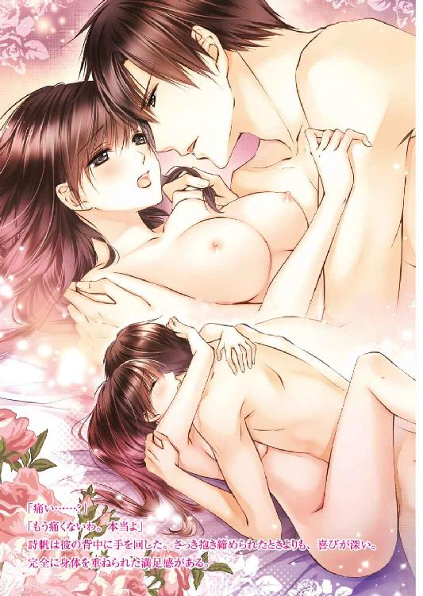
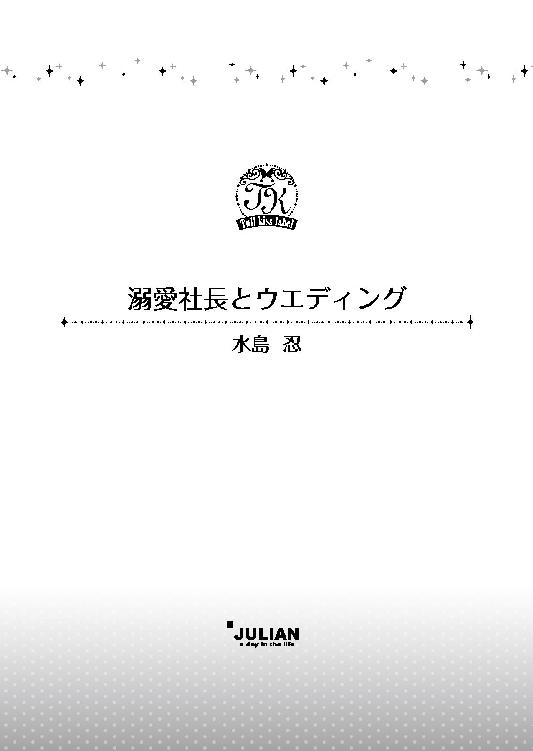
この物語はフィクションであり、実在の人物・団体・事件等とは、いっさい関係ありません。
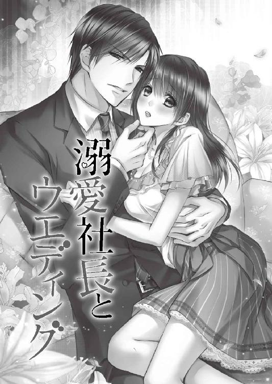
イラスト・弓槻みあ
遠くで子供のはしゃぐ声と大型犬が吼える声が聞こえてくる。
そして、男性の優しい声が......。
あれは誰......？
目を閉じた詩帆は男性の姿を思い浮かべた。
背が高くて、すらりとした細身なのに筋肉質な体形で、脚が長い。彫りが深い整った顔立ちで、眉は男らしく、鼻筋は通っている。口元は引き締まっていて、目はやや鋭くて......。
でも、笑うと、とても優しそうな顔になるのよ。
あなたは......誰？
『詩帆......』
彼の声が聞こえてくる。
あれはわたしの旦那様よ。
子供はわたしの子で......。
芝生の上で元気な子供と大きな犬が転げ回って遊んでいる。
それを想像すると、涙が出てきた。
悲しいわけではなくて、とても幸せだから。
わたしはずっと家族が欲しかった。どんなものより家族が欲しい。両親を亡くし、たった一人になったときからずっと......。
詩帆は両手を差し出した。
わたしを一人にしないで。わたしを迎えにきて。
どうか......。
はっと目が覚める。
詩帆は薄暗い部屋で一人きりだった。夢を見ていたのだ。憧れの家族が手に入った夢だ。現実なんかではなかった。
身体を起こし、溜息をつく。
わたしは独りぼっち......。
いいえ、わたしには家族はいないけれど、友人がいる。独りぼっちじゃないわ。
長い髪をかき上げ、そっと微笑む。
まだ恋も知らない。だけど、いつかは夫になる人に巡り合うのだ。そして、思い描いたとおりの幸せな家庭を手に入れる。
それがいつのことなのか、まだ判らないけれど......。
いつかわたしを愛してくれる人が現れる。今はまだ運命の人に出会っていないだけ。けれども、出会ったら、すぐに判るに違いない。
その人が『そう』なんだって。
二十二歳の青木詩帆はその境遇と年齢のわりに、恋を夢見る乙女そのものだった。
堀田家の朝は忙しい。
少なくとも、居候の詩帆にとってはそうだ。
Ｔシャツにジーンズを穿き、エプロンをつけた詩帆は、豪華なキッチンで立ち働いていた。味噌汁はもう作った。グリルで鮭を焼きながら、同時に溶き玉子をフライパンに流し、オムレツを作っていた。コーヒーメーカーからは芳しいコーヒーの香りが漂ってきている。
そのうちに室内間で話せるインターホンから、堀田家の娘、佐紀の声が聞こえてきた。
「朝食はまだなの？ 早くしてよ」
「はい！ すぐにお持ちしますから」
詩帆はトースターに食パンをセットし、オムレツを皿に盛り、ホットプレートで温めておいたウィンナーと温野菜を添える。そして、トーストとロールパンを皿に置き、コーヒーを注いだ。バター、ジャム、それからカトラリーなどをすべて揃えてトレーに載せ、二階の佐紀の部屋へ持っていった。
佐紀はネグリジェにガウンを着た姿でロココ調のソファに腰かけていて、朝食をテーブルの上に並べようとする詩帆を睨んだ。
「時間どおりに用意してくれないと困るじゃないの。わたしはあなたと違って、お店の責任者なんですからね。立場が重いのよ。遅刻なんかするわけにはいかないんだから」
佐紀は詩帆より五つ年上の二十七歳でありながら、おしゃれなブティックを経営していた。今はネグリジェ姿でも、本来の彼女の服装はとてもファッショナブルで、まるでモデルのようにも見える。しかし彼女は店のオーナーで、ただのＯＬで他人の家に居候しながら住み込み家政婦をしている詩帆より、ずっと責任は重いのだ。
「申し訳ありません。今日は和食がいいとおじ様がおっしゃっていたから......」
佐紀の朝食は絶対に洋食でなければ叱られるのだ。どちらか片方ならともかく、両方作るのは手間がかかる。
「言い訳をしないの。あなたのためを思って、言ってあげているのよ。仕事でミスしたときに、あなた、誰かのせいにするの？」
「......すみませんでした。これから気をつけます」
詩帆は頭を深く下げて、許してもらった。確かに誰かのせいにするなんて卑怯なことだ。最初から素直に謝ればよかった。
大急ぎでキッチンに戻り、和食の朝食の仕上げを始める。もうすぐこの堀田家の主人である幹夫が二階の寝室から下りてくる時間だ。
今から六年前、両親を交通事故で亡くした十六歳の詩帆は、父の友人であった幹夫に引き取られた。
あの事故は悲惨なものだった。父は居眠り運転で対向車と正面衝突してしまい、助手席にいた母共々、亡くなってしまった。相手のほうも死亡し、賠償金を払わなくてはならなくなったのだが、恐ろしいことに車の保険がちょうど切れていた。
相続した生命保険金も貯金も賠償に充てることになり、残された金額は二十万ほどで、一人っ子の詩帆はただ呆然としていた。
祖父母もおらず、親戚から冷たくされ、誰も頼る人がいない。そんなとき手を差し伸べてくれたのが、昔から詩帆が『おじ様』と慕っていた幹夫だった。
幹夫は大手の食品会社を経営していて、裕福な生活をしている。しかし、一人残され、心細くてたまらないときに、血の繋がりもないのに自宅に引き取ってくれたことは感謝してもしきれない。しかも、高校はおろか大学まで学費を出してくれた。
だから、その恩になんとか報いたいと思い、こうして住み込み家政婦らしきことを少しさせてもらっている。とはいえ、詩帆は大学卒業後、幹夫の会社で働いているので、家政婦としては本当に大したことはやっていない。
そもそも、ここは『家』というより屋敷と呼ぶふさわしい建物で、詩帆だけでは手が回らないからだ。
広い敷地に大きな屋敷。プールがあり、車庫には外車が何台も入っている。庭は庭師が手入れしていて、家政婦は時間制で何人も雇われている。もちろん全員がプロフェッショナルで、きちんとしたスキルがある。ときどき、詩帆は彼女達の邪魔をしているのではないかと思うくらいだ。そして、幹夫も仕方なく詩帆に家政婦の真似事をするのを許しているだけではないかと。
おじ様はとても優しい方だから......。
だから、その優しさに甘えないようにしなくてはいけない。学費も少しずつ給料から返している。そして、会社でも少しでも幹夫の役に立てるようにと、微力ながら仕事を頑張っていた。
慌ただしく食事の用意をしていると、出勤してきた家政婦の矢代がキッチンに入ってくる。彼女はずいぶん前からこの堀田邸で働いていて、詩帆もよく知っていた。彼女は料理がプロ並みに上手で、時間制の他の家政婦とは違って、堀田家のメインの家政婦と言える。他の家政婦も彼女の指示に従うのだ。
「詩帆ちゃん、後はわたしがするから、あなたもすぐにご飯を食べてしまいなさい」
「でも、もう少し......」
「遅刻しちゃうわよ」
時計を見ると、確かに遅刻しそうな時間だ。矢代の言葉に甘えて、キッチンにあるテーブルにつき、慌ただしく食事をする。
「ごめんなさい。ちゃんとやれなくて......」
「いいのよ」
矢代は詩帆の手から食べ終えた食器を奪い取り、にっこり笑った。
「早く支度しなさい」
「はい、ありがとうございます」
詩帆は慌ただしく一階の端にある自分の小さな部屋へ行き、エプロンを外すと、鏡の前で身支度をする。
白いブラウスに膝丈のふんわりとしたベージュのスカートを穿き、黒いジャケットを羽織った自分はいかにもまだ新入社員といった雰囲気だ。会社では制服に着替えるのだから、出勤のときは何を着てもいいはずだが、まだ冒険もできない。実際、入社してまだ半年にしかならないからだ。
でも、一生懸命、仕事をしているわ。
少しでもおじ様のためになるなら、なんでもするつもりよ。
長い髪はうなじのところでひとつに結んでいる。母がこの髪を綺麗だと褒めてくれたから長いままにしていたが、もういい加減、短く切って、大人の女らしい髪形をしたほうがいいだろう。
手早く簡単な化粧をすると、黒いバッグを持って、一階に下りていく。
ダイニングルームのほうで話し声がするので、挨拶をするために顔を出した。
一枚板の大きなテーブルには幹夫とその妻の嘉子がいた。幹夫は五十代後半だが、髪が薄く恰幅もいい。そのせいか年齢より少し老けて見えるようだ。対照的に、嘉子は年齢を感じさせない美貌を保っていた。
「おはようございます、おじ様......おば様」
二人に声をかけると、幹夫はにっこり笑った。
「おはよう。もう出かけるのか？」
「はい、行って参ります」
明るい調子で挨拶したのだが、嘉子のほうは冷ややかな顔で頷いただけだった。詩帆は彼女に嫌われているのだが、それも仕方ない。誰だって、余計な居候など受け入れたくないに違いない。家政婦として働いてみたところで、彼女の気持ちが和らぐわけではないだろう。
玄関へ向かうと、ちょうど堀田家の長男である大樹が下りてきた。大樹は二十九歳で、幹夫とは別の会社で働いている。といっても、雑用係のようなことをしている詩帆とは違って、彼はこの若さで課長なのだそうだ。きっと仕事ができるのだろう。
でも、そのわりにいつもゆっくり出勤しているんだけど......そういう会社なのかしら。
「おはようございます、大樹さん」
詩帆は笑顔で挨拶した。
「ああ、おはよう。もう出勤するんだ？」
彼はガウン姿で、大きなあくびをしている。スーツを着れば格好よく見えるのに、髭も剃っていない今はただ怠惰な雰囲気を醸し出していた。
どちらにしても、わたしとは違う世界の人だわ。
大樹のほうでも詩帆のことは、どうでもいい人間だと見なしているところがあった。彼も嘉子と同じように、居候の詩帆にいい感情は抱いてないに違いない。
大樹がぶらぶらとダイニングルームへと入っていくのを見送って、詩帆ははっと我に返った。こんなことをしている場合ではない。玄関脇の小部屋がシューズ・クロークになっていて、そこの片隅から自分のくたびれた黒いパンプスを取り出して履いた。
こういうところは、ちゃっかり家族と同じ場所を使わせてもらっているのだから、自分の立場は中途半端だ。いっそ勝手口から出入りしたほうが、気が楽かもしれない。
詩帆は玄関を出ると、小走りで駆けていく。
バスに乗り、それから電車に乗り換える。早くしないと、それこそ遅刻してしまいそうだ。けれども、詩帆の朝はいつもそうだった。
友人はみんな『楽しみなんかないじゃないの。まるで奴隷みたいよ』と言うけれど......。
わたしはこれで幸せよ。
大好きなおじ様に恩返しができるんだもの。
詩帆はそう思いながら、バス停へと急いだ。
会社に着くと、詩帆は更衣室で制服に着替えた。
襟にリボンがついた白いブラウス、チェックのベスト、そして膝丈の黒いタイトスカートで、清楚だけどなかなか可愛いものだ。ロッカーの裏に取りつけた小さな鏡で身だしなみをチェックしていると、更衣室の扉が開いて誰かが入ってきた。ちらりと見ると、同期の高山翔子だった。
「おはよう！」
笑顔で声をかけると、彼女はゴージャスな巻き髪を揺らしながら近づいてきて、挨拶を返す。
「おはよう。詩帆があたしより早く来てるなんてめずらしいよね」
「たまたまバスが早く駅について、早い電車に乗れたの」
詩帆はいつもギリギリに会社に着いて、先輩達からいつも睨まれているのだ。それでなくても、社長の家に居候しているということがばれて以来、たいして使えないのに社長のコネで入社したと聞こえよがしに言われている。
でも、実際、コネなんじゃないかと自分でも思うわ。
社長の家に居候しているということは秘密にしておきたかったのだが、詩帆が配属された総務部の部長がすでに幹夫から聞いていて、そのことをみんなの前で言ってしまったのだ。もっとも、腫れ物に触るような扱いではなく、嫌われているからこそ用事をたくさん言いつけられるので、かえってよかったかもしれないと思う。
だって、わたしはおじ様の会社のためにたくさん仕事がしたいんだもの。
「詩帆はさあ、大変だよねえ」
翔子は着替えながら話しかけてくる。
「え、何が？」
「朝早くから起きて、家政婦みたいなことしてるんでしょ？ あたしならもう一人暮らしを始めてると思うけど」
確かに、そうするべきかとも考えた。いつまでも居候するより、離れて暮らすほうがよほど堀田家の家族のためになるのではないかと。
少なくとも、幹夫以外はみんな詩帆を煙たがっている。ただ、詩帆が恩義を感じているのは幹夫だし、幹夫は詩帆を追い出したいとは思っていないようだ。それどころか、とても可愛がってくれているのがなんとなく判る。
だから、多少、居心地が悪かろうと、彼の家族がなんと思おうと、家政婦の真似事をやめたくなかった。
もちろん、友人達は大変だろうと心配してくれているけれど......。
そして、翔子もその一人だ。
「わたしは恩返しのためにしていることなんだから......いいのよ」
「恩返しねえ。そういう律儀なところが詩帆のいいところかなあ」
翔子は着替え終わると、髪をひとつにまとめる。そうすると、派手な巻き髪もおとなしく見えるから不思議だ。
「さあ、仕事を始めなくちゃね」
詩帆は翔子と二人で更衣室を出た。
詩帆の仕事は多岐に亘る。という言い方をすれば格好いいが、庶務課所属なので、主に雑用だ。
用事を言いつけられればなんでもやる。会議室の手配をしたり、お茶を出したり、資料を作成したり、コピーを取ったり、それを揃えてまとめて配布したり、備品を発注して、一旦、総務に配送されてきたものをあちこちに社内に配り歩くことまでする。
たまに、急を要しない入力仕事も与えられるが、入力している合間に雑用をしているのか、雑用している合間に入力しているのか、よく判らなくなってくる。どのみち、とても忙しくて、ビルの上から下まで走り回っていることが多かった。
しかし、詩帆は忙しいほうが好きだった。いかにも仕事をしているという気がする。大した仕事ではないかもしれないが、少しでも幹夫に貢献できているというところが嬉しかった。
それに、コネ入社だと白い目で見ていた社員のみんなも、徐々に詩帆が頑張っていることを認めてくれるようになってきたような気がする。
明るく挨拶したら、同じような笑顔を返してくれる人も増えてきたもの！
半年前は無視されることも多かったから、かなりの進歩だ。
昼休みに社員食堂でランチを摂っているときに、翔子にひそひそ声で話しかけられた。
「あたし、今日、噂話を聞いたんだけど......」
「どんな？ また誰かと誰かが付き合っているとか、そういうこと？」
「あなたの『おじ様』、娘を結婚させたがっているそうよ。それも政略結婚」
詩帆は眉をひそめた。
「政略結婚って......この時代に？」
「今の時代にだってあると思う......たぶん。知らないけど」
まさかあの優しい幹夫がそんなことを考えているとは思えない。しかし、最近、よく佐紀に付き合っている男性がいるかどうか尋ねたり、結婚する気はあるのかどうかを確かめたがっていた。
でも、政略結婚させようとまでは思っていないんじゃないかしら。
お見合いなら判る。その話をどこかで聞きかじった人が噂を流しているのかもしれない。
「お金持ちの考えることは判らないものね」
「よく言うわよ。お金持ちの家にずっと住んでるくせに」
「わたしは居候しているだけよ。お金持ちどころか、お給料もほとんどおじ様に渡しているもの。貯金もあまりないのよ」
翔子は大げさに溜息をついた。
「理解しがたいなあ。学費を返したい気持ちは判るけど、受け取るほうの気持ちが......。社長にとっては、詩帆の学費くらい大したものでもないでしょうにね」
「わたしは受け取ってもらいたいわ。本当にお世話になったのよ。親戚にも冷たくされて、おじ様がいなければ、高校中退で働かなきゃならなかったわ。それなのに、大学まで面倒を見てくださって......」
「はいはい、判った。もう......おじ様が大好きなのね」
詩帆は大きく頷いた。
「変な意味じゃなくて、尊敬しているのよ」
だから、わたしも、困っている人がいたら助けてあげたい。
本当のことを言えば、家政婦の真似事をしたり、お金を渡したりするくらいでは、恩返しにはとても足りない。だが、幹夫が自分にしてくれたように、他人に対して無私の奉仕をすれば、それが恩返しになると思うのだ。
「でもまあ、社長の娘が結婚して、家を出ていってくれたら、詩帆も少しは楽になるんじゃない？」
詩帆は思わず頷きかけてしまい、顔を赤らめた。
佐紀は詩帆に対していろいろ口うるさいが、それも仕方のないことだ。それに、佐紀の悪口は言えない。彼女は大恩ある幹夫の娘だからだ。
「そんなことないわ。でも、佐紀さん、お見合いなんて受け入れるかしら」
今朝も彼女は自分が店の責任者だからと強調していた。あれだけ仕事が大事な人なのだから、結婚相手くらい自分で選ぶと言うのではないだろうか。いくら父親が勧める相手でも、気に食わなければ、その気には絶対ならないだろう。
どちらにしても、詩帆には関係のない話だ。
詩帆自身はまだ結婚などとても考えられない。受けた恩を返したと思えるまでには、もっと時間がかかるだろう。
それに、まだ運命の人には出会ってないみたいだし。
恋なんてしたことはない。もちろんほのかな憧れのような気持ちを抱いたことはある。だが、詩帆の人生は十六歳のときに一変し、それからは男の子のことなどのんびり考えている余裕はなかった。
もし恋に落ちて、その相手からプロポーズされたら......？
いいえ、まだそんなことまで考えられないわ。
今は......ただ前に進むのみ。
そして、これからもそうだった。
堀田邸に帰ると、何やら普段と様子が違う。家の中が綺麗に掃除されているのはいつもどおりだが、いつもよりかなり丁寧に玄関周りや居間などが掃除され、花まで飾られていた。
着替えてから、何か手伝おうとキッチンへ行くと、家政婦の矢代から夕食時に客が招かれていることを知らされた。
「なんだかとても大事なお客様らしいわよ。だから、今日は気を引き締めて給仕するようにって奥様がおっしゃっていたわ」
キッチンにはもう一人の家政婦がいて、二人はフレンチの下ごしらえで大わらわのようだった。矢代は和食からフレンチまでカバーできるプロの料理人並みの腕前を持っているので、堀田家ではケータリングを頼まず、矢代に依頼する。詩帆も矢代の指示に従って、料理の支度を手伝ったり、テーブルのセッティングをした。
そのうちに、客がやってきたようだ。
詩帆は嘉子に注意され、給仕のためにシンプルな白いブラウスと黒のスカートを身につけた。ウェイトレス役だが、服装まで気を使わなくてはいけない客だと思うと、なんだか緊張してくる。
嘉子がキッチンにやってきた。
「ワインを出してちょうだい。早くね」
詩帆はアイスバケットに入れたワインを置いた金色のバーカートを、ダイニングのほうへと押していった。
客は幹夫と同じ年頃の夫婦、そして、その息子らしき男性だった。男性は大樹より少し年上だろうか。堀田家の家族は全員揃っていて、彼らを歓待していた。家族ぐるみの付き合いなのかと思ったが、よく考えると、彼らは初めてここに招かれたのだ。
ともかく、大事な客だということは判る。
息子らしき男性は整った顔立ちをしていた。キリッとした眉に涼しげな目元、鼻筋はまっすぐ通っていて、口元は引き締まっている。仕立てのいいダークスーツは身体にぴったり合っているようで、詩帆はなんだかドキッとしてしまった。
まるで、わたしの夢に出てくる男性のようで......。
夢に出てくるのは、詩帆の理想の夫だ。
もしかして、この人が『そう』なの？
一瞬そう思ったが、詩帆は即座に否定する。とても素敵な男性だが、自分のような庶民とは違う。彼は詩帆のほうをちらりと見たものの、すぐに視線を逸らした。
そうよ。この人じゃないわ。
それに、詩帆には気になることがあった。翔子から昼休みに聞いた話が頭に甦ってくる。
ひょっとして、この人が佐紀さんの政略結婚の相手なの？
あの話を聞いたときには嘘だと思ったが、それらしき人物が親と一緒に現れると、信憑性が増す。
どちらにしても、わたしには関わりないことよ。
どんなに素敵な容姿の男性だろうと、佐紀の結婚相手に恋するわけにはいかない。
とはいえ、詩帆はワインのコルクをワインオープナーで抜きながら、緊張していた。いや、これはきっと大事な客だと釘を刺されたからだ。この男性がとても格好よくて、自分が彼を意識しているからではない。
ええ、そうよ。他の人のものには興味が惹かれないわ。
ただ、彼はまだ佐紀の結婚相手と決まったわけではなかった。
ワインを全員に注いで回るとき、詩帆の手は震えていた。問題の男性はその震える手元に気づいたのか、ちらりと詩帆を見て会釈をしてくれる。口元に笑みが浮かんでいて、なんだか優しい人に見えた。
おかげで、詩帆はやっと緊張が解け、ほっとする。堀田家の面々は詩帆を無視していたから、彼だけが自分を判ってくれたような気がした。
ワインを注いでしまうと、詩帆は一旦キッチンに戻り、前菜の皿を並べた大きなカートを押してきて、料理の説明をする。そして、テーブルの上へ置いていった。本格フレンチみたいな繊細な料理の数々を出し、食べ終わった皿を引いていく。
後はメインの料理とデザートだけだ。詩帆はダイニングルームの隅で黙って控えていた。何か用事を言いつけられれば、すぐに応じられる体勢だ。
詩帆は高級レストランで働けるのではないかと思うくらい、何度もこんな給仕をしたことがあった。つまり、何度もこうした会食はこの堀田邸で行われたことがあったのだが、今夜は今までとはやはり雰囲気が違う。
堀田夫妻と相手の夫妻はとても盛り上がっているものの、例の男性は失礼にならないくらいの話しかしていないようだった。佐紀はパーティードレスを着て、見事な宝石のついたネックレスをしていて、男性に何かと話しかけていた。大樹はというと、一人、あまり関心のなさそうな表情をしていたが、誰より熱心に料理を食べてくれていたから、その点では詩帆は嬉しかった。
やっぱり、これはお見合いなのかしら......。
佐紀はとても乗り気のように見える。いや、彼女はこれがお見合いだと知っているのだろうか。知らずに、彼に恋したとしたら、それはそれで残酷ではないかと思うのだ。
もちろん、そんなことを詩帆が口を出す義理はない。
でも、何故だか気になってしまう。
特にあの男性が......。
エイジさんって呼ばれているわ。ジンノエイジって、どんな字なのかしら。
詩帆ははっとして自分を戒める。
彼のことなんて何も知らない。少し外見がいいのと、会釈してくれたというだけだ。これがもし噂どおりの見合いの席ならば、詩帆などお呼びでない。どちらにしても、彼は詩帆とは違う世界の人間だ。
彼が着ているスーツだって、きっとどこかの高級ブランドのオーダーメイドよ。
幹夫や大樹のスーツと会社で働く大抵の男性のスーツとでは、生地の質感や仕立てのよさや身体にフィットする感じがまったく違う。詩帆は庶民に属しながら、金持ちの世界の片隅にいるものだから、そういった見る目だけは育っていた。
時計や車、そして靴だって、庶民の持ち物とは違うはずだ。そんな彼は佐紀と結婚するのがお似合いだ。
もっとも、わたしなんか彼の目にも留まらないでしょうけど。
佐紀のようなゴージャスな美女が目の前にいるのだから、小柄で容姿が秀でているわけでもない自分など背景のようなものだろう。
「詩帆。ぼうっとしてないで、お客様にワインを注いでさしあげて」
黙って立っていた詩帆は、嘉子の声にはっと我に返る。慌ててアイスバケットに入っているもう一本の赤ワインを開け、エイジの父親のグラスに注ぎ足した。そして、エイジの母親、エイジへと順番に注ぎ足していく。彼のグラスにはほとんどワインが残っていない。彼にじっと見つめられているような気がして、また手が震えてくる。
「あっ......」
ボトルを自分に引き寄せるときに、何故か取り落しそうになり、赤いワインが白いテーブルクロスに飛び散る。
「まったく......あなた、何をやってるの？」
嘉子にすぐ叱責される。
「申し訳ありません！」
嘉子の自慢は、ケータリングに頼らずとも、こうした料理で客をもてなせるということだ。しかし、ケータリングのスタッフならば、こんな失敗は絶対にしないだろう。もちろん詩帆はソムリエではないが、今までこんな失敗を一度もしたことはなかった。
よりによって、こんなときに......。
「不器用な子ですみません。お召し物は大丈夫でしたかしら」
佐紀に尋ねられて、エイジは笑って答えた。
「なんともありませんよ。......彼女は新人の家政婦ですか？ それなら責められないな」
詩帆の頬は赤く染まった。彼は雰囲気を和ませようとしてくれているのだ。
「とんでもない。昔からうちにいるのよ。この子ったら......本当にグズなんだから！ さあ、ちゃんとエイジさんに謝りなさいよ」
幹夫はのんびりとした口調で佐紀の言葉を遮った。
「詩帆はいつもちゃんとやっているじゃないか。今夜は少し疲れているんだろう」
「疲れているなんて......そんなこと関係ないわよ」
嘉子はじろりと詩帆を睨みつけた。
「もういいわ。矢代に代わってもらいなさい」
詩帆は目を見開いた。
「矢代さんはもう帰る時間ですので......」
彼女は夕食を作るまでが仕事だった。メインの料理の盛り付けが終わる頃だから、もうすぐ帰るだろう。邪魔をしたくなかった。それに、もう一人の家政婦は契約の時間が過ぎたので、すでに帰宅している。
「わたし、もう失敗しませんから」
「あなたしか残ってないなら仕方ないわね。さあ、注いで」
「はい......。あの、申し訳ありませんでした」
エイジに謝ると、彼は優しく微笑んだ。
「いいよ。全然」
詩帆は舞い上がりそうになったが、その心を押さえつける。もう失敗は許されない。自分に冷静になるように言い聞かせて、ワインを注いで回った。
やがてメインの料理を出し、最後のコーヒーとデザートを出したところで、ほっとする。
一回失敗したものの、後は上手くやれたのだ。
詩帆はキッチンに戻り、積み重なった皿を洗い始めた。いつもは食洗機で洗うのだが、今夜は上等の食器を使っている。手洗いでなければいけない。
「本当に君一人しかいないんだな」
背後に男性の声が聞こえて、危うく皿を落としそうになった。心臓がドキドキしている。振り向くと、そこにはエイジがいた。
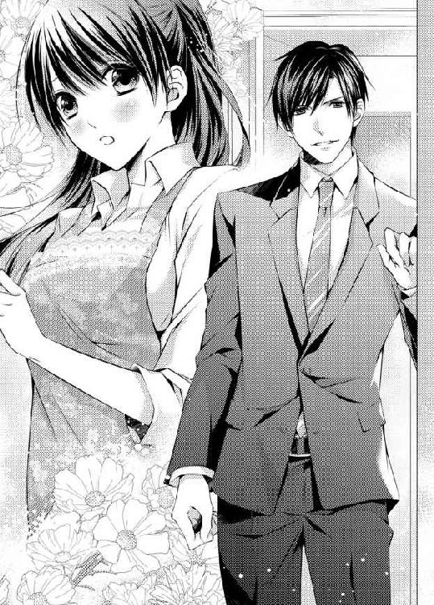
彼は背が高かった。均整の取れた体形で、彼を見ていると、何故だか詩帆の胸は落ち着かなくなってくる。
「あの......何かご用ですか？」
詩帆はタオルで手を拭きながら、彼に向き直った。なるべく事務的に接しようと思った。彼が自分に興味があるなんて思うのは馬鹿げているからだ。
「いや、さっきは責められていたから、ひょっとしたら一人で泣いているんじゃないかと思って......」
彼はにっこり笑う。詩帆は頬が熱くなってきた。
「......大丈夫です。わたし、慣れてますから」
「そうなのか。まあ......そんな感じだったな。君、いくつ？」
「え......二十二歳ですけど」
急に年齢を聞かれた意味が判らず、詩帆は目をしばたたかせた。
「昔からうちにいるって、佐紀さんが言っていたからね。じゃあ、そんなに昔からじゃないな」
詩帆はなんと答えていいか判らなかった。
ここで働いているわけではなく、恩返しに家政婦らしきことをしているだけだと言っても、彼は困惑するだけだろう。かといって、わざわざ両親が亡くなったことや、幹夫にどんなに世話になったかという話を、ここで長々とするのも気が引ける。
そうよ。彼は親切でわたしの様子を確かめにきただけなんだから。
「あの......わたしは大丈夫ですから。無作法な真似をしてしまって、本当に申し訳ありませんでした」
深々と頭を下げると、彼は優しい眼差しでこちらを見ていた。胸がドキドキするが、それを押し隠さなくてはならない。
彼が佐紀の結婚相手なら......。
わたしなんかの出る幕ではないんだから。
「君が謝ることはない。僕が言いたいのはそれだけだ」
彼はそう言って、キッチンを出ていった。
詩帆は緊張が解けて、流しにもたれかかる。ドキドキする胸を手で押さえ、ほっと息を吐いた。
なんて優しい人なのかしら。
今までこの家に来た客の中で、詩帆にあれほど優しく接してくれた人はいない。食べ物や飲み物を出し、言いつけられたことを黙々としている詩帆は、彼らのような裕福な人達には目に入らないようだった。
他人の家のただの家政婦に優しくする人なんて、普通はいない。
詩帆は彼のような人に出会えたことが嬉しかった。だからといって、それは彼が自分とは違う世界の住人だということに変わりはない。
そうよ。ただ、彼が優しいだけ......。
それだけなのよ。これ以上のことは何も起こらない。
もし彼が佐紀と付き合い、結婚することになったら......。
詩帆の心は暗くなった。けれども、詩帆には何も言う権利はない。ただ、そのときが来たら、微笑んでお祝いの言葉を言わなくてはならない。
詩帆はまだ当分、ここで恩返しをする予定だし、幹夫の会社で働いている。どうしても、その慶事を知らないでいることは不可能だ。
芽生えたばかりの恋心を必死で押さえつける。
彼を好きになってはいけない。
そう。判っているのはそれだけだ。
神野瑛司は柄にもなく若い家政婦に優しくしたことに、自分でも驚いていた。
いつもの自分は、誰かに優しくすることはない。何をするにしても計算をして、その結果、一番いいと思われる行動を取るのだ。それが他人には優しく見えるときもあるというだけだ。
だが、あんなちょっとしたことで声高に叱責する堀田の妻と娘に、瑛司は辟易していた。彼女達への反発から、きっと家政婦に優しくしてしまったに違いない。
だいたい、あんな見合いのようなディナーの席を設けられるなんて聞いていない。
瑛司の父は、不動産を開発し、多数のビルやホテルを経営する神野ホールディングスの会長を務めている。瑛司は大学生の頃からホテルで働き始め、今に至るまですべてのグループ会社でいろんな仕事を経験してきて、三十二歳の今はインターネット事業を扱うグループ会社を自ら立ち上げ、神野ホールディングスに大いに貢献している。
父がホッタ食品の社長と知り合いなのは知っていた。が、それほど親しいとは知らなかったので、両親と自分が堀田の娘の誕生パーティーに招かれたと聞いたときには驚いた。
気乗りはしなかったが、父にも付き合いがあるのだろうと仕方なく出席に同意したのだが、家に着いた途端、間違いを悟った。
娘は誕生日ではないし、パーティーでもない。家族同士の親密なディナーで、しかも堀田は娘を紹介し、父も二人きりで話すようにしきりと勧めてくる。
冗談じゃない！
今は恋人もおらず、熱心に仕事をしているが、それは仕事が面白いからに他ならない。親の七光りだの、馬鹿息子だのさんざん言われてきた。そんな悪口をはねのけ、周囲に自分を認めさせるために、どれほど苦労してきたことだろう。今やっと、必死にやってきたことの結果が出て、会社を経営することが楽しくて仕方ない。
そんな時期に、こんなくだらない見合いを父に勧められるとは......。
瑛司は結婚する気はなかった。今のところはまだそんな気にはなれないし、結婚するにしても、相手は自分で選ぶつもりだ。
どんな相手でも選べる......とまではいかないが、自分の容姿に自信がないとは言えないし、大企業の御曹司ともなれば、それだけで女性が寄ってくるのは経験済みだ。それなのに、どうしてあんなヒステリックで意地悪な女を妻にしなければならないのだ。
どうせなら、さっきの若い家政婦のような女性のほうがいい。
すぐ頬を赤らめるような純真でおとなしそうな娘......。
目を瞠るような美女ではないが、小柄でなかなか可愛らしい。スタイルはよかったから、もっと綺麗な服を着せてやれば、きっと変身するだろう。
瑛司は彼女がそうした姿で、にっこり微笑むところが頭に浮かんだ。
トイレに立つふりをして佐紀から遠ざかろうとしたが、たまたまキッチンが見えて、黙々と皿を洗う彼女の後ろ姿が気になり、つい声をかけてしまった。だが、それだけのことだ。彼女とはもう会うことはないだろう。二度とこの家には来ないつもりだからだ。
ダイニングに戻ると、今度は居間に移動して、また愚にもつかない会話を延々と続けさせられた。その間にまたあの家政婦が何度か呼ばれて、コーヒーを注いだり、紅茶を出したり、水割りを作ったり、つまみを出したりした。
彼女はずいぶん疲れているようなのに......。
いや、僕には関係ない。
そう思いつつも、彼女が堀田家にいいように使われているような気がしてならなかった。ここの家族は情がないのだろうか。彼女はこれに見合う給料をきちんともらっているかどうかまで気になって仕方なかった。
ようやく父が暇を告げたときには、瑛司は疲れ切っていた。余計なことを考えていたせいに違いない。
帰り際に、佐紀が瑛司の腕に触れてきた。
「またお会いしたいわ。よかったらお食事にでも誘って」
彼女はそう言うと、携帯電話の番号とメールアドレスが書かれた名刺を差し出した。二度と会いたくないと思っているが、もちろんそんな失礼なことを口に出すわけにはいかない。微笑んで受け取った。
「時間ができたら連絡します」
「絶対よ」
彼女は媚びを含んだ眼差しで見つめてくる。
いくら社交辞令でも、ぜひ誘いたいとは言わなかった。それを察してほしいと思ったが、そんなことができるなら、客の前で家政婦を頭ごなしに叱ったりしないだろう。
その家政婦が堀田邸の一室で待機していた運転手と共にやってきた。初老の運転手は彼女に笑顔でお礼を言っている。きっと彼にも食べ物や飲み物を出して、あのはにかむような笑顔を見せたに違いない。
彼女の名前くらい聞いておけばよかった......。
いや、聞いたところでどうにもならない。まさか彼女を堀田家から奪い取って、自分の家政婦にするわけにはいかないだろう。
彼女とは縁がなかった。それだけだ。忘れよう。
瑛司は車の助手席に乗り、後部座席には両親が乗った。やっと帰れることにほっとするが、今夜のことは父に問い質さなくては仕方ない。もちろん、運転手がいるのに、車の中で話すわけにはいかなかった。
「先に瑛司さんのマンションに寄りますか？」
車が堀田邸の門を出ると、運転手が尋ねてきたが、瑛司は首を振った。
「いや、まっすぐ家に行ってくれ。父に話があるんだ。僕はタクシーで帰るから」
「瑛司......」
父は何か言いたそうにしていたが、瑛司は遮った。
「今夜のうちに話しておいたほうがいいだろう？ 父さんも僕に何か言いたいことがあるんじゃないかな」
両親は何も言わなかった。父は嘘をついて、瑛司を連れ出したのだから何も言えないだろう。母は溜息をついている。
もしかして、何かあったのか......？
ただの見合いの席ではなかったのだろうか。瑛司は初めて不安を感じた。確かに見合いなら見合いをしろと、どうして父は言わなかったのか。
まるで、どうしても瑛司を堀田家に連れていく必要があったように思える。
それは何故......？
瑛司には見当もつかなかった。
家に戻ると、母はもう寝ると言って、そそくさと二階に上がっていった。この件に関わりたくないというふうに。どのみち、母も今夜は仕方なく付き合っただけで、いつもなら父とはまったく話もしない。二人は典型的な仮面夫婦だからだ。
父も母もお互いには関心がない。いや、本当のことを言えば、子供にも関心がなかった。それぞれ自分の好きなことをして、恐らくどちらにも愛人がいる。だが、それを嘆かわしいとはもう思わない。瑛司はずっと前に両親に対して冷めた考えを持っていた。
本物の親より、友人の親のほうがずっと瑛司に優しかった。だが、比べてみても仕方ないと思う。
僕の親は彼らなのだから。
それに、友人の誰もが瑛司の境遇を羨ましがった。冷たい親がいても、神野ホールディングスの御曹司として生まれたことを。
瑛司は居間のソファに座り、父が話してくれるのを待った。
「何か飲むか？」
「ああ......そのほうがよさそうだね」
酒でも飲まないと、話ができない。父はそんな様子だった。一体、この件に何が絡んでいるのだろうか。瑛司の不安はますます強くなってくる。
父はブランデーをグラスに注いで、瑛司にも渡してくれた。そして、瑛司の向かい側のソファに腰を下ろす。
「それで......？ 堀田の娘の誕生パーティーというのは？」
「悪かった。だが、本当のことを言ったら、おまえは行かなかっただろう。ひょっとしたら、あの娘が気に入ることがあるかもしれないと期待したが......」
「気に入るわけがないだろう？」
「そうだろうな」
父は深い溜息をつく。
「正直に言ってほしい。父さんはなんらかの理由で、あの家の娘と僕を見合いさせた。そういうことなんだね？」
「ああ......。実は......堀田家の息子と梨佳が交際していたことがあるらしいんだ」
「梨佳が？ あの男と？」
瑛司は顔をしかめた。両親のことはどうでもいいが、梨佳は大切な妹だ。
名前はなんと言っていただろう。確か大樹だ。名刺ももらった。ホッタ食品ではなく、別の会社で働いているらしいが、彼の話を思い出すと、あまり真剣に仕事のことを考えていないのが伝わってきた。
一方、梨佳はモデルから女優へと転身し、あるドラマで人気が出てきたばかりだ。あんな男と交際していた事実は、梨佳にとってプラスになるものではない。
「もちろん今は別れている。あの男にも今、付き合っている女性がいるようだ。ただ......」
「脅されているんだな？ 何が目的だ？」
「つまり......写真があるんだ。メールで送られてきた。梨佳が......あの男と抱き合っている写真だ」
「裸なのか？」
「いや......上半身だけだ」
瑛司は頭を抱えて、梨佳を罵った。自分がどんな立場なのか判っていないのだろうか。
上半身だけでも、売り出し中の新人女優には致命的だ。梨佳は女優でなくても生きていけると思うが、彼女の意に反して道が閉ざされるようなことがあってはならない。
それに、妹の半裸姿を週刊誌に載せたいわけはなかった。そんなことになったら、永遠に梨佳の名前が傷つけられてしまう。それに、スキャンダルとうちの会社を結びつけられても困る。
「堀田の息子はその写真をどうこうしようとは思っていなかったらしいが、たまたま父親のほうが見つけてしまって......今度のことを企んだ。堀田は自分の会社を更に大きくしたいという野望を持っている。その方法のひとつとして、神野ホールディングスの次期社長と自分の娘を結婚させることを考えついたんだ」
「冗談じゃない！ 死んでもごめんだ！」
結婚自体したいとも思っていないのに、そんな形での結婚なんて絶対に嫌だ。まして、相手があんな意地悪娘だなんて無理としか言いようがない。
「気持ちは判る。だが......」
もちろん瑛司も梨佳のそんな写真が出回っていいとは言えない。父のほうは梨佳のことより、世間体のことが気になっているのだろうが。
「何か交渉の余地があるはずだ。要は、結婚せずとも、何か彼の会社に見返りがあればいいわけだから」
そうだ。なんらかの形で彼の会社を儲けさせてやればいいのだ。
「それは私も交渉してみたよ。だが、奴は頑固で......」
単純に会社の儲けが目的ではなく、もっと違う意味合いのステータスが欲しいということだろうか。大企業と縁続きになれば、政財界で大きな顔ができるといったことが目的なのかもしれない。
「とにかく僕が交渉してみる。いくら形だけでも、あんな女と結婚する気はさらさらない」
結婚は自分がしたくなったときにする。他人から強制されるなんてとんでもない話だ。かといって、もちろん梨佳の写真を公開されては困る。
父はグラスを揺らした。
「無理だと思うな。梨佳を守るために、おまえはあの女と結婚したほうがいい。それですべてが丸く収まるじゃないか」
そのために息子が犠牲になってもいいと思っているのだ。会社のトップとして、父のやり方には学ぶべきことがあったが、家庭人としての父は最低だった。
「誰と結婚するかは、僕が決める」
瑛司はブランデーをぐっと飲み干した。
相手の弱みを握ることはできるだろうか。それとも、何か交渉の糸口はあるのか。
あの家には二度と行かないと思っていたのに......。
若い家政婦の頬を染めた姿が頭に浮かぶ。
いずれにしても、あの家の娘とは結婚しない。それだけは確かだ。
翌日、詩帆はいつものとおり出社した。
昨夜のことはもう忘れよう。眠りにつくまで何度もそう思ったが、なかなかエイジのことを忘れられなかった。
とはいえ、会社で働いているうちに、気分は変わっていた。あれはただの気の迷いのようなものだ。男性に少し親切にされただけで舞い上がるなんて、馬鹿げたことに違いない。
少なくとも、わたしは他人の婚約者に恋焦がれたりしないわ。
今は違っていても、彼は佐紀と結婚するかもしれない。今時、政略結婚なんてと思うが、ああいう裕福な人達の考えることは判らない。
詩帆は自分の課に届いた備品を入れたカートを押して、各部署に配っていく。
こうして見ていると、この会社にも素敵な男性はたくさんいるようだ。どうせなら、自分と対等な男性と恋をしたほうがいい。手の届かない人のことは忘れたほうがいい。
そうよ。こんなわたしにも優しくしてくれる男性はいるわ。
ただ、今まで特に意識していなかっただけで。
エレベーターに乗り、最上階へと向かう。最上階は社長室やその秘書室、それから応接室、重役専用の会議室などがある。ごちゃごちゃした他の階とはまるで違う雰囲気で、ここに来るたび、詩帆は緊張していた。
秘書室に入ると、明るく挨拶する。以前はじろりと睨まれるだけだったが、今はちゃんと挨拶を返してもらえるようになった。
それにしても、例の政略結婚話の噂を流したのは、ここの人達なのかしら。
注文を受けていた備品を秘書の一人に受け渡しながら、そう考える。みんな、とても真面目そうな人達なのに、そんな情報が洩れるなんて信じられない。
でも、噂になったということは、誰かが情報を洩らしたということよ。
それにしても、政略結婚なんて......。
考えてみれば、秘密にすることでもないのかもしれない。社外に洩れて、困るような情報でもなかった。ただ、噂にするには、時代錯誤で面白い話ではある。
まあ、わたしにはどうでもいいことね。
詩帆はまた明るく声をかけて部屋を出た。
カートを押して、エレベーターの前に来たところで扉が開いた。降りてきた男性を見て、詩帆は驚いた。
エイジさん......！
こんなところで会うなんて思わなかった。彼も驚いた表情でこちらを見ていた。
今まで忘れようとしていたのに、こうしてまた顔を合わせてしまうと、胸が高鳴ってくる。それは自分ではどうしようもない反応だった。
「君は......ここで働いているのか？」
「......はい。あの......家政婦もしていますけど」
彼は顔をしかめる。
「どういうことだ？ 確か住み込み家政婦だと......。昼間は働いて、夜は家政婦をしているのか？」
事情を知らなければ混乱するに違いない。かといって、廊下で話し込むわけにはいかないので、簡単に告げる。
「おじ様......いえ、社長はわたしの父の友人なんです。六年前に両親を亡くした後、引き取ってくださって......。お礼に家政婦の真似事をしていますが、昼間はこの会社の庶務課に務めています」
「ご両親を......。だから、長いこと住み込み家政婦をしていると言われていたんだな」
彼の眼差しには同情のようなものが過る。彼の優しさに触れたような気がして、詩帆は頬を赤らめた。
「ええ。だから、昨夜みたいな失敗はそうしないんですけど......」
だけど、彼のことを意識した途端、あんなことをしてしまったのだ。今も彼の顔から目が離せずにいて、そんな自分を持て余してしまう。
わたし、何をやってるの......。
そうよ。ここは廊下よ。エレベーターの前よ。
「あの、社長にご用でしょうか」
「ああ。案内はいらないよ。ほら......」
秘書室から一人の女性秘書が出てきて、こちらに近づいてきた。受付から連絡が来たのだろう。
「お待たせしてしまって、申し訳ありません。ジンノ様ですね？ こちらへどうぞ」
彼女は詩帆をじろりと見た。
「この者が何か失礼なことでも？」
詩帆は首をすくめた。やはりこんなところで立ち話をしていたのが悪かったのだ。また自分の評価が下がるに違いない。
「彼女は知り合いだったので、少し立ち話をしただけですよ」
彼が庇ってくれた......。
詩帆は感動しかけたが、はっと我に返る。別に庇ったわけではなく、事実をありのままに話しただけだ。もっとも、昨日少し喋っただけの知り合いだったが。
「じゃあ、また会おう」
彼はそう言うと、秘書と一緒に応接室のほうへ向かった。
また会おう......って。
いいえ、それって社交辞令ってものじゃない？
いくらボンヤリしている自分でも、さすがにそれは気づく。しかし、本当にまた会えるとしたら、どんなに嬉しいだろう。
でも、わたしにとっては雲の上の人だわ......。
詩帆は溜息をつき、エレベーターのボタンを押す。扉が開くと、カートごと乗り込んだ。
ビルの中を、こまねずみのように動き回る名もなき社員。
それがわたしなのよ。
詩帆はエレベーターの中で今度は深い溜息をついた。
瑛司は振り返り、エレベーターに乗り込む詩帆の姿をちらりと見た。
ただの若い家政婦だと思っていたのに、そんな事情があったとは思わなかった。しかも、あんなギスギスした家で叱られながら家政婦として働き、同時に会社でも働いている。
だから、昨夜、彼女は疲れた顔をしていたのだ。他に誰もいない広いキッチンで黙々と皿を洗っていた彼女の後ろ姿を思い出す。小柄で守ってやりたくなるような女性だ。すぐに頬を赤らめるところも純真そうでいい。
けれども、彼女の本性が純真かどうかは判らない。ひょっとしたら、そのように見せかけているだけかもしれない。
ひねくれているのだろうが、瑛司は信じるより、まず疑うほうだった。ただ、それを外には表さないから、瑛司がそういう性格だと知る者はいないだろう。
応接室にある皮張りの大きなソファに腰を下ろすと、秘書が去っていく。
しばらく待たされた後、堀田が応接室に入ってきた。
「やあ、瑛司君。ずいぶん待たせてしまってすまないね」
「いえ、アポイントメントも取らずに押しかけてきてしまって......」
冷静に考えれば、連絡してから来るべきだったろうが、相手に精神的な余裕を与えたくなかった。それに、すぐにでも解決したい気持ちもある。
「とんでもない。君ならいつでも来てもらって構わないよ」
彼がにこやかに笑い、握手を求めてくる。瑛司は立ち上がり、失礼にならないように握手をした。だが、彼は梨佳の写真を使って、父を脅迫し、瑛司に娘と結婚するように脅迫したのだ。にこにこ笑う気にはならない。
とはいえ、今ここですぐに話を始めるわけにはいかない。とりあえず昨夜のディナーの話をしていると、堀田は何かと佐紀のことを話題にする。それほど彼女と結婚してほしいと思っているのだろうか。
やがて秘書がお茶を持ってきた。彼女が出ていった後、瑛司は作り笑いをやめ、冷ややかな眼差しを彼に向けた。
「申し訳ありませんが、他の方法で我慢していただけませんか？」
「どういうことだね？ 簡単なことじゃないか。佐紀はもうその気になっている。君に夢中だ。後は君がちょいと口説いてやって、プロポーズすればいい」
「お嬢さんはこのことをご存じなんですか？」
「もちろんだ。会社のためになど結婚しないと言い張っていたが、君と会った途端、意見を変えたよ。君ならＯＫだそうだ。これで娘に無理強いせずに済む」
彼は瑛司が娘と結婚するものと決め込んでいる。だが、仮に結婚したとして、こんな形で両家が結びついても何もいいことはない。
いや、父は違う考え方をしているのかもしれないな。
瑛司は昨夜の父の様子を思い出した。父は諦めた結婚したほうがいいと言っていた。ひょっとしたら、父は自分の代わりに堀田の娘との結婚を了承したのだろうか。
だが、今の時代、親が結婚を強制できるはずがない。
そして、瑛司は脅迫に屈するつもりはなかった。
「あなたは梨佳の写真を握っているという。だとしたら、結婚の他に、何か別の方法で取引をしましょう。そのほうがいい」
「しかし......」
「よく考えてください。私が脅迫に屈して、あなたのお嬢さんと結婚したとしましょう。だが、私はお嬢さんに指一本も触れる気はありません。何年も。何十年も。あなたはご自分の娘を不幸な目に遭わせたいのですか？」
もしどうしても結婚しなければならないとしたら、そうする気だ。瑛司は自分が執念深いことは知っていた。目的のためなら、なんとしてでもそうする。強いられた結婚への復讐をするのに、これほど効果的なものはないだろう。そのうちに、佐紀のほうが父親に泣きつくに違いない。どのみち、そんな結婚が長く続くと思えない。
堀田はぐっとこちらを睨みつけてきた。
「私の娘は美しい。君がそこまで忌み嫌うほどではないだろう？」
「確かに顔はそうですね。しかし、あんなに若い家政婦を客の前で厳しく叱咤するような女性を美しいとは思えません」
あんな女と結婚したら、やはり両親以上の仮面夫婦にならざるを得ない。それとも、籍を入れて、両家が結びつけば、自分の娘がどんな目に遭おうが平気なのだろうか。
父もこの男も、温かい血が通っている人間なのだろうか。
瑛司はふとそんなことを考えた。
自分もかなり冷たい人間だと思っていたが、彼らはそれ以上だ。子供でさえも、自分の会社のために自由に動かすのだ。
僕なら......自分の子は心から大事にする。まして、自分のための駒に使ったりしない。
ふと、堀田は何かを思いついたように口を開いた。
「では、あの家政婦はお気に召したというわけかな？」
「それは......ええ。彼女は純真そうで、可愛らしかった。さっき、そこで会いましたが、あなたのご友人の娘さんだとか......」
そう言いながら、瑛司は疑問を抱いた。こんな冷たい男がどうして友人の娘を引き取ったのだろう。住み込み家政婦をしていたというが、まさかそんなものが欲しくて引き取ったわけではないだろう。
堀田は何故だか笑みを浮かべていた。
なんなんだ、この男は。何を考えているのか。
「では、彼女となら結婚しても構わないということかな？」
「......どういう意味です？」
瑛司は警戒した。彼は自分の娘ではなく、家政婦と結婚させようとしているのだろうか。そんなことをする意味がまったく判らない。
「あれは私の娘なんだ」
一瞬、言葉が出なかった。
純真な娘だと思っていたのに、騙されたのだろうか。本当は堀田の家族なのに、家政婦の真似をしていたのか。
いや、そんな芝居をする必要はどこにもないはずだ。彼女は少し失敗しただけで、あれほどの叱責を受けていた。特に、堀田の妻と娘は彼女に対して攻撃的だったと思う。
「どういうことなんです？ 彼女は両親を亡くしたと......」
「二十三年前、彼女の母親は秘書としてここで働いていた。美しい女性で、私はつい関係を持ってしまった。妊娠したので産みたいと言い出して......。私も根っからの悪人というわけではないから、慰謝料と養育費を一括で払った。その後、田舎に帰って結婚したらしい。その結婚相手を、彼女はお父さんと呼んでいたんだ」
「彼女はあなたのことを『おじ様』と呼んでいました」
「さすがに大っぴらに父親だとは言えないからな......。ともかく向こうの親が死んだ後、引き取った。他の女に産ませた子供がいることは妻も知っていたが、引き取るとなると、大変だったよ......」
「だから、住み込み家政婦をやらせたんですか？」
堀田は肩をすくめた。
「それはあの娘のアイデアだ。頭のいい娘だろう？ 十六、七で自分の生きる道に気づいたんだ。家政婦扱いすることで、妻も子供達も溜飲を下げることができたわけだ」
やはり、この男には血も涙もないことが判った。引き取っただけでもましだったのだろうか。しかし、十六、七歳の女の子、しかも自分の娘なのに守ってやらないとは......。それに、彼の家族もひどい。思いやりなどないに等しいに違いない。
瑛司は一気に彼女へ同情する気持ちが深くなっていった。
彼女をこんな非道な家族から守りたい気持ちになってきて......。
いや、待て。彼女がひどい目に遭っていたのだとしても、彼女が見た目どおり純真かどうかは判らない。
「それで、あなたは佐紀さんと同じように、彼女にもこの政略結婚のことは伝えたんですか？ 自分が選ばれるかもしれないと知っているんですか？」
堀田の目がきらりと光った。
「もちろんだ！ 実の父である私のためなら政略結婚をしてもいいと言ってくれている。健気な娘だろう？ 彼女はいい妻になる。家事は完璧だし、結婚を夢見ているからな」
瑛司は胸が悪くなった。
それを知っていて、彼女は純情ぶっていたのだろうか。腹違いの兄姉に無能な家政婦扱いされるよりは、結婚したほうがずっといい。そして、相手は大企業の御曹司ならなおいいということだろう。
彼女の頬を赤らめるところを思い出す。もちろんあれまで演技というわけではないだろう。しかし、見かけどおりの純情娘ではなかったということだ。
両親が亡くなったなんて嘘をついて......。
もちろん、廊下で堀田の庶子だとは説明できないのは判るが、何もかも知っていて、自分の気を引いたのだと思うと、気分が悪くなってくる。
まんまと罠にはまってしまった。そして、その罠をかけた堀田がほくそ笑んでいるのだ。
梨佳が大樹と交際していたというのも、この男が糸を引いていたに違いない。瑛司はそう考えて、ぞっとした。
何がなんでも、両家を結びつけようとしているのだ。
業務提携だとか、そういった甘いことを望んでいるのではない。
だとしたら、あのヒステリックな冷たい女よりは、計算づくの嘘つき女のほうがましだ。そちらのほうが自分の同類として扱える。
それに......。
どうしても彼女のことが忘れられない。本性を知った今でも、守ってやりたいと思ってしまう。
あの可憐な風情は見せかけだけに過ぎないというのに。
「......判りました。彼女と結婚しましょう」
堀田はほっと息を吐いた。
「それなら、携帯の番号を教えるから、まずデートに誘ってもらえないだろうか」
「デートですって？ そんな手間暇をかける必要は......」
「いや、彼女はとてもロマンティストなんだ。いくら政略結婚でも、それを感じさせないようにすることくらい、君ならできるだろう？」
今さっきまで娘のことなんてどうでもいいという感じだったのに、急に彼がそんなことを言い出してきたので戸惑った。
「折りを見てプロポーズしてほしい。そうしてくれれば、彼女は喜んで君に従うだろう。なんでも言うことを聞く従順な娘なんだ。君はいい選択をしたよ」
なんだか狐につままれたような気がしてくる。一体、自分は何を承諾してしまったのだろう。どうして、わざわざデートなどしなければならないのか。
そう思いながらも、瑛司は彼女の携帯番号を受け取った。
デート......。彼女と......。
彼女はデートのときくらいあの長い髪を結ばずに来てくれるだろうか。シーツの上にその髪が広がるところを想像して、ふと我に返る。
「よろしく頼むよ」
堀田に見送られて、瑛司はエレベーターに乗り、地階で下りた。地下には駐車場がある。停めてある自分の車に近づくと、向こうからガラガラと音がして、例の彼女がカートを押してやってくるのが見えた。
待ち伏せしていたのか......！
計算高い女狐め。
彼女は瑛司に気づいて、頬を赤らめた。ひょっとしたら、彼女は自由自在に頬を赤らめる特技でも持っているのかもしれない。
躊躇いながらも彼女は近づいてきた。カートの中は空だ。ここで一体、何をしていたのだろう。
「やあ......また会ったね」
彼女は嬉しそうに微笑んだ。瑛司は一瞬ドキリとする。その笑顔があまりにも無防備に見えたからだ。
「お帰りですか？」
「ああ。社長と有意義な話し合いをしたよ」
「そうなんですね。わたしは守衛さんに届ける物があったので......。あ、どうでもいいことですね。あの......では、これで」
彼女は深々とお辞儀をして、去っていこうとする。瑛司は慌てて彼女の腕を掴んだ。
「えっ......」
まじまじと彼女の顔を見つめた。
全体的に小作りの顔。大きな瞳。鼻が可愛らしく、唇は小さい。美人というよりは可愛い印象の顔だが、決して不細工ではない。バランスは取れている。
この女性が僕の妻になる......。
そう思うと、何かわけの判らない気持ちが込み上げてくる。
胸の奥が妙に熱くなってきた。
なんなんだ、この気持ちは。
瑛司は腕を放した。
「悪かった。引き留めたりして。君は......青木さん？」
名札に『青木』と書いてある。育ての父親の苗字だろう。
「名前はシホというんだね？」
「詩に帆先の帆です。あの......あなたの名前を伺ってもいいですか？」
知っているくせに。なんて白々しい。
瑛司はムッとして、名刺入れを出すと、名刺を一枚渡した。彼女はそれを両手で受け取り、きらきらとした目で見上げてきた。
「ありがとうございます！ 神野さん......」
瑛司は苦笑した。
彼女の演技は完璧だ。だとしたら、自分も彼女の演技に合わせよう。ロマンティックなデートが好みだと言っていたな。
「瑛司でいいよ。詩帆ちゃん」
彼女の大きな瞳は更に大きくなった。
「い、いいんですか？ わたしなんかが......」
「いいに決まっているさ」
瑛司は微笑んだ。
「今度、連絡するよ」
「えっ......でも......」
「堀田さんが君の携帯番号を教えてくれたんだ」
彼女はポカンとしている。
「あの......あの、どうしてですか？」
いつまでもしらばっくれている気なのだろうか。いや、ひょっとしたら、瑛司の妻は佐紀に決まっていると思い込んでいたのかもしれない。そう思うと、なんだか彼女に同情の気持ちが湧いてくる。
あんなふうに毎日、叱責されていたら、自信もなくなることだろう。
瑛司は手を伸ばして、彼女の頬にそっと触れてみた。
なんて滑らかな肌なんだろう。顔だけでなく、身体もこんなふうなのだろうか。
「君が可愛いから」
無意識のうちに、瑛司の口からそんな言葉が飛び出していた。
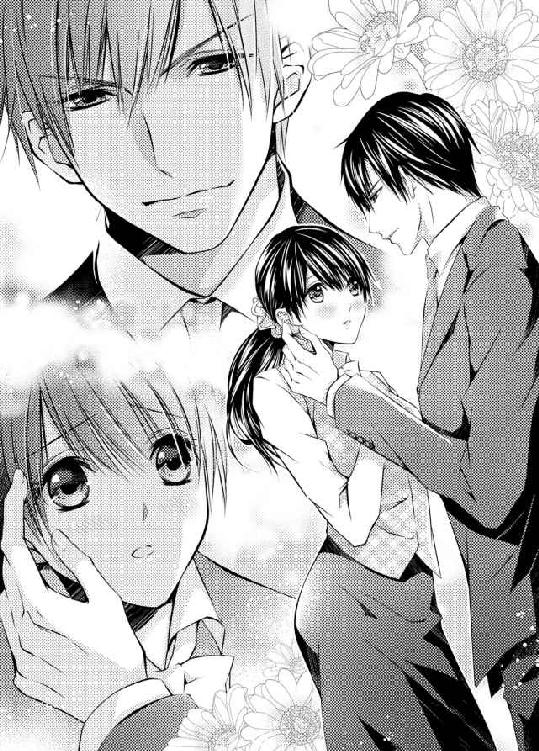
「瑛司さん......」
呆然としている彼女の顔を見て、ふっと笑った。
「じゃあ、またね。詩帆ちゃん」
瑛司は手を離すと、車に乗り込んだ。彼女はまだその場に佇んでいる。ひどく動揺しているようで、そんな彼女をやはり可愛く思ってしまう。
とんだ嘘つき女なのに......？
いや、彼女にも嘘をついた理由があるのかもしれない。
瑛司の心は詩帆と同じように、もしくはそれ以上に揺れていた。
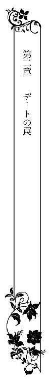
詩帆はその日はずっと仕事にならなかった。
いや、言われたことはこなしていても、どこか気持ちが宙を漂っている。同時に、彼の言葉が頭の中をくるくると回っていた。
『今度、連絡するよ』
それって、いつ......？
『君が可愛いから』
本当に？
『じゃあ、またね、詩帆ちゃん』
詩帆ちゃんなんて......。
彼は本気であんなことを言っていたのだろうか。詩帆はどうか本気であってほしいと思った。あんなふうに男性から言われたのは初めてのことだった。
大学時代、何度かデートに誘われたことはあった。だが、詩帆はいつもさり気なく理由をつけて断っていた。家のことが忙しいから、と。それは真実であったけれども、一番の理由は、誘ってきた男性に興味が持てなかったからだ。
友人達はデートなんてもっと気軽にするものだと言われたが、退屈な時間を過ごすよりは、家事をしていたほうがいい。少なくとも、何かのためになるからだ。そんなふうに考える自分が、瑛司にお世辞めいたことを言われただけで、どうしてこれほど気になるのだろうか。
わたし、彼のことが好きなの......？
結局、昨夜からずっと彼のことばかりが頭を占めている。これで好きではないなんて言ったら、ひどい嘘つきだ。
でも......。
政略結婚はどうなったの？
彼は佐紀さんと結婚するわけではないの？
もし彼が本気だとしても、佐紀さんから彼を奪うような真似はできないわ。それとも、彼は遊びのつもりでわたしを誘っているのかしら。
恋愛経験のない詩帆には、男性の気持ちが判らなかった。遊びの相手にはされたくない。しかし、政略結婚の計画が本当なら、詩帆にはそれを邪魔する権利はない。
どんなに彼のことが好きになっていても......。
恩のある幹夫の意志に反することをしてしまったら、自分のことを許せなくなるだろう。
しかし、詩帆の携帯番号を幹夫が教えてくれたと、彼は言っていた。だとしたら、政略結婚の話はなかったのだろうか。
だいたい、あれはどこから回ってきたか判らない噂話なんだから......。
たまたまあの日の夜にディナーが行われたから、妙に信憑性が増しただけで、本当はまったく別のことだったのかもしれない。
どうか、そうであってほしい。
そうでなかったら、わたしは......。
詩帆の心は右に左に揺れ動いていた。
心は彼の誘いに応じたがっているが、理性はやめたほうがいいと言う。いや、そんなことは誘われてから考えればいい。彼はただ詩帆をからかったに過ぎないのかもしれない。
だって、たぶん、わたしの顔に書いてあったんだと思うわ。
『あなたに惹かれてます』って。
何かあると、すぐ顔が赤くなるから、詩帆の考えていることはすぐに判ると、友人達に言われているくらいだ。自分でそれをコントロールすることもできない。どんなことでも、すべて顔に表れてしまうのだ。
そうよ。本気のはずがないわ。
政略結婚計画が本当でなかったとしても、あの美人の佐紀が彼に興味津々だった。彼女を差し置いて、並みの容姿の自分になど目を向けるはずがない。
誰がどう見ても、お似合いなのは瑛司さんと佐紀さんだもの。美男美女のカップルよ。
詩帆はあれこれ考えながら、堀田邸に帰った。夕食の手伝いをいながらも、まだ頭の中は瑛司のことばかりだった。
だから、携帯が気になって仕方ない。彼から連絡が来るかもしれないから。いや、来ないかもしれない。
食事の後片付けが終わっても、風呂から上がっても、まだ連絡はない。
詩帆はがっかりした。
彼は何も今夜電話するとは言っていなかった。そう思いながらも、詩帆は自分の部屋のベッドに座り、携帯を弄っていた。
突然、着信音が鳴り響き、あやうく携帯を取り落すところだった。震える手で電話に出ると、男性の声が聞こえてきた。
「......詩帆ちゃん？」
「は......はいっ......」
上擦った声を出してしまい、後悔する。彼からの連絡をずっと待っていたようにしか聞こえないからだ。
「あの......瑛司さん......ですよね？」
「覚えていてくれたんだ？ 嬉しいな」
「こ、こちらこそ......」
詩帆は舞い上がりすぎて、自分が何を言っているのか判らなくなっていた。
落ち着かないと。
いくら彼のことを好きになってしまったにしろ、これではあからさますぎる。彼は別にこちらのことを好きでもなんでもなくて、社交辞令として連絡してくれただけかもしれないのに。
でも、わたしに社交辞令なんて必要ないわ。
嫌だったら、電話なんてかけないはずだ。まして、幹夫に携帯の番号まで訊くとは思えない。
胸の奥がカッと熱くなってくる。
彼もわたしが好き......？ それとも、少し興味があるだけ？
思えば、男性とこんなふうに話すことさえ初めてだった。もちろん、なんでもない男性となんでもない連絡をすることはある。だが、声を聞くだけで胸の鼓動が高鳴るような男性とは初めてだ。
「あの......わたしに何か用事とか......？」
つまらない質問をしてしまった。けれども、彼がどうして電話をしてきたのか知りたかったのだ。こういう経験がないので、詩帆には察するということができない。全部、口に出してもらわなければ判らなかった。
電話の向こうでクスッと彼が笑う。その笑い声にもドキッとする。
「君の声を聞きたい......というだけで電話をしてはいけないかな？」
「そんな......そんなこと......」
「君にはこういう電話、いくらでもかかってくるんじゃないか？」
「まさか！ 初めてです！」
思わず勢い込んで否定してしまった。彼の年齢にふさわしい大人の対応ができない。まるで子供そのものだ。
「ごめんなさい。わたし......大きな声を出したりして。本当に......男の人から電話がかかってくることなんてなくて......」
一瞬、彼は黙ったので、詩帆は不安になった。何か変なことを言っただろうか。
「まさか今まで付き合っていた男がいなかったって言うんじゃないだろうね？」
「お......おかしいですか？ わたし、大学を卒業したばかりだし......会社ではあまり評判がよくないんです。社長の家に居候しているからコネで入社したって言われて......」
「居候だって？」
彼の声のトーンが変わった。
「居候でしょう？ わたしは何から何までおじ様とそのご家族のお世話になっているんだから」
「......そうかな。いや、自分をそこまで卑下することはないと思うよ」
卑下しているつもりではなく、ただの事実を口にしているだけだ。だが、彼がそう言ってくれたことは嬉しかった。
「いいの。居候で。でも、本当に男の人とはお付き合いしたことがないんです。学生時代はそんな気になれなかったし......」
「今は？」
「え......あの......今は......えーと」
彼はふっと笑った。
「その気はあるということかな？ 実は今度の日曜、君をデートに誘いたい」
鼓動がドクンと跳ね上がった。
デート......。
彼は確かにそう言ったわ。わたしの聞き違いじゃなく。
「......本当に？ わたしを誘いたいの？」
詩帆は囁き声になっていた。信じたいのに信じられない。彼は哀れな家政婦をからかっているのではないだろうか。
「嘘なんか言わない。どこに行きたい？」
「わたし......ああ、日曜は仕事があるわ」
「仕事？ 君の仕事は雑用のように見えたが......」
「会社ではなくて、家政婦としての仕事なの。そうよ。わたし、デートなんかできないんだったわ」
彼はまるで怒りを堪えるように、すっと息を吸い込んだ。
「いや、君はそこまでする必要はないよ。奴隷じゃないんだから。居候の立場が嫌なら、その家を出ればいいんだ」
彼はわたしのために怒ってくれているんだわ！
そう思うと、胸の中が温かくなってくる。詩帆の友人もみんなそう言ってくれた。それは、詩帆のことを心から考えていてくれるからだ。
詩帆は笑い声をあげた。
「わたしの友人と同じことを言うのね。でも、わたしはおじ様に恩返しができたと思えるようになるまでは、仕事をさぼったりしないの。昨夜みたいに失敗することもあるけど、できるだけのことはしたいと思っているわ」
彼は友人と同じように溜息をついた。
「君は......変わっている」
「みんなそう言うのよ」
詩帆はクスクス笑う。
「だが、今度の日曜は大丈夫だ。君の『おじ様』がデートを許してくれたから」
「おじ様が？ 本当に？」
「ああ......。君だって判っていることだろう？」
「え、何を？ あ......だったら、佐紀さんとはなんでもないのね？」
彼はまた一瞬黙った。
詩帆は自分の口を手で押さえた。余計なことを言ってしまったかもしれない。幹夫がデートしてもいいと言ってくれたなら、あの政略結婚の噂はでたらめだったということだ。
「あの......昨夜、佐紀さんと話が弾んでいたように思えたから......」
「僕は君を選んだんだ」
また詩帆の鼓動が跳ね上がる。
彼の言葉が胸の中に染みとおってくる。
わたしは彼に選ばれたのね......。
詩帆はそっと囁いた。
「わたし......あなたとデートしたい」
「よし。じゃあ、どこへ行こうか？」
彼の声が急に優しくなってきた。詩帆はそれだけで自分の気持ちが安らいでくるのを感じる。
彼が......好き。
好きだから、彼が優しくしてくれると嬉しいのだ。彼のほうはそこまでの気持ちではなく、軽い気持ちで誘ってくれているのかもしれないが、それでも構わない。
彼とデートしたい......！
「わたし、デートってどういうことをするのか知らないの」
「そうか......。それなら、僕がプランを考えるから、それでいいかな？」
「ええ。お任せします」
どんなデートになるのだろう。想像もできないが、わくわくしてくる。
「じゃあ、今度の日曜。......後でまた時間を連絡するよ」
「判ったわ。あの......おやすみなさい」
「ああ、おやすみ......詩帆」
彼に呼び捨てにされて舞い上がった途端、電話は切れていた。
少し物足りなかったが、彼も忙しいだろう。それより、彼とデートするのだ。嬉しくてならない。何より政略結婚が嘘だったことにほっとしている。
ああ、よかった！
明日、日曜に出かけていいかどうか、幹夫に確認しよう。詩帆は携帯を胸に抱いて、踊りだしたい気分だった。
こんな幸せな気分を味わったのは初めて......！
今までもそれなりに幸せだったつもりだが、これは種類の違う幸せのような気がする。羽が生えて、ふわふわとどこかへ飛んでいきそうなくらいに嬉しくてたまらない。
「瑛司さん......」
そっと名前を呼んでみる。
わたし、彼の恋人になれるかしら。
たった一度のデートで、一足飛びに恋人だなんて思うのは馬鹿げている。お互いの気持ちを告白し合って、愛し合っていると確認したら、恋人になれるのではないだろうか。いや、経験はないから想像に過ぎないが。
だから、自分と瑛司はまだそんな段階ではないということだ。
詩帆は気を落ち着けるために大きく深呼吸をした。ふと目覚まし時計が目に入る。もう寝なくては、明日、早起きができない。
慌てて灯りを消して、上掛けの中に入る。
今夜は興奮しすぎて、とても眠れそうになかった。
日曜の朝、詩帆は朝食の支度と片付けをした。
そして、後からやってきた家政婦にすべてを任せて、うっとりするくらい綺麗なオフホワイトのワンピースに着替えた。
デートに誘われた翌朝、日曜に瑛司と出かけてもいいかどうか幹夫に尋ねると、満面に笑みを浮かべて了承してくれた。それどころか、その日の昼休みに高級ブティックへ連れていかれて、このワンピースと靴とバッグを買ってもらったのだ。
日頃、家事をしてくれているお礼だと言われて......。
もちろん最初は断ろうとしたのだが、瑛司とデートするなら、これくらいの服を着なくては釣り合いが取れないと言われた。それに合わせて靴もバッグもそれなりのものが必要だ、と。
確かにそうだろう。彼がカジュアルな服を着たとしても、それと詩帆のカジュアルな服はまったく質が違うと思うのだ。それは、堀田家の人々の服装を見ていれば判る。
幹夫は詩帆が恥をかかないように気を使ってくれた。だから、ありがたくこのワンピースをいただいた。
また恩を返すどころか増えた気がするけど。
ともかく、今は瑛司とデートすることで頭がいっぱいだ。今日は髪をサイドだけ編み込んだハーフアップにしている。そのほうがこの上品なワンピースには似合っていると思うからだ。
彼が迎えにくる時間だ。ドキドキしながら一階に下りる。休みの日には堀田家の家族はそれぞれ遊びにいって誰もいないが、今日もそうだった。いつもなら詩帆はジーパンを穿いて、家のあちこちを掃除している時間だ。
インターホンが鳴る。
彼だわ......！
詩帆は自分で応対し、玄関へと出ていく。靴はもちろん幹夫に買ってもらったものだ。ドアを開けると、門のほうから一台の車がやってきて、アプローチの前で停まった。
瑛司は運転席から降りてきた。
詩帆の胸は彼の姿を見ただけで騒いだ。休日なのだから当たり前の話だが、彼はスーツ姿ではなかった。今まで詩帆は彼がスーツを着ている姿しか見ていなかったから、どうしても他の服装をした彼を思い描くことができなかったのだ。
今日の彼はⅤネックの白いシャツにベージュのチノパンを合わせ、紺色のスリムなジャケットを羽織っていた。
思わず、詩帆は彼に見蕩れていた。
彼のほうも詩帆をじっと見つめている。
「綺麗だね......。君がこんなに綺麗だとは思わなかった」
「そんな......。この服のせいだわ。おじ様が着ていきなさいって買ってくださったの」
それを聞いた途端、彼は唇を歪めて、皮肉めいた笑みを見せた。だが、すぐに優しげな表情に戻り、詩帆に手を差し伸べた。
「さあ、出かけよう。今日は家事なんてしなくていい」
詩帆は彼の手を取り、助手席に乗った。彼がドアまで閉めてくれる。こんな丁寧な扱いを受けたのは、生まれて初めてだった。
彼が運転席に座るとドキドキした。車内に二人きりだからだ。
車が走り始めても、まだ緊張が解けない。何か喋らなくてはと思い、詩帆は口を開いた。
「わたし......シンデレラみたい」
「シンデレラ？ 意地悪な継母と姉に苛められて......？」
「そうじゃなくて、家事をせずに、いつもと違う服を着て出かけるから」
「じゃあ、この車はかぼちゃで、僕はネズミということかな？」
彼の冗談に、二人で声を上げて笑う。
「まさか......。あなたはネズミじゃなくて......」
「ああ、王子なんだ。よかった。そう思ってもらえて」
彼がこんなに話しやすい人でよかった。詩帆は誰にでも笑顔で話しかけるほうだが、彼に対してだけは妙に引っ込み思案になってしまう。
きっと意識しすぎているからだわ。
いつもどおりの自分でいよう。こんなにオシャレをしたから、かしこまってしまうのだ。いつもの自分なら、もっと楽しい一日になるだろう。第一、詩帆が緊張していたら、彼も楽しくないだろう。
「どこへ行くの？」
「観劇のチケットがあるんだ」
「お芝居を観にいくの？ わたし......初めてよ！」
「そうなんだ？ あまり興味がないかな？」
「そうじゃなくて......今まで機会がなかったから。それに、以前は田舎で暮らしていたから、お芝居なんてやるような場所はなかったの。映画館だって、すごく遠くにあったわ」
詩帆は昔のことを思い出しながら言った。
「田舎というと......田んぼがあったりとか？」
「海辺の町よ。だから潮の香りを嗅ぐと、とても懐かしい気分になるの。波の音を聞いたときも......。父は漁師だったから、わたしは魚が大好き」
「漁師？ 君のお母さんは社長秘書だったのに？」
「えっ......」
詩帆は運転する彼の横顔を見た。
「どうして、そんなことを知っているの？」
「......もちろん堀田さんに聞いたんだ」
幹夫がどうして瑛司にそんなことを言ったのか、よく判らない。彼が詩帆に興味を持っていたようだから、話したのだろうか。
彼がわたしに興味を持ってる......？
こんな素敵な人が本当に？ なんだか信じられない。
こうしてデートをしているというのに、やはりどこか夢の続きのような現実感がなかった。
「母の実家がその町にあったのよ。母が東京での暮らしに疲れて故郷に帰ってきたときに、同級生だった父と再会して、結婚したというわけ」
「なるほどね......。じゃあ、君は泳ぎが上手なんだ？」
「そうよ。深いところでも大丈夫。瑛司さんは海が好き？」
「好きだよ。泳ぎはまあそこそこって感じだけど、君の言うような潮の香りや波の音は好きだ。砂浜の感触も」
詩帆は自分が好きなものを彼も好きだと言ってくれて嬉しかった。特に、海は詩帆にとって懐かしい故郷や両親を思い出させるものだからだ。
「わたしね......おじ様に引き取られて幸せだと思っているけど、許されるなら、本当は故郷にずっといたかったわ」
「そうかもしれないね......。でも、今、君は幸せなのかい？」
「そうよ。幸せよ」
「この間の夜みたいに、些細なことで叱責されても？」
詩帆はあのときのことを思い出した。白いテーブルクロスに散ったワインの赤を見たとき、自分の失敗に血の気が引く思いがした。
「でも、あれはわたしが悪かったんだから」
「僕は君があんなに叱られたのを見て、不愉快だった。しかも、君は本物の家政婦ではないのに」
詩帆はクスッと笑った。
「あなたは本当に優しいのね。あなたが取り成してくれて、とても嬉しかった」
「僕が......優しい？」
「わざわざ、後で声をかけてくれたし......。優しくなければ、それこそ家政婦に、あんなふうに気遣いの言葉をかけたりしないでしょう？」
微笑みながら彼の横顔を見た瞬間、はっとする。彼はとても奇妙な表情で前を向いていた。だが、ちらりと詩帆を見て、口元に笑みを浮かべる。
「優しいなんて言ってもらえて光栄だな」
その言葉に妙な響きがあった。
ううん。きっと気のせいよ。この幸せが壊れないか不安だから、ほんのちょっとしたことが気になるだけなんだわ。
「そういえば、瑛司さんはどんなお仕事をしているの？」
「......堀田さんから聞かなかった？」
「聞いてないわ。堀田家の人達と同じ世界の人だということは判るけど」
彼は眉をひそめた。
「同じ世界？ どういう意味なんだ？」
「ごめんなさい。変な言い方をしてしまって。わたしのような庶民とは違うという意味よ。服装だけでも、わたしと違うって判るの」
「そこまで違わないだろう？ 僕は確かに神野ホールディングスのグループ会社の社長をしているけれど、入社したときは君みたいにコネだとかいろいろ陰口を叩かれたんだ。今は僕にそんなことを言える奴はいないと思う」
彼は生まれながら裕福だったかもしれないが、とても努力して、いろんなものを身につけた人なのだろう。だから、こんなに自信があるのだ。
詩帆はうっとりした。
なんて素敵な人なのかしら。
親が裕福で、子供がそれにあぐらをかいてダメになるのはよく聞く話だ。だから、逆に、その状態で努力できるのは凄いと思う。
この人を好きになってよかった。
詩帆は心からそう思った。
「わたしも頑張って、瑛司さんみたいになれたらいいのに」
「僕みたいに？」
「社長を目指しているわけじゃないけど、コネだけじゃないって思われたいの」
「ああ......。でも、別にキャリアを築きたいとかは思っていないよね？」
「もちろんよ。そんな大それたことは考えてないわ」
彼は何か納得したように頷いている。詩帆は首をかしげた。
仕事は生きていくために大事なものだ。けれども、それより欲しいものがある。
家族が欲しい......。
だが、今はただ恩返しをしなくてはならない。詩帆にとって、結婚はまだ当分先のことだった。
観劇はとても楽しめるものだった。
高校の文化祭で、演劇部の舞台を観た以来で、ちゃんとした芝居を観るのは初めてだったので感動した。テレビにも本にものめり込むタイプなので、生の舞台には笑ったり泣いたりで、シーンのひとつひとつが心に刻みつけられた気がした。
劇場を出てからも、まだ芝居のことが頭に残っていて、雰囲気のいいカフェに入ってからも、詩帆は夢中でその話をした。どこのシーンがよかったか、どのシーンで泣けたか、自分がいかに芝居を楽しんだかについて延々と喋り続けて、ふと気がつく。
なんだか、わたし一人で興奮して喋ってるみたい......。
けれども、彼は退屈な顔ひとつ見せず、笑みを浮かべて、聞いてくれていた。
「ごめんなさい。わたし、ほとんど一人で喋っていて......。退屈だったでしょう？」
「いや......。自分が選んだ芝居がそんなに君を感動させたのかと思うと、とても嬉しいよ。『面白かった』なんて一言で片づけられたら、ショックだからね」
「今まで興味があったけど、行く機会がなかったの。観劇の楽しさを知ったから、これからはなるべく時間を作って、行ってみたいわ」
彼はにっこりと笑った。
「僕と一緒に行くのはどう？」
「え......あの、行ってくれるの？」
「君が行きたいと思うなら。実を言えば、僕はそんなに芝居を観るほうじゃないんだ。だけど、君がそんなに詳しく解説してくれるなら、もっと行ってみてもいいという気になってくる」
詩帆は顔を赤らめた。
「本当にそう思ってくれるなら......」
彼が何を考えているのか、よく判らないので困る。自分が人の気持ちにそれほど敏感だというわけではないが、彼の言葉だけはどう解釈していいのか迷ってしまう。
きっと、彼に好かれたいからだわ。
いつもなら、詩帆は相手の言うことをそのまま受け取ることが多かった。人の言葉の裏なんて考えたこともない。しかし、彼の気持ちだけは、なんとか読み取ろうと考えるのだ。
ああ、でも、わたしには無理。彼が何を考えているのか、本気で言っていることなのか、どうしても判断がつかない。
そもそも、彼がわたしをデートに誘ってくれたこと自体が奇跡みたいなものなんだから。
少しでも好かれていると思ってもいいのだろうか。問題は常にそこにある。だが、詩帆には自分が男性に好かれるような魅力があるとは思えなかった。特に、瑛司のような容姿を持ち、彼のような立場があるのなら、何も詩帆など選ばなくてもいい。
そう。いくらだって選べるのに、どうしてわたしをデートに誘ったの？
疑問はあるが、詩帆はそれを口に出して彼に訊けなかった。訊いてしまったら、彼の答えによっては、自分の夢が壊れてしまうからだ。
そうよ。わたしはもっと夢に酔っていたいのよ。
現実なんて知りたくない。彼が笑顔を向けてくれるこのときだけを大切にしたかった。
「今までどんなお芝居を観にいったことがあるの？」
詩帆が柔らかな口調で尋ねると、彼ははっとしたようにこちらを見た。が、すぐに笑顔になり、質問に答えてくれる。
次にテレビで見たドラマの話になった。彼はあまりドラマを見ないそうなので、詩帆が自分の好きなドラマについて話し始めた。
彼はまっすぐ詩帆の目を見つめて、いかにも興味があるように聞いてくれる。
これが演技......なんとことはないわよね？
それとも演技なのかしら。
しばらく喋った後、彼はちらりと腕時計を見た。それが高価な腕時計なのは、詩帆にはすぐに判った。
「これから何か用事があるの？ いつまでもおしゃべりしていてごめんなさい」
「いや、違うよ。レストランに予約を入れておいたから、少し早いけど移動しようか」
「レストラン......？ でも......」
「堀田さんにはちゃんと断りを入れておいたから、君は何も心配する必要はないよ」
詩帆は肩の力を抜いた。
彼はなんでも判ってくれている。そんな気がした。
詩帆は堀田家の家政婦の一人として働いてきた。それは義務ではなかったが、詩帆がそうすることは当たり前のようになっていたから、こうしてデートしていると、自分が義務を放棄して遊びほうけているような気持ちになってくるのだ。
でも、おじ様がそれを承知してくださっているなら......。
もちろん詩帆はまだ瑛司と一緒にいたかった。
「ありがとう」
詩帆は微笑み、バッグの中から財布を出そうとした。
「いや、僕が誘ったんだから......」
彼は驚いたような顔をしている。ひょっとして、女性はお金を出さないものなのだろうか。
「えっ......デートって、そういうもの？」
「世の中にいろんなデートはあるだろうが、少なくとも僕は女性にお金を出してもらうようなことはしない」
詩帆は躊躇いながらも頷いた。それは彼が裕福だからかもしれない。一方、詩帆は他人の家に居候しているようなものだ。二人の貧富の差ははっきりしている。
「ありがとう、瑛司さん」
カフェを出ると、詩帆は彼にお礼を言った。彼は微笑み、詩帆の手をさり気なく握ってくる。
彼の手の温もりにドキッとした。
「君とデートしていると、なんだか新鮮な気分になってくるな」
「えっ......どういう意味かしら」
「君は今まで僕が知り合った女性とずいぶん違うってことだ」
「そう......。そうよね」
瑛司が今までたくさんデートの経験があるということは予想がつく。しかし、詩帆にとって初めてのデートなのに、彼は同じことを何回も繰り返してきたのだと思うと、少し落ち込んでしまう。
しかも、彼の今までのデート相手は、詩帆よりずっと世慣れた女性だったに違いない。そして、間違いなく詩帆よりずっと美人でおしゃれだっただろうと思うのだ。
「驚くほど世慣れてない。君は本当に......男と二人きりで会ったことすらないのかい？」
「そうよ。嘘なんかつく必要はないでしょう？ あんまり威張って言えることでもないもの。男の人には相手にされてなかったわけだから」
「よく判らないんだ。君のガードが堅いのか、それとも周りの男が馬鹿なのか、もしくは君が大嘘つきなのか......」
彼が言いたいのは、わたしがデートしたことがないなんて信じられないってこと？
つまり、そんなに魅力がないとは思ってないことかしら。
「本当よ。あなたみたいな男性には、わたしは退屈かもしれないけど......」
「退屈じゃなくて新鮮なんだ。だから、もしかしたら、君はとんでもない悪女で、僕を手玉に取っているのかもしれないと思ってしまう」
詩帆はクスクス笑った。
「わたしが悪女？ わたしの友人が聞いたら、笑い転げるわ！」
想像するだけでもおかしい。悪女どころか、どちらかというと騙されるほうだと、友人達はみんな思っているというのに。
「そうかな。僕は君と話していると、なんだか変な気持ちになってくるんだ」
「変......って？」
詩帆は彼の顔を見た。すると、彼はふっと笑顔を見せて、詩帆を自分のほうに引き寄せた。
「何も知らない純粋な子供と話しているような気分かな。僕はその子供を誑かしている中年のおじさんだ」
「中年のおじさんだなんて......あなたは大樹さんと同じくらいか少し年上でしょう？」
「もう三十二だよ。君は......」
「二十二。もうすぐ二十三になるわ」
「けっこう......離れているな。誕生日はいつ？」
彼は物憂げに言った。詩帆は少し悲しかった。十歳や九歳なんて大した年の差ではないと思うのだが、彼は違うのだろうか。
「来週よ。ちょうど一週間後」
「そうなんだ！」
彼はギュッと手を握ると、詩帆に眩しいほどの笑顔を見せてくれた。
「じゃあ、次の日曜もデートしよう」
詩帆の頬はたちまち火照ってきた。
「あの......おじ様が許してくださったら」
「許してくれるとも。堀田さんは喜ぶよ」
「喜ぶ？ 何故？」
一瞬、彼は返事を躊躇ったような気がした。
「......あの人は君のことを心配していたから。君が家事ばかりして、家に閉じこもっていることをよくないと考えているんだよ。人並みにデートでもしたらいいと......」
彼の優しい声を聞いて、詩帆はうっとりしていた。同時に、幹夫がそんなに自分のことを心配してくれているとは思わなかったので、嬉しくなってくる。
「よかった。おじ様が喜んでくださるなら、わたしも嬉しい」
「君は......気を使いすぎだよ」
彼はそう言うと、手を離した。温もりが消えてがっかりしたが、次の瞬間、肩を抱かれて、ドキッとする。
手を繋ぐより、ずっと親密になった気がする。身体もくっついている。彼の温もりもじんわり伝わってくるようだった。
瑛司さん......。優しい人。
詩帆は前よりずっと彼のことが好きになっていた。
彼が連れていったのは、ホテルのフレンチレストランだった。
もちろんラグジュアリーホテルの高級フレンチだ。詩帆はガチガチに緊張していたが、彼が緊張をほぐすような自分の失敗談などを話してくれて、ようやく肩の力が抜けた。
「ここがどこだろうと関係ない。堀田さんが雇ったシェフが作った料理だと思えばいいんだ」
詩帆はクスッと笑った。
「シェフじゃないの。矢代さんっていう昔からいる家政婦さんがあの料理を作ったのよ。ついでに、わたしも手伝ったわ」
「ほう......。てっきりプロに任せたのかと」
「たぶん、おば様が話したと思うわ。矢代さんみたいなプロ並みの腕を持つ家政婦がいることを自慢しないわけはないもの」
「それなら聞いてなかったんだな」
二人は目を合わせて、微笑み合う。
とても雰囲気のあるレストランで、今になって窓の向こうの夜景が美しいことに気づいた。自分がこんなところで素敵な男性と二人で食事をしているなんて信じられない。
おじ様に服を買ってもらってよかったわ。
詩帆は改めてそう思った。そうでなければ、とても肩身の狭い思いをしたかもしれない。服もバッグも靴も、すべて高価だと知っているから、こんな高級なレストランでもなんとか普通に振る舞えるのだ。
おじ様はきっとこういうふうになるって判っていたのよね。だから、わざわざわたしをブティックに連れていったんだわ。
来週もまた会うことにしたが、それでよかったのだろうか。ふと詩帆は不安を感じた。やはり二人は住む世界が違うように思う。一度や二度なら、彼も新鮮さを感じてくれるかもしれないが、何度も会えば、きっとやはり退屈に思うに違いない。
だけど、彼と会わないという選択肢はなかった。
また会いたい。会って、話したり、彼の笑顔を見たり......。
それだけでもいいの。
たとえ次のデートが最後のデートになったとしても。
わたしには大切な思い出になる......。わたしはいつまでも忘れないわ。瑛司さんのような人とデートしたことを。
詩帆は切なる想いを胸に秘めていた。
やがて、食後のデザートが出てくる。それを食べ、コーヒーを飲むと、もうこれで終わりだ。彼と別れる時間が近づいてくる。
来週会えるとしても、まだ彼と一緒にいたかった。
でも、もう夜遅い時間だわ......。
これ以上、彼の傍にいるわけにはいかない。それが判っていても、彼となら夜が明けるまで一緒にいてもいいなんて思ってしまう。
きっと初めてのデートだからそんなふうに思いつめるのだろう。詩帆は瑛司に対する気持ちを持て余していた。
彼と出会ってから、ずっと彼のことばかり考えている。デートに誘われてからは尚更だった。そして、デートしている今も、彼のことで頭がいっぱいだった。
恋って......こんなものなの？
まるで夢の中にいるみたいだわ。
二人はホテルを出ると、瑛司の車を停めた地下駐車場まで歩いていった。彼はもう手を繋いだりしない。最初から詩帆の肩を抱いていた。
こんなことばかりされていたら、彼の恋人になったと勘違いしてしまいそうだった。
でも、最初のデートでそんなふうに思うのは、おかしなことよね？
詩帆は彼の車の助手席に座る。
「そんなに悲しげな顔をしないでいいんだよ。また会えるんだから」
彼は運転席に座ると、シートベルトを締めようとする詩帆の手を押さえて、身を乗り出してきた。
「わたし......」
彼の顔が近くにあり、ドキッとする。
「君はなんて可愛いんだろう」
頬を撫でられ、気が遠くなってきた。
「こ、こんな気持ちになったのは初めてなの......」
「どんな気持ちなんだい？」
「頭の中がふわふわとしていて......どうしてなのか判らないわ」
「ああ......詩帆......」
彼は詩帆の身体をぐっと抱き寄せると、唇を重ねてきた。
詩帆は驚いて、身体を強張らせる。鼓動が速くなり、胸の奥が熱くなってきた。
わたし......キスされてる......。
初めてのデート。初めてのキス。
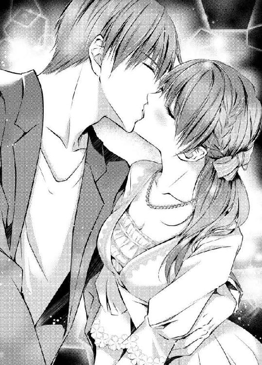
彼はそっと唇を離した。そして、詩帆を見つめながら、髪を撫でる。
「初めてかい？」
ドキドキしている詩帆が頷くと、彼はもう一度、唇を重ねた。唇を押し開くように強引に舌が入ってきて、歯列を割る。
彼の舌が......。
身体が火照りだす。
だって、彼の舌がわたしの舌に絡んできて......。
もう、どうしていいか判らない。何もかも初めてのことで、ただ詩帆は彼のすることに身を任せていた。
抵抗なんてできない。したくない。ただ、詩帆の望みは彼の傍にいることだった。
永遠にこのままでいたい。
だが、やがて彼は唇を離した。そして、詩帆の頬を撫でる。
「......ごめん」
「あ......謝ることはないわ......」
唇が熱く燃えている。まるで自分のものではないようだった。
彼はふっと微笑み、それから元の運転席に戻った。
「さあ、君を『おじ様』の許へ送り届けないと」
「そうね......」
彼は車を出した。
渋滞にでもなって、堀田邸に戻るまでの時間がもっとかかればいい。
そう願っていたのに、夜は車が空いているから、あっという間に門の前に着いてしまった。詩帆は仕方なくシートベルトを外した。
「あの......今日はどうもありがとうございました」
「急に他人行儀になったね」
「だって......」
彼はまた素早くキスをする。詩帆は両手で自分の熱くなった頬を押さえた。
「可愛いな。来週の約束、忘れないでくれ」
「ええ......。じゃあ、また。おやすみなさい」
「ああ、おやすみ」
詩帆は車から降りて、その車が走り去るのをずっと見ていた。溜息をつき、電動門扉の電子錠の解除をする。そして、とぼとぼと堀田邸の玄関に向かった。
携帯を見ると、もうずいぶん遅い時間だ。もっと早い時間かと思っていたのに。瑛司と話しているときは時間を忘れてしまうようだった。
まだわたし夢の中をふわふわと漂っているようだわ。
詩帆は玄関のドアを開けて、靴を脱いだ。
そのとき、ちょうど誰かが居間のほうから出てきた。詩帆は顔を上げ、明るく挨拶をしようとして、凍りついた。
佐紀が冷たい眼差しでこちらを睨んでいたからだ。
「初めてのデートで、ずいぶん浮かれているのね。彼が目をかけてくれて喜んでいるのかもしれないけど、どうせあなたなんか......」
「佐紀！ やめなさい！」
幹夫が階段から下りてきて、佐紀を止めた。
「だって......パパ！」
「おまえは美人だ。おまえには、いくらだっていい男が言い寄ってくるさ。そうだろう？」
佐紀はムッとしたように唇を噛み締めた。しかし、すぐに諦めたように頷く。
「そうね......。わたしにはもっといい男が似合いだわ」
それでも彼女は詩帆を鋭い目つきで睨みつけてから、階段を上っていった。詩帆はおろおろしながら、幹夫に尋ねた。
「わたし......いけなかったんでしょうか？ やっぱり佐紀さんは......」
「そんなことないよ」
幹夫はきっぱりと否定した。
「ただ、佐紀は君が白鳥のように綺麗に変身したから気に食わないんだろう。そりゃあ、少しは瑛司君に気があったかもしれないが、ただそれだけだ。別に二人の間には何もない。それに、彼は君が気に入ったんだから」
詩帆は顔を赤らめた。幹夫はそれを見て、柔らかい口調で話しかけてきた。
「デートは上手くいったようだな？」
「はい......」
「また会う約束をしたかい？」
「ら、来週の日曜......わたしの誕生日にまた会おうって。おじ様......わたし......」
「もちろん行ってもいいんだ。そもそも、家政婦の仕事なんて別にしなくてもいいんだから」
「いいえ。それはしなくちゃ......。おじ様にたくさんお世話になったのに、なんの恩返しもできてないのに」
幹夫は優しい顔で微笑んだ。
「私は君が幸せになってくれたら、それでいいんだ。......いいかい？ 恩返しとか、他のことは考えなくていい。君が今すぐ結婚したとしても、私は祝福するよ」
「おじ様......とてもとても優しいのね！」
詩帆は幹夫に抱きつきたい気分だったが、子供ではないので我慢する。
結婚なんて、今まで遠い未来の出来事だと思っていた。しかし、瑛司に出会い、彼を好きになった今では気持ちが変わってきた。
もちろん初めてのデートと結婚がいきなり結びつくわけではない。けれども、今日初めて、男性といつまでも一緒にいたいと考えた。
そして、この気持ちが二人同時に強くなったときに、恋人同士は結婚を決意するものだという気がしたのだ。
瑛司さんはまだ恋人とも言えないけど。
なんだかそんな未来がすぐ目の前にあるような......。
初めてのキスをしただけなのに。
でも、これがきっと恋というものなのよ。
詩帆はまだ夢見心地のままでいた。
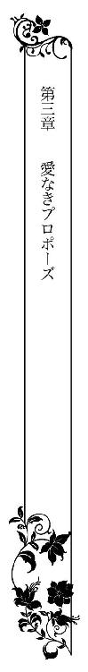
一週間が過ぎた。
今日は二度目のデートだ。この一週間、詩帆は翔子に呆れられてばかりいた。翔子には何もかも打ち明けたのだ。最初の出会いから、デートまで。キスのことは言わなかったのだが、彼女はすぐに判ったようだ。
『詩帆はすぐに顔に表れるから』
そんなに、わたしって判りやすいかしら。
今日は自分が持っている服の中で、お気に入りのオフショルダーのカットソーにチュールスカートを穿いている。オフショルダーといっても、それほど肩を出した着こなしはしていないから、セクシー路線というよりフェミニンな印象だ。
一昨日、瑛司から電話をもらった。
『この間のワンピースもよかったけど、カジュアルな服でいいよ。いつもの君が見たいな』
そんなふうに言われたのは嬉しかった。無理して背伸びをしなくていいと言われた気がしたからだ。
彼はわたしのことを判ってくれているって......。
幹夫はまた服を買ってくれようとしたのだが、断ってよかった。いくらなんでも、デートの度に服を買ってもらうわけにかいかない。
もっとも、いつもの詩帆といっても、ジーパン姿でデートに行く気はしない。だから、自分のワードローブの中で、一番好きな服にしたのだ。そして、靴もローヒールのものを選んだ。自分ではなかなか可愛いと思うのだが、瑛司はどんなふうに思うだろうか。
この間のように、瑛司は車を運転して、詩帆を迎えにきてくれた。インターホンが鳴ると、詩帆が対応した。彼の声を聞くだけで、胸が高鳴る。門扉の電子錠を解除して、詩帆は玄関へと走っていった。
車が停まり、彼が降りてくる。
彼は詩帆に微笑みかけた。
「誕生日おめでとう」
「ありがとう......」
正直なところ、詩帆は今日が自分の誕生日だということも忘れていた。今日は瑛司とデートする日。それしか頭になかった。
詩帆は完全に彼に夢中になっている。この一週間、彼に会いたくてたまらなかった。一日一日が過ぎるのが待ち遠しくて仕方なかった。
でも、きっと彼のほうはわたしと同じ気持ちではないはずよ。
彼の心の中まで見通すことはできないが、それでもなんとなく判る。やはり生まれ育った世界の違いを考えると、彼にとって自分はただ物珍しいだけの存在ではないかと思うのだ。
もちろんデートに誘い、キスしてくれたからには、ある程度の関心はあるのだろう。しかし、それがずっと続くと思ってはいけない。そんな期待をすれば、恐らく自分は胸の潰れるような思いを味わうことになるだろう。
もちろん、本当は彼もわたしと同じ気持ちでいてほしいけど......。
堀田邸に六年もいれば、現代日本の中にも身分みたいなものがあるのだと、もう判っている。使う側の人間と使われる側の人間がいて、庶民の詩帆はそれを受け入れて、諦めることを学んでいた。
そう。わたしがいくら心を尽くしても、堀田家の家族にはなれないように。
それは仕方のないことなのだ。
車に乗ると、彼はすぐに軽く唇を合わせてきた。挨拶のようなキスだが、詩帆はドキドキしてくる。
「いきなりごめん。君にキスしたいとずっと思っていたから」
詩帆は顔を赤らめ、そっと頷いた。詩帆自身もそう思っていた。会いたいだけでなく、キスもしてもらいたいと。
「いつまでも、こうしているわけにはいかないな。さあ......行こうか」
瑛司はエンジンをかけ、車をスタートさせた。
「今日はどこへ行くの？」
「しばらくドライブを楽しもう。二人きりで......」
二人きり......！
車の中にいれば、二人きりになれるということだ。だからといって、彼が運転しているときに、キスしてくることはあり得ないが。
それでも、胸が高鳴る。彼の傍にいるだけでも嬉しくてたまらない。
「わたし、ドライブも好き......。学生時代に一度だけ何人かの友人達と車で小旅行に出かけたの。すごく楽しかったわ」
「一度だけ？」
その一度だけで、詩帆の頭の中に『ドライブは楽しい』と刻み込まれていた。
「そうよ。修学旅行はドライブに入らないでしょ？」
「まあ、そうだね。でも、君はもっと遊んでもよかったんじゃないか？ 堀田さんは怒ったりしなかったと思うが」
「おじ様は優しいから......。だけど......」
「堀田さんの家族が快く思わなかったのかな？」
「......わたしは家族の一員ってわけじゃないもの。仕方ないわ。それに、わたしは好きで家政婦の真似事をしていたんだから。誰かに強制されたわけじゃないし、プロの家政婦に比べると、わたしなんて大した働きもできてなかったと思うの」
ほとんど自己満足じゃないかと思うときもある。少しは役に立っているという程度だ。
「わたしのことはいいから、あなたのことを聞かせて」
「僕のこと......？ 君は堀田さんから聞いているだろう？」
彼は何故か硬い表情になった。何かよくないことを尋ねただろうか。
「いいえ。あまり......。先週、あなたが話してくれたことだけしか知らないわ」
話してくれたのは、彼が神野ホールディングスの御曹司で、グループ会社の社長をしているそういえば、あのとき家族のことを訊こうとしたのだが、彼はなんだか答えたくないみたいに顔を強張らせていた。それからすぐに彼は話題を変えたのだった。気のせいかと思っていたが、そうではなかったのだ。
「一体、僕の何が知りたいんだ？」
「たとえば......好きな食べ物とか」
詩帆がそう言うと、彼は明らかに肩の力を抜いたようだった。
「好きな食べ物は......バナナかな」
「バナナ？ 可愛い！」
「可愛い？ 何が可愛いんだ？」
「大人の男性の好きな食べ物がバナナだなんて......」
詩帆はおかしくて仕方なかった。彼もつられたように笑う。
「君がわざわざ尋ねるのがよくないんだ。ちなみに、嫌いな食べ物は納豆だ。君は？」
「わたしが好きなのはプリン。嫌いなものは......あまりないわ。だいたい食べられるし。というか、わたしは好きな料理を訊いたつもりだったの」
「ああ、好きな料理ね！ 改めて訊かれると、よく判らないな。君と同じで、だいたいのものは食べられる」
「強いて言うなら？ ひとつだけ好きなものを選んで」
「そうだな......。君に笑われるかもしれないけど、カレーライス......」
詩帆は思わず笑ってしまった。
「ごめんなさいっ。笑うつもりじゃなかったんだけど、なんだか可愛く思えてきて」
「可愛いというより、子供っぽいの間違いだろう？」
そうとも言えるかもしれないが、高級なレストランや料亭に行ったり、おいしい料理を食べてきたに違いない大企業の御曹司がごく庶民的な料理が好きだというギャップが、詩帆を可愛くてたまらない気分にさせていた。
「僕の家も料理はいつも家政婦が作っていたから、古くからいる家政婦が作るカレーライスが好きだった」
そう言われると、急にしんみりした気持ちになってくる。彼にとっては、それが『おふくろの味』なのだろう。母親でなく、家政婦なのが物悲しい。いや、彼自身はそんなふうには思っていないかもしれないが、詩帆にとってはそれが可哀想に見えてくる。
でも、料理が下手なお母さんだっているだろうし......。
詩帆は堀田邸に来ていた彼の母親のことを思い出した。とても綺麗で社交的な人だったが、少し冷たいように感じた。
「君は料理が得意？」
「もちろんよ！ うちの料理は矢代さんがメインだけど、わたしが作るときもあるわ。その......カレーも得意よ」
瑛司の顔にはさっと笑みが広がった。
「じゃあ、機会があったら作ってもらおうかな」
「ええ。いくらだって作るわ」
そう答えた後、詩帆は急に恥ずかしくなってくる。彼に手料理を振る舞う機会というのは、彼と二人きりになったときだろう。堀田邸でなく、恐らく彼の住むところだ。彼がどんなところに住んでいるのかも、詩帆はまだ知らなかったが。
ああ、知りたいことはたくさんあるわ！
詩帆は彼を質問攻めにしてはいけないと思いつつも、彼のどんなことでも知りたかった。
彼がどれだけの間、詩帆をデートに誘ってくれるかは判らない。彼とは年齢の差以上に違うものがあると感じていたし、そんな彼が詩帆を退屈に思うようになっても当たり前だとも思っていた。
だから、一緒にいられる時間だけ、彼を独占したい......。
詩帆は運転席に座る瑛司の横顔をそっと眺めた。
ドライブの行き先は海辺だった。
詩帆が生まれ育った田舎とはまた違うが、白い砂浜が広がり、懐かしい潮の香りが漂っている。もちろん波が打ち寄せる音が聞こえてきた。
彼はわたしの話をちゃんと覚えていてくれたんだわ！
もちろん彼みたいな頭のいい人は、一週間前の会話くらい覚えているだろう。しかし、詩帆は『自分の話』を覚えていてくれて、デートのコースに組み入れてくれたことが嬉しかった。
二人は手を繋いで、砂浜を歩き始めた。
残念なことに二人きりというわけにはいかない。海水浴のシーズンではないにしろ、今日は天気もいいから、サーファーや波打ち際で遊ぶ家族連れ、犬を連れて散歩を楽しんでいる人もいる。もちろん自分達みたいなカップルもいた。
わたし達をカップルと呼んでいいのかどうか判らないけれど。
遠くに富士山が見える。詩帆はキラキラ光る海面を眺めていた。
「海は......大好きよ」
髪が風に乱されるのも構わず、詩帆は彼のほうに顔を向け、微笑んだ。彼は優しげな眼差しで詩帆を見つめ返す。
「この間のレストランでは、君はすごく緊張しているようだった。海辺なら、もっとリラックスできるかもしれないと思ったんだ」
だから、彼はカジュアルな服でと言ってくれたのだ。彼自身も今日はジーパンを穿いて、白い綿ジャケットを羽織っていて、とても格好いい。
わたしもヒールの高いパンプスなんて履いてこなくてよかったわ！
「わたし、ああいうレストランは初めてだったの......」
「どのフォークやナイフを使うか知っていたじゃないか」
「だって、わたしはフォークやナイフを並べるのに慣れているもの。もちろん知っているし、マナーの講習会くらい出たことあるから」
彼は手をそっと離した。
詩帆はずっと手を繋いでいたかったからガックリしたが、肩に手を回されて、ドキッとする。手を繋ぐよりずっと身体がくっついている。
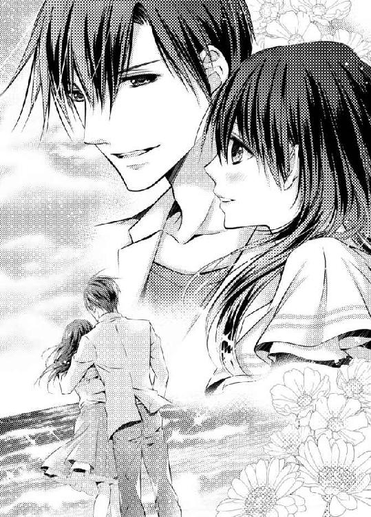
頬が熱くなり、思わずうつむいた。
「君は本当にうぶなんだな......」
「ごめんなさい」
「いや、悪いわけじゃないさ。ただ、ちょっと驚いただけだ。世間一般の若い女性とはあまりに違う」
それが彼にとって新鮮なのだろうと思う。だとしたら、やはりそのうちに彼は詩帆に飽きてしまうに違いない。
でも、それは責められないわ。
佐紀のような美人ならともかく、やはり詩帆は平凡だからだ。セクシーなところだってない。可愛いだけでは人形と同じだ。
「瑛司さんはたくさんの女性とお付き合いしてきたんでしょう？ わたしなんか退屈よね？」
「そんなにたくさんではなかったよ。もちろん......この年齢だから、それなりの付き合いはあったさ。だが、僕には遊ぶよりもっと大事なことがあった。僕は金のスプーンをくわえて生まれてきただけの無能な奴と言われたくなかった。コネではなく、実力で自分を評価してもらいたいと、それだけを考えて生きてきたんだ」
詩帆はじんと胸の中が熱くなってきた。
彼が会社で頑張っていることは前にも聞いた。しかし、今の言葉はそれより一段階踏み込んだことだった。
彼が今語ったことは、きっと本音なのだ。大企業の御曹司という立場は、何も努力しなくても地位も名誉もお金も手に入るから、誰しも羨ましがるものだろう。しかし、瑛司はそういう楽な方法を採りたくなかった。逆に、周囲からそう思われることこそが屈辱だと感じていたのだ。
これほどプライドが高いのだから、きっと彼はこんなことを他人には言わないはずだ。よほど、気を許した相手でなければ......。
詩帆は彼が胸の内を明かしてくれたことが嬉しかった。
彼の胸に秘められたものを......。
どうして、わたしなんかにって思うけれど。
「わたしも会社で堀田家に居候していると知られて、コネ入社だって言われ続けているわ。だから、そんなふうに思われたくない気持ちは判るわ。もっとも、わたしの場合はただの雑用係だし、一生懸命仕事をしていても、瑛司さんとはまったく違うけど......」
比べるのも愚かだ。彼はもっと努力していただろうし、今はグループ会社の社長だ。
「君は家でも働いているし、努力家なのは判る。君は......居候というが、別に家政婦の仕事までしなくてもいいんじゃないか？」
「確かにおじ様はそう言ってくださったわ。でも......気が済まなくて。何もかも世話になっていてはいけないと思うの。借りがあるって言ったら、おじ様の厚意に失礼かもしれないけど」
けれども、実際、借りがあるようにしか思えない。それをどうやって返したらいいか判らないが。
そう思うと、瑛司にデートに誘われて、せっかくの日曜にこうしてふらふらと出かけて、夜遅くまで帰らないなんて、恩知らずのように思える。
ふと、詩帆は佐紀の剣幕を思い出した。だが、一方で、幹夫は瑛司とデートに行くことを勧めてくれる。
わたしはいつもおじ様の厚意に甘えてばかりいるわ。
幹夫に借りを返したい。けれども、瑛司とデートもしたい。
この一週間、瑛司に会いたくてたまらなかった。彼への気持ちは日々大きくふくらんでいく。もし、もう会えなくなったら、悲しみのどん底に落ちるだろう。それが判っていて、デートより家事を優先してもいいのだろうか。
でも、わたし、このままでいいのかしら。
詩帆の気持ちは揺れ動いた。
「借りか......。君は真面目なのか、それとも......」
それとも？ なんだと言いたいの？
しかし、肩に回された手が離れていくのに気を取られて、自分が言いたかったことを忘れてしまった。
彼は立ち止まり、海のほうを向く。
海を見ると、故郷を思い出す。懐かしい思いが甦るが、次に感じるのは喪失感だった。こんなに海が好きで、懐かしいのに、もう二度とあの頃には戻れない。
両親を亡くし、あの家も借家だったから、今は他の誰かが住んでいる。友人と別れ、幹夫についてきてからは、一人でも生きていかねばならないのだと自分を戒めた。幹夫は優しくしてくれたが、他人なのだから決して頼ってはいけない、と。
淋しさなんて、今更感じないと思っていたのに......。
彼が振り返った。眼差しがとても温かくなったように見える。
詩帆ははっとした。
彼がわたしの気持ちを丸ごと判ってくれたような気がして......。
そんなはずはないわ。海を見て、自分が独りぼっちで都会にいることを意識させられたなんて、彼に判るはずがない。
でも......。
勘違いでもいい。彼も苦しい思いをしてきたのだ。生まれや育ちが裕福であっても、彼にはどこか陰がある。
だから、他人の目に映る自分自身が嫌で、努力を重ねたのではないだろうか。
見つめ合っていると、ふと二人の気持ちが通じ合ったような気がした。
理由は判らないけれども......。
わたし、今このときをずっと忘れない。
彼は詩帆の手を取ると、その指先にそっと唇を押しつけた。
海が見えるレストランで食事をした後、帰りのドライブを楽しんだ。
そのまま彼は堀田邸に送ってくれるのだと思っていたのに、どうも違う場所に向かっているようだった。
「これからどこへ行くの？」
瑛司は詩帆のほうをちらりと見ると、微笑んだ。
「僕が住んでいるところだ」
「瑛司さんが？」
そういえば、彼がどこに住んでいるのかも知らない。
「ご家族と一緒に住んでらっしゃるの？」
「まさか......。僕はマンションに一人で暮らしているよ」
ということは、彼の一人暮らしのマンションに向かっているのだ。当然のことながら、そこには誰もいない。
そう思うと、詩帆は胸が高鳴った。
今も車内で二人きりだが、彼の部屋で二人きりになるのとはわけが違う。けれども、彼は詩帆ほどそのことを意識していないのかもしれない。
だって、わたしと違って、彼は大人だもの。
詩帆も成人はしているが、こういった男女のことには未経験で、子供と変わらないと思う。男性の部屋でどういう振る舞いをしていいかも判らなかった。
「......嫌かな？」
瑛司に尋ねられて、詩帆は慌てて首を振る。
「行きたいわ！」
妙に大きな声で宣言してしまい、今度は赤くなってうつむく。彼にはクスクス笑われた。
「そんなに行きたがってくれるなんて嬉しいよ」
「だって、興味があるから......」
家にいるときの彼はどんなふうなのだろう。いつも素敵な彼だが、家にいるときくらい気を抜いているのではないだろうか。
それに、部屋を見れば、彼のことがもっと判るかもしれない。彼は綺麗好きなのだろうか。それとも、部屋は散らかすほうなのか。自炊はするのか。外食ばかりなのか。それとも、家政婦を雇っているのか。
きっと家事をしてくれる人はいるわよね。そんなこと、当たり前よ。
詩帆は彼のことがもっともっと知りたかった。
やがて車はタワーマンションの地下駐車場へと入っていく。彼みたいな裕福な男性なら当たり前の住まいかもしれないが、詩帆の頭はくらくらした。周囲に駐車している車はずいぶん派手なものも多い。
ひょっとして......外車？ スポーツカー？
車には詳しくないので判らないが、その類のものみたいだ。瑛司の車もきっと高価なものなのだろう。詩帆が気づかなかっただけで、右ハンドルの外車かもしれない。
とはいえ、周りの車に比べると、瑛司の車は地味だ。彼はあまり車にこだわったりしないタイプのようだ。
エレベーターに乗ると、彼はボタンを押した。最上階ではないが、かなり上のほうだ。エレベーターが止まり、扉が開いたところで、詩帆は目を丸くした。
まるでホテルみたい......。
廊下が建物の外側でなく、内側にあり、床に絨毯が敷きつめてあるのだ。彼はカードキーで扉を開け、詩帆のほうを見た。
「どうぞ入って」
「あ......あの、お邪魔します」
玄関の三和土は大理石のようだ。いや、それくらいは堀田家で見慣れているはずだが、詩帆は妙に緊張してきた。
廊下の突き当たりにすりガラスの扉があり、そこを開くと、リビングが広がっている。大きな窓からは、夜になればきっと綺麗な夜景が見えることだろう。
詩帆はぽかんとして、そこに立ち尽くして部屋の広さに驚いていた。
家具があまりないから余計に広く感じるのだろうか。Ｌ字型のソファとテーブル、それから大きな画面のテレビがある。バーカウンターがあり、その後ろのガラス棚に洋酒の瓶やグラスがたくさん並べてあるから、まだなんとか救われているが、それがなければモデルルームかと思ってしまうくらいだ。
こんなところで一人で暮らしていて、淋しくないのかしら。
堀田家はよくも悪くも家族が住んでいる家だから、物も多いし、生活感がある。ところが、瑛司の部屋には生活感があまり感じられなかった。
ダイニングテーブルもあるが、本当にそこで食事をしているのか判らない。ここでカレーライスを食べている瑛司など想像できなかった。
「立ってないで座るといい。何か飲むかい？ コーヒーとか？」
「ええ......お願い」
詩帆がソファに腰を下ろすと、彼は上着を脱いで、ダイニングテーブルの椅子の背にそれをかけ、詩帆の視界から消えた。あの奥のほうにキッチンがあるのだろう。何か作業する音が聞こえてくるから、コーヒーを淹れる作業をしているのだ。
よかった。ここからは見えないけど、ちゃんと生活感のある場所は存在するらしい。
彼はコーヒーメーカーをセットしてから、こちらに戻ってきて、詩帆の隣に座った。
「綺麗なお部屋ね......。ビックリしたわ」
「インテリアはプロに頼んだんだが、何か失敗しているような気もするんだ。よそよそしい感じがするだろう？」
「そうね......。モダンでスタイリッシュなお部屋だけど......」
恐らくそんなふうにしてほしいと頼んだから、こういう部屋になったのだと思う。
「普通はもっと物があるものよね。何か飾ったりとか......。ご家族の写真をどこかに飾るとかどうかしら」
詩帆の提案に、彼は顔をしかめた。
「家族だって？ せっかく一人で暮らしているのに、家族のことなんか思い出したくないよ」
「えっ、ご家族と仲が悪いの？ でも、ご両親と一緒に食事にきたのに......」
「あれは仕方なく付き合わされただけだ。だが、仲が悪いというわけじゃないよ。ただ親しくないだけだ」
それは仲が悪いということではないだろうか。詩帆は首をかしげた。
「ご兄弟は？」
「妹がいる。......君は聞いてないのか？」
「えっ、妹さんがいるなんて初めて聞いたと思うけど」
「そうか......」
彼はそれだけしか言わないので、妹がどんな人なのか聞き出せなかっただからといって、次々に質問をするのもはばかられる。彼はやはり家族の話をしたくないみたいなのだ。
「でも、物がなければ掃除は楽だわ」
「そうだね。とても楽だよ」
詩帆は驚いて彼の顔を見た。
「あなたが自分で掃除をしているの？」
「そんなに驚くことかな？」
「だって......」
当然、家事をしてくれる人がいるものだと思っていた。裕福な人達は家事を人任せにするものだ、と。
「僕は自立したくて一人暮らしをしているんだ。誰かに家事をしてもらっていたら、それは自立とは言えない」
ああ、そうなのね。
彼は御曹司という立場の自分が嫌なのだ。そういった色眼鏡で見られることも嫌だが、それ以上に自分という人間を確立したいという気持ちが強いのだろう。
ますます彼のことが好きになってしまい、詩帆は困ってしまった。彼に飽きられたら、好きになった分だけ悲しくなるに違いない。
彼みたいな男性とはもう巡り合えないだろうし。
「じゃあ、料理も作るの？」
「それは......まあ、たまに。外食が多いよ」
詩帆はにっこり笑った。
「あなたにも苦手なことがあるんだわ！」
「そりゃあ、あるさ。僕は自立したいとは思っているけど、別に完璧な人間を目指しているわけじゃないから」
彼は席を立って、コーヒーを持ってきてくれた。
「ありがとう」
「悪いけどミルクはないんだ。砂糖はあるよ」
彼はスティックシュガーを添えていてくれた。詩帆がコーヒーに砂糖とミルクを入れるのを、ちゃんと見ていたのだろう。彼自身はブラックで飲むから、このスティックシュガーは客用なのだ。
「殺風景な部屋で、おまけにミルクもない。せめてミルクくらいは買っておけばよかったかな」
「そんな......。ミルクがなくてもいいわ。それに......この部屋は景色がいいじゃないの。夜景なんか綺麗でしょう？」
「そうだね。自慢できるのは夜景くらいだ」
「この広さも自慢できるわ。それから、そのバーカウンターも。お酒が好きなの？」
「カウンターそのものは客が来たときにいいかなと思って作っただけだ。酒は......夜にゆっくり一人で飲むほうが好きだ。間接照明だけつけて夜景を見ながら......」
「それ、最高よ！ あなたがこの広い部屋で、一人でどうしているのかしらと気になったけど、心配する必要なかったのよね」
彼ははっとしたようにこちらを見た。
「心配だって？ 一体、何を......？」
「こんな広い部屋に独りぼっちでいたら、誰だって淋しくなるわ」
「君は......僕が淋しがっていると......？」
彼はひどく驚いている。ひょっとしたら、彼はまったく淋しさとは無縁の強い人なのかもしれない。そう思うと、詩帆は自分が勘違いしていたことに気づき、頬が赤くなる。
「ごめんなさいっ。大人の男の人は淋しさなんて感じないのかしら。わたしったら、あなたのために食事を作ってあげたいなんて思ったりして......馬鹿みたい」
詩帆は恥ずかしさのあまり、コーヒーに口をつけたものの、まだ熱くて舌を火傷してしまった。猫舌だから熱いものは飲めないのだ。
「見せてごらん」
彼は顔をしかけている詩帆の肩を抱いて、自分のほうに向かせる。そして、顎に手をかけた。
とても優しい眼差しで、彼の瞳をぼんやり見つめてしまう。
「み、見せてって......？」
「舌だよ。火傷しているかもしれない」
ここで舌を出すなんて、馬鹿げている。子供ではないのだから。
詩帆は口を引き結んで、顔を横に振った。彼はその仕草を見て、ふっと笑った。
顔を近づけられ、ドキッとする。
またキスをされるの......？
うっとりしながら目を閉じると、唇が重なっただけでなく舐められた。
え......？
思わず口を開けると、するりとその舌が滑り込んできた。
彼の柔らかい舌が詩帆の舌を癒やすように動いていく。まるで撫でられているようだ。詩帆の頭はじんと痺れてきて、何も考えられなくなってくる。
彼にキスされると、夢の世界に入っていくような気持ちになっていく。
これは現実のことなのに......。
今まで知らなかった世界に、彼が誘っている。詩帆はおずおずと自分から舌を絡め始める。そうすることで、受け身なだけではなく、彼のキスに応える意志があることを伝えた。
あなたのことが好き......。
詩帆はキスでそれを伝える。
本当に伝わっているかどうか判らないけれど。
好きでなければ、こんなことはしない。彼のマンションで二人きりになったりしない。
詩帆は彼にキスされて嬉しかった。キスは彼の関心の表れと思っていいはずだ。興味もない女性にこんなキスをするはずないからだ。
彼は一度、唇を離したものの、詩帆の目を見つめると、またキスをしてきた。いつしか詩帆は彼の背中に手を回していた。
だって、もう離れたくないくらい好きになってしまったんだもの......。
この先のことは考えられない。ただ、今は彼の腕に抱かれて、キスをされていたい。詩帆の望みはそれだけだった。
気がつくと、彼は唇を離していて、顔のあちこちに唇をそっと押しつけ、キスをしていた。瞼や眉、額から頬を通り、顎にかけて、余すところなく口づけられる。
まるで、わたしのことをとても大切に思っているみたいに......。
詩帆は不思議な気持ちになってきた。
胸はドキドキしているし、頭の中はふわふわしている。二人きりの場所で好きな人にキスされて、興奮しているが、それ以上に愛されている気がして、胸の奥から喜びが込み上げてくる。
本当のことを言えば、彼の気持ちは判らない。
でも......。
瑛司は真面目な男性だ。戯れでこんなことをする人じゃない。こんな優しいキスをするとしたら、きっと相手のことを愛しているからだとしか思えなかった。
わたし......愛されているの？
判らない。恋愛経験もないから、彼の気持ちを想像しているだけだ。
しかし、詩帆にはたったひとつ判ることがあった。自分の気持ちのことだ。
わたしは彼を愛してる......。
そうでなければ、こんな喜びを感じることはないだろう。
詩帆は彼の背中に回していた手をそっと動かす。彼を愛しく思う気持ちが詩帆を突き動かし、自然とその背中を撫でていたのだ。
「ああ......詩帆......」
彼の唇が自分の名前を囁く。
それだけで詩帆の気持ちは更に高まった。
「瑛司さん......」
小さくそう呟くと、彼は再び唇を奪った。
何がきっかけだったのかの、もうよく判らない。だが、詩帆の身体をいろんな欲求が貫いていく。
ずっと抱き合っていたい。ずっとキスしていたい。
そして、もっと......。
彼のものになりたい。
キスに夢中になっている間に、いつしか詩帆はソファに押し倒されていた。彼の手によって身体をまさぐられている。しかし、それがちっとも嫌ではなかった。
それどころか、もっと触れてもらいたくて......。
カットソーの裾から彼の手が潜り込んでくる。肌に直に触れられて、ビクッとした。けれども、もちろん嫌なわけではなかった。
ただ、初めてだから......。
ブラジャー越しに胸のふくらみを包まれると、甘い吐息を洩らしてしまった。ゆっくりと撫でられ、彼の手の温もりを肌に感じる。そして、心地よさと興奮を同時に感じていた。自分の大事な部分を、彼に委ねているという気がする。
やがて彼の手はブラの中にまで入り込んできた。
「やぁ......ん......」
甘い疼きが湧き起こる。
ふくらみだけでなく、乳首を指で弄られると、ビクンと身体が揺れた。触られて恥ずかしいけれど、もっと触れてほしいとも思う。
もちろん、それは相手が瑛司だからだ。愛する人に触れられることは嬉しい。彼も自分に関心があるということだからだ。
だから、もっと触れてほしいと思うの......。
彼にだけ許すことなのだから。
乳首を指先でくるくると回すように撫でられて、身体の芯に火がついたようになる。
弄られている部分だけでなく、不思議と違うところが疼き出す。両脚の間が熱く痺れてくるのを感じた。
ああ、わたしの身体......。
どうなってしまっているの？
判っているのは、ただ彼にもっと愛撫されたいということだけだ。
身体が震え、腰が揺れる。
「あ......あん......ぁ......」
甘えるような甲高い声が自分の口から飛び出してくる。黙っていようと思うのだが、どうしても声が我慢できない。
瑛司は詩帆の胸に触れていた手をそのまま後ろに回していく。背中を浮かせたところで、ブラのホックを外された。
彼はカットソーの裾を掴み、ブラごと上にまくり上げた。
裸の胸が彼の目の前に晒されている。
詩帆は息を呑んだ。
彼はじっとそこを見つめて、囁いた。
「とても綺麗だ......」
「き、綺麗？」
「丸くて形がいい。色もピンクで......」
詩帆の頬はカッと熱くなってきた。
自分の胸の形なんて、まじまじと見たことはない。けれども、彼の目にはそんなふうに映っているのだ。そして、気に入ってもらっているようだ。
詩帆はじわじわと喜びが込み上げてきた。
「キスしていいかい？」
「え......」
彼は問いかけておきながら、返事も待たずに胸のふくらみに唇を寄せていた。
「あ......ん......」
彼のキスはいつも優しい。特に、唇以外にキスされるときは。自分が大事にされているような気がして、嬉しかった。
唇がふくらみをなぞっていく。そのピンク色の頂を口に含まれて、詩帆はドキッとした。そこはとても敏感だ。指で弄られるだけでも感じていたから、キスされたら尚更だ。
さっき指先で撫でられたときと同じみたいに、今度は舌がその部分を舐めている。そして、もう片方の乳房は手で愛撫されていた。
「はぁ...ぁ......あっ......」
どうしよう。こんなに感じてしまって......。
詩帆は身体をくねらせた。身体全体が熱く燃えているようだった。彼の前でこんなに悶えていることも、もう恥ずかしいとは思わなかった。
頭の中が痺れたようになっていて、快感を貪ることしか考えられない。
わたし、一体どうしてしまったの？
今までこんな状態になったことは一度もない。初めての経験だった。しかし、実際、男性にこんなことをされるのも初めてだから無理もないかもしれない。
ああ、でも、これは瑛司さんだから......。
誰にでもこんなふうに感じるわけじゃないわ。
それ以前に、詩帆は無闇に男性と二人きりになることはない。瑛司だから、すべての警戒心を取り去っていたのだ。
彼は詩帆の太腿に触れてきた。スカートがすっかりずり上がってしまっている。彼はそのスカートの裾から手を入れ、下着に包まれた腰を撫でた。
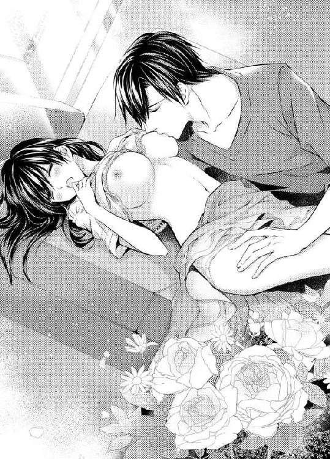
詩帆ははっとした。
彼は胸だけでなく、別のところにも触れようとしている......。
しかし、やはり警戒する気持ちは出てこない。それどころか、詩帆はどこか期待していた。彼に一番大事な部分に触れられることを。
だって......。
愛しているなら、それは自然なことなんじゃないのかしら。
彼は詩帆の脚の間にすっと手を差し込んできた。
「あぁ......っ......」
ストッキングをずらされ、下着の上から秘部を撫でられると、ゾクリとする。身体が震えるが、もちろん寒いわけではなかった。
「脚の力を抜いて......」
彼に囁かれて、詩帆はその言葉に従った。といっても、緊張していて、完全には力が抜けなかったが。
彼の指は下着の脇からするりと入ってきた。
「やぁ......あん......」
秘部に直に触れられている。詩帆はその部分からとろりと何かが溢れ出てきたことに気がつき、全身が熱くなる。
「わ、わたし......」
「こんなに濡れているよ」
彼は秘裂に沿って指を動かした。その部分がぬるりとしているのが自分でも判る。
「いやぁ......っ」
「嫌なら、こんなふうにはならない。感じているんだろう？」
彼は指を動かした。敏感な部分に当たって、詩帆はビクンと身体を震わせた。
「わたし......こんな......初めてで......」
「よく判らないんだ？ そうか......」
彼は指を下着の中から引き抜いた。詩帆はほっとするのと同時に、どこかで落胆する気持ちもあった。
愛する彼に自分の一番大事な部分に触れてほしいから......。
それに、こんな快感を初めて味わったからだ。
もうこれで終わりなの......？
そんなふうに思ったとき、彼は詩帆のストッキングと下着を下ろしていった。
しかし、詩帆は抵抗しなかった。ただドキドキしながら、下着が脚から引き抜かれていくのをじっと見ていた。
わたし......服を着ているのに、大事なところだけ晒しているんだわ。
改めて自分の姿を見て、カッと頬が熱くなる。慌ててスカートで隠そうとしたが、彼に遮られる。
「やめ......て......」
彼は詩帆の手を取り、指先にキスをした。
「あ......ぁ......」
まるで魔法にかけられたみたいに、詩帆は抵抗できなくなった。
身体が痺れてしまう。
彼の眼差しがとても真剣で、詩帆をただ弄んでいるようには見えない。詩帆は胸がいっぱいになって、何も言えなくなる。目が潤んでくるが、それは悲しいわけではなく、見つめられるだけで身体が熱くなってきたからだ。
わたしはもう......彼のものだわ。
瑛司は詩帆の両脚を開いた。恥ずかしい格好をしていると判っているのに、詩帆の身体はじんと痺れていた。
彼はその両脚の間に顔を埋めてくる。
そんなところにもキスをするの？
詩帆は息を呑んだ。
秘部に舌を這わされ、腰が快感に震える。自分がもうどんな状態にあるのかも、よく判らない。ただ彼に任せていればいい。詩帆ができるのはそれだけだった。
彼にすべてを預ける。詩帆はその考えにうっとりしていた。
彼が舐めている部分が次第に蕩けていく。
「あん......あぁん......んっ」
もう声を我慢できなかった。
いくら唇を引き結んでも、やはり声が出てきてしまう。それと同時に、身体がガクガク震えている。
やがて彼は秘裂に指を差し込んでいった。
詩帆はギュッと目を閉じた。
わたしの中に彼の指が......。
それでも、詩帆はすべてを許していた。彼はしたいようにしていい。詩帆は流されるままだった。
同時に、敏感な部分を舐められて......。
指が何度も自分の中を行き来している。快感が身体の芯から上へと這い上がっていくような気がした。
「もう......もうダメ......！」
何がダメなのか、自分でもよく判らない。何か熱いものが身体の中でふくらんでいるような気がするのに、もう止められなかった。
「あぁぁぁっ......！」
詩帆は身体を強張らせた。
激しい快感がぐっと突き上げてくる。
それは一瞬のことだった。詩帆はわけが判らず、目を開けて、天井を見つめた。
今のは......なんだったの？
瑛司は顔を上げ、そっと指を引き抜いた。詩帆はボンヤリしていたが、急に恥ずかしくなってくる。彼の前で我を忘れて、快感を貪ってしまったからだ。
彼はわたしのことを軽蔑しているかしら。
表情を探ってみたが、よく判らない。彼は詩帆のスカートもそっと下ろしていく。そして、背中に手を回して身体を起こすと、カットソーもブラも取り去った。
生まれたままの姿を彼の目に晒している。
ドキドキするのに、詩帆は身動きもできなかった。身体の中に嵐が巻き起こっている。それ鎮めることができるのは、瑛司しかいないような気がした。
彼は無言のまま詩帆を抱き上げた。
「あ......っ」
「僕に掴まって」
詩帆は言われたとおりにした。彼は詩帆を抱いたまま、別の部屋へと運んでいく。
ベッドルームだわ......。
ダブルベッドがあり、詩帆はそこにそっと下ろされた。彼は横たわる詩帆を抱きすくめ、キスをしようとして、躊躇った。
詩帆の顎をそっと撫でる。
「......ごめん。僕はまるで野獣みたいだ」
詩帆は彼を見つめた。
「瑛司さん......」
「もう引き返すべきだと判っている。でも、僕の本能は突き進めと告げているんだ」
つまり、彼は迷っているのだ。
詩帆だって、この先に何が待っているか知らないわけではない。もちろん詩帆は初めてだし、怖い気持ちもある。
だけど、まだやめてほしくなかった。
わたしはあなたにすべてを捧げるつもりなんだから......。
二度目のデートなのに、まだ早いという気持ちもある。けれども、彼と同じように、詩帆の本能も前に進めと命令していた。
しかし、彼がギリギリのところで踏み留まろうと努力してくれているのは嬉しかった。詩帆がただの遊び相手ではないという証だ。彼が自分との関係を真剣に考えてくれているからこその迷いだと思うからだ。
詩帆は彼のシャツをそっと引っ張った。
「あ、あなたも......お願い」
脱いでほしいというふうに上目使いでねだってみると、彼の表情が柔らかくなった。そして、詩帆の目の前で微笑む。
その表情を見たとき、詩帆の全身は熱くなった。
彼は詩帆に軽くキスして、身を起こした。そして、身につけていたものを次々と脱いでいく。服を着ていたときには判らなかったが、彼の身体には適度な筋肉がついていて、美しい獣のように見えた。
ボクサーパンツが取り去られたとき、詩帆はどこに視線を向けていいか判らなかった。
彼はナイトテーブルから小さな平たい箱を取り出した。その中から避妊具を出して、己のものに装着する。
「詩帆......」
彼は詩帆に覆いかぶさり、髪をそっと撫でながら、またキスをしてきた。
たちまち詩帆はキスに夢中に担って、彼にしがみつく。すると、二人の肌が触れ合い、互いの温もりが伝わった。
二人の間にはなんの隔たりもない。
詩帆は感動して、涙が出そうになった。こんなにも誰かに自分を晒したことはなかったからだ。
両脚を広げられると、彼のものが秘部に当たる。
詩帆はさっと緊張した。これからされることが判るからだ。きっと痛いのだろう。
「力を抜いて......。優しくするから......」
彼の囁きに、詩帆はなんとか力を抜いた。彼のものが内部に入ってきて、詩帆はギュッと目を閉じた。
焼けつくような痛みが走る。
でも、我慢するわ。彼のものになりたいんだもの。
詩帆はただ一心にそう思った。彼のものが奥まで到達した瞬間、ほっと息を吐いた。これで二人はひとつになった。そう思うと、喜びが込み上げてくる。
彼も息を吐くと、詩帆の身体を抱き締めた。
「痛い......？」
「もう痛くないわ。本当よ」
詩帆は彼の背中に手を回した。さっき抱き締められたときよりも、喜びが深い。完全に身体を重ねられた満足感がある。
ああ......愛してる。
言葉に出さなくても、彼はもう判っているわよね？
愛していなければ、こんなことはしないのだから。
彼もきっとそう......。
二人は身も心もひとつになったのよ。
瑛司はそっと腰を動かした。
「あ......」
彼が動くと、自分の中にあるものも一緒に動いていく。そんな不思議な感覚に、詩帆は目を瞠った。
最初は判らなかったが、自分の中が彼のもので擦られていく感じがして、徐々にそれが快感に繋がっていくのに気がついた。
「やだ......ぁ......ぁんっ......あん」
快感が次第にふくらんでくる。
詩帆は彼にしがみついた。いつしか両脚を彼の腰に巻きつけていて、自分から快感を貪っているようにも思えた。
わたし、なんて淫らなの......！
さっきから甘ったるい声が口から飛び出している。
「あぁ......もう......もうっ......」
詩帆は自分がこんなに感じていることが信じられなかった。さっきまで痛かったはずなのに、どこで快感とすり替わってしまったのだろう。
また快感が身体の芯からせり上がってくる。何故だか彼もまた同じ状態なのが判る。詩帆の身体を強く抱き、ぐっと奥まで腰を押しつける。
詩帆はギュッと目を閉じ、身体を強張らせて絶頂に上りつめていく。
「あぁぁっ......ぁぁんっ！」
きつく抱き合ったまま、動けなかった。
二人の鼓動が溶け合っているような気がする。詩帆は彼が愛しくてたまらなかった。
とうとう、わたしは彼のものになったんだわ。
詩帆は温もりに包まれて、ただ幸せだった。
やがて二人は離れた。
すると、今まで二人の間にあったものが消えていくような気がして、詩帆は物悲しい気持ちになった。
詩帆は愛されていると思っていたが、急に不安になってくる。彼は愛しているとは言わなかった。
でも、小説や映画みたいに、愛していると言葉に出すとは限らないんじゃない？
そうよ。わたしだって、なんだか恥ずかしくて言えないもの。彼もきっと同じなんだわ。
彼は後始末をすると、下着を穿いた。詩帆ははっとして身を起こす。
「わたしの服......」
「大丈夫。持ってきてあげるから」
彼はボクサーパンツだけの姿で、ベッドルームを出ていった。彼の後ろ姿を見て、詩帆はほうっと息を吐く。
やはり彼は素敵だ。顔もいいが、身体つきも完璧だ。あんな素晴らしい男性に抱かれたことに、詩帆は嬉しさを感じる。
彼はすぐに詩帆の服を抱えてきた。
「あ、ありがとう......」
それを受け取ると、彼は微笑んで、詩帆の頬にキスをした。
「名残惜しいけど、服を着て」
「ええ......」
詩帆が頬を染めて服を着ている間、彼も手早く身支度をする。さっきは夢中だったから裸でも平気だったが、今はやはり恥ずかしい。彼は例の箱をナイトテーブルの中に入れるのと同時に、何か小さな物を取り出しているようだった。
「コーヒーは冷めてしまっただろうけど、向こうへ行こう」
彼は詩帆の手を握り、リビングへと戻った。
いつの間にか日が暮れている。彼は詩帆の服を取りにいったときに間接照明をつけていた。大きな窓の外には夜景が広がっていて、詩帆はそれに釘付けになる。
「綺麗ね......」
「君もね」
彼は詩帆の肩を左腕で抱いてソファに腰かけ、右手に持っていた物を差し出した。小さな箱にリボンがかけてある。
「誕生日のプレゼント？ どうもありがとう！」
詩帆はそれを受け取った。
「開けてもいい？」
「もちろん」
リボンを解き、箱を開けると、その中にビロード張りの小さな箱が出てくる。これはアクセサリーを入れる箱だ。
その中には指輪が入っていた。
詩帆は目をしばたたかせた。
「ダイヤモンド......に見えるけど......？ まさかね......」
二回目のデートで、誕生日のプレゼントにダイヤモンドのついた指輪を贈る男性がいるだろうか。それに、小さなダイヤモンドが大きなダイヤモンドの周りを花のように取り囲んでいて、ひどく高価な指輪のように思える。
「どうして『まさか』なんだい？」
彼は指輪を手に取ると、それを詩帆の左手の薬指にはめた。不思議なくらいに、ぴったりと合っている。
これは、もしかして......？
詩帆はドキドキしながら彼の顔を見つめる。
彼は微笑み、静かに言った。
「結婚してほしい」
その言葉を聞いた途端、胸がいっぱいになり、何も言えなくなる。代わりに、涙が零れた。
「......どうして泣くんだ？ 何か気に入らないことでもあるのか？」
驚いて尋ねる彼に、詩帆はなんとか微笑んだ。
「違うの。わたし......感動して......」
彼はほっとしたように詩帆の涙を指ですくった。
「じゃあ......結婚するんだね？」
「ええ。もちろんよ......」
詩帆はこれ以上ないくらい幸せだった。
彼にすべてを捧げたものの、少し怖かったのだ。彼が真剣でなかったらどうしようと思っていた。だが、彼は最初からプロポーズするつもりでいてくれたのが判って、安心したのだった。
「ありがとう。わたし、本当に......幸せよ」
「......それなら僕も嬉しいよ」
何故だか皮肉を言われたような気がして、詩帆はそっと彼の顔を見る。だが、彼は静かに笑いかけていた。
ただの気のせいよ......。
突然のことに、まだ動転しているだけだ。
「でも、まだ二度目のデートなのに......？」
「早いほうがいいだろう？ 何度デートしても、僕の気持ちは変わらないから」
それなら、彼は最初のデートでもう結婚を決意してくれたのだろうか。
もっと訊きたかったが、詩帆はまだ舞い上がっていて、質問をする余裕がなかった。それに、そんなことは後でも訊ける。
詩帆は愛する彼と結婚できる喜びに浸っていた。
「『幸せよ』か......」
詩帆を堀田邸まで送っていった瑛司は、ウィスキーを飲みながらソファに腰かけ、窓の外に広がる夜景を眺めていた。
そして、プロポーズをした後の詩帆の表情を思い出して、苦笑いを浮かべる。
彼女は思ったような女狐ではなかった。苦労もしているようだし、血の繋がった父親から受けた仕打ちを聞くと、同情も感じるくらいだ。
性格も悪くない。顔も可愛らしい。
ただ、彼女がこの茶番劇に一役買っていることは忘れてはならない。
夢見がちな女性で、まるで自分に対して本当の恋心を抱いているような態度を見せるが、彼女の本心はどうなのか判らない。
デートしているうちに、本当に恋をしている気分になったのか。それとも、やはり大嘘つきなのか。
どちらにしても、彼女はバージンだったし、男慣れしてないのは確かだ。
彼女を抱いたときのことを思い出すと、自然に身体に反応が現れる。瑛司はそれに気づいて、舌打ちをした。
詩帆と結婚する。だが、それは脅迫されたからだ。いくら彼女がバージンだろうと、それは変わらない。
瑛司は彼女を堀田邸に送り、そのまま一人で堀田に会い、プロポーズしたことを告げた。
梨佳の写真のこともあるから、いずれ堀田とはまた会い、きちんとした取り決めをしなくてはならない。今時、写真はいくらでも保存できる。データを消去しても、まるで意味のないことだ。だからこそ、取り決めが大事なのだ。もっとも、それが流出したら報復されることくらいは、堀田も判っているだろうが。
結局、堀田が望むのは、自分の会社にどんな恩恵があるのかということだけだ。もしくは、自分自身のステータスのためだ。娘のことなど考えていない。
彼も瑛司の父親と同類だ。子供には本質的に興味がないのだ。自分が好きに動かせる駒だと考えている。
ロマンティックなデートとプロポーズ。
自分は注文どおりにこなしただけのことだ。それによって、詩帆がこの結婚についてどんな夢を見ていようが、現実は変わらない。
幸せなんて......。
こんな結婚で幸せになれるはずがないだろう。
瑛司はそう言いたかった。
けれども、詩帆の生い立ちを考えると、彼女が結婚に夢を抱くのは無理もないと言える。それでも、彼女を幸せにすることは瑛司の義務ではない。
ともあれ、瑛司は詩帆の身体には魅力を感じている。
少なくとも今は。
この結婚にメリットがあるとすれば、それだけだった。
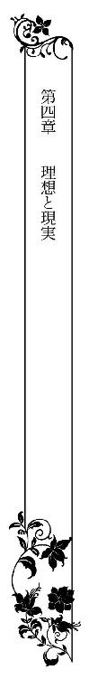
詩帆はプロポーズされて舞い上がっていたが、肝心なことを忘れていた。
それは幹夫への恩返しだ。だが、そのことを真剣に相談すると、幹夫は笑った。
『もう充分、恩返しをしてくれたよ。おまえが結婚して、幸せになってくれることが一番の恩返しなんだ』
そんなふうに言ってもらえるだけでも嬉しいのに、挙式は二ヵ月後と決まり、その費用を全部、幹夫が払ってくれるという。
こんなに幸せでもいいのかしら......。
ただ、会社は辞めることになった。もっと働きたかったのだが、瑛司に反対されたのだ。仕事をするなら、結婚生活に慣れた後、別の仕事をするように言われた。
確かに、結婚したら、彼のためにしてあげたいことがたくさんある。そういう意味では、結婚生活をおろそかにしたくなかった。
翔子は突然、詩帆が結婚すると言い出したことに驚いていた。
『そんなに急に結婚するなんて......。大丈夫なの？』
彼女は心配していたようだが、詩帆が瑛司に恋していることを知ると、最終的に祝福してくれた。
ただ、佐紀や嘉子には冷たい目を向けられた。政略結婚なんてなかったとしても、佐紀は瑛司が気に入っていたようだから、詩帆がプロポーズされたと聞いて、面白くないのだろう。嘉子はいつも冷たいので、今回のことが原因かどうかは判らなかった。
そして、プロポーズから二ヵ月が経った。
いよいよ明日が結婚式だ。詩帆はもう退社していたが、家政婦の仕事は挙式の準備の合間にやっていた。けれども、もうそれも今日が最後になる。
詩帆にはひとつ不安になることがあった。
この二ヵ月間、瑛司とはあまり会う機会がなかったからだ。
彼は仕事で忙しそうにしていて......。
ハネムーンに行くために、それまでにできるだけ仕事をしておくのだと言っていたが、それにしても、婚約した途端、デートする暇もないというのは、なんだか変だった。
まるで、わたしに会うのを避けているみたい。
でも、そんなはずないわよね。結婚する相手をどうして避けなきゃいけないの？
デートはともかくとして、挙式の打ち合わせには、彼も顔を出してくれたし、それをデートだと思えばいいだけだ。もっとも打ち合わせのついでに食事をするだけで終わっていて、デートという雰囲気はなかった。
でも、彼はいろいろ忙しいんだから......。
妻になるわたしが判ってあげなくちゃいけないわね。
それに、新しい名前でパスポートを申請するためにもう籍を入れているし、彼のマンションに荷物も運び込んだ。
そう。わたしの名前はもう青木詩帆ではなくて、神野詩帆なのよ。
そして、わたしは彼の妻......。
いよいよ明日は結婚式で、明後日からはハネムーンだ。これからはずっと二人でいられるのだから、それを楽しみにしていよう。
食事の後片付けを済ませ、自分の部屋へ行こうとしたら、大樹と鉢合わせをした。彼は書斎のほうから出てきた。幹夫と何か話をしていたのだろうか。
「なあ、おまえ......」
詩帆は大樹に話しかけられた。大樹から話しかけられるのはめずらしいので、詩帆は驚いてしまった。
「えっ、なんでしょうか？」
「結婚式場って、半年かそれ以上前から予約しないとダメなのを知っているか？」
彼がどうしてそんなことを言い出したのか判らなくて、詩帆は戸惑った。しかし、そういえば式場の予約がなかなか取れないという話は聞いたことがある。
「でも、予約取れたんですから......。キャンセルが出たのかも」
彼はニヤリと笑った。
「いいことを教えてやろうか？ ずいぶん前から式場は予約されていたんだよ」
「......どういうことですか？」
「つまり、おまえの婚約者には別の相手と結婚する予定があったんだ。それが破談になって、自暴自棄になったときに馬鹿なおまえと会った。そうだ、こいつと結婚してしまえと思ったわけさ。おまえなんか、ただの代役だ」
詩帆は大樹の辛辣な言葉に傷ついた。胸に何かがグサッと刺さったようなショックを受ける。
どうして、明日結婚するわたしに、こんなことを言うの？
彼のことを優しいと思ったことはなかったが、ここまでひどいことを言われるとは思わなかった。
「そんな......。破談になったらキャンセルすればいいだけだわ」
「プライドが高い男は自分が間違っていたことが認められないんだ。相手を替えれば、無事、結婚式は挙げられるというわけだ。相手は、騙されやすいおまえみたいなのが一番だろうな。まあ、いずれ飽きられるだろうよ。せいぜい、結婚している間だけでもいろいろ買ってもらうんだな」
彼は笑いながら、階段を上っていった。
信じないわ......。
そんなはずないもの。瑛司さんはいい加減な人じゃないんだから。
だが、婚約が決まった後はなんだかよそよそしい感じもする。彼はプロポーズしたことを後悔しているのかもしれない。なんだか変に思っていたが、もし大樹の言うことが本当なら、辻褄が合う。
衝動的にプロポーズしたが、後悔していたとしたら......。
詩帆は左手の薬指にはめられた指輪を見た。そういえば、この指輪もずいぶん早く用意されていて、詩帆は驚いたものだった。
もし、これが最初の婚約者のものだったら......？
詩帆は自分の想像にゾッとした。いや、そんなはずはない。大樹は前からよく辛辣なことを詩帆に言っていたから、今の発言もきっと同じようなものだ。
そうよ。ただの意地悪よ。
詩帆は大樹より瑛司を信じたい。瑛司はそんなひどいことを企む男性ではないはずだ。
優しい人なんだから......。
とにかく、明日は結婚式だ。明日になりさえすれば、すべての疑惑が晴れる。そして、二人はハネムーンに出かけ、帰ってくる頃にはまったくわだかまりはないはずだった。
詩帆は自分の部屋に戻り、携帯で彼に電話をかけた。しかし、留守番電話に切り替わってしまう。
彼は今、何をしているの......？
詩帆は携帯を胸に抱き、遠い目をした。
不安はあるが、いつまでもそのことにこだわっていても仕方ない。
それより、明日は一生に一度の特別な日なのだ。みんなから注目を浴びるというのに、寝不足のやつれた顔になったら嫌だ。
詩帆は早く眠りにつくことにした。
翌日、豪華な純白のウェディングドレスを身にまとった詩帆は、ラグジュアリーホテルのチャペルで、緊張しながら父親代わりの幹夫と共にバージンロードを歩いた。
祭壇の前にいる瑛司は光沢のあるグレーの花婿用の衣装を身につけている。衣装合わせのときに詩帆は一緒にいたので、どんな服なのか、彼が着たらどんなふうになるのか、とっくに知っていたはずなのに、今こうして彼を見ると胸が高鳴った。
いつもよりずっと素敵だわ......。
彼のほうはちらりとこちらに目をやる。その眼差しが冷ややかに見えたが、詩帆は気のせいだと思った。もしくはベール越しだから、違うふうに見えたのだと思う。
大丈夫。大丈夫よ。彼はわたしを愛してくれているからプロポーズしたのよ。
そう自分に言い聞かせた。
二人は祭壇の前で並んだ。外国人の牧師役の男性があまり流暢でない日本語で式を進行していく。本当の教会での結婚式ではないが、賛美歌が歌われ、詩帆の気分はますます高まっていった。
リハーサルのとおりに、詩帆も瑛司も誓いの言葉に『はい、誓います』と答えた。そして、お互いの指に結婚指輪をはめた。
「花嫁にキスを」
そこで初めて、彼の手によってベールを上げられた。
目の前に神妙な顔をした瑛司がいた。彼の瞳はじっと詩帆を見つめている。まるで詩帆を初めて見たかのような表情だった。
彼は詩帆の両肩に手を置き、顔を傾けて唇をそっと重ねる。
その一瞬、詩帆は幸せに舞い上がり、自分がどこにいるのかを忘れた。彼が唇を離すと、すぐに思い出したが、まだふわふわとした気分のままだった。
わたし......本当に瑛司さんの奥さんになったんだわ！
これ以上の幸せなんてない。
胸の中からたくさんの白い鳩が飛び立っていくような気分になっていた。
今や、詩帆はこれからの自分の人生が素晴らしいものになると確信していた。愛する夫がいて、これから子供も生まれる。二人で温かな家庭を築くのだ。
少し前に、詩帆は一人で郷里に戻り、両親も眠る先祖の墓の前で結婚の報告をした。本当は瑛司も一緒に行ってほしかったのだが、彼は忙しそうにしていたので誘えなかったのだ。とはいえ、両親は詩帆が結婚して、幸せになることをきっと喜んでくれているだろう。
オルガンの演奏の中、詩帆は瑛司と腕を組み、バージンロードを歩いて退場していく。たくさんの参列者の拍手が鳴り響き、花びらのシャワーを浴びる。詩帆は自然と笑顔になっていた。
結婚式が終わった後には披露宴が控えている。その前に、お互いの親族との写真撮影をする。疎遠になっていた親戚と共に、堀田一家も撮影に加わる。幹夫以外は詩帆に親切ではなかったものの、それでもあの家に居候することは認めてくれたのだから、冷たい親戚よりはよほど親族に近いかもしれない。
結婚式や披露宴で、幹夫が父親代わりの役をするのは当然のことなのだ。いや、もちろん、詩帆が頼み込んで、その役をしてもらったのだが。詩帆の中では、幹夫は父親と同等の存在だった。
披露宴では学生時代からの友人の他に、退社した会社の人達も招待した。瑛司のほうも会社関係の人達がたくさん招待されていて、挨拶して回るだけでも大変だった。
だが、これが終われば、瑛司と二人きりになれるのだ。そう思うと、ドキドキしてくる。
だって、この二ヵ月間、あまり瑛司さんと会えなかったから......。
会っても、なかなか二人きりにはなれなかった。車の中でキスするくらいで、詩帆は婚約するまでのたった二日のデートをよく思い返していた。あの思い出がなければ、彼はどうして自分にプロポーズしたのかと悩むところだった。
でも、それも今日で終わり......。
夫婦になったのだから、これからはもちろん一緒に暮らすし、そうすれば、デートしなくても、彼が家に帰ればいつでも二人きりだ。
ハネムーンはハワイだし、もちろんそこでも......。
詩帆はトロピカルドリンクを仲良く二人で飲むところを想像して、うっとりする。
そういえば、気になることがひとつあった。
瑛司の妹、梨佳とはまったく顔を合わせたことがないのだ。梨佳が女優の『神野梨佳』であることを知って驚いたが、彼女は瑛司と詩帆が出会う少し前から短期の語学留学のために渡米していて、まだ帰っていなかった。
普通、兄の結婚式には帰ってくるものじゃないかしら。
往復の飛行機代がもったいないが、神野一族はそのくらいのお金をまったく問題にしないほど裕福だ。それとも、語学留学というのは、そんなにハードなのだろうか。
詩帆は義理の妹に早く会いたかった。というのは、義理の両親になる人達は詩帆に冷たかったからだ。幹夫以外の堀田家の面々も詩帆には冷ややかで、時には意地悪なことも言うが、瑛司の両親はそれ以上だった。まるで氷のような人達で、詩帆は戸惑いを隠せなかった。
せめて義理の妹とは仲良くしたい。だが、その彼女は結婚式にも出席しないのだ。
わたし、やっぱり嫌われているのかしら。
そう思いつつも、ひょっとしたら仲良くなれるかもしれない。詩帆は家族が欲しかったし、一人っ子だったため子供の頃から兄弟が欲しいと思っていたのだ。義妹といっても、詩帆より年上だが、瑛司とは年齢が離れていて、今は二十五歳だ。詩帆とはそれほど違わないから、できれば仲良くなりたいし、その願望はまだ捨てていなかった。
ケーキ入刀もお色直しもキャンドルサービスもやったが、両親への手紙は読まなかった。瑛司が詩帆のことを思いやってくれて、やめたのだった。花束の贈呈はしたが、瑛司は詩帆の両親の代わりに堀田夫妻に花束を渡してくれた。
最後に、帰る客に挨拶をして、ようやく披露宴も終わった。二次会も予定していないので、これで今日の行事は終了ということだ。
なんだか、この披露宴は招待客のためのパフォーマンスのようだった。きっとこういった結婚式場で披露宴をすれば、誰でもそう思うのかもしれないが、詩帆はこれを義務のように感じていた。
神野ホールディングスとホッタ食品が合併でもするかのような儀式で......。
でも、わたしはホッタ食品で働いていたというだけで、佐紀さんのようにおじ様の娘でもなんでもないんだから。
そう思いつつも、披露宴に対する違和感は詩帆の中から消えなかった。
その日はホテルのスイートに泊まることになっていた。ウェディングプランとして最初から組み込まれていたもので、ハネムーンは明日出発する予定だ。
ご祝儀は瑛司の両親が預かってくれるらしいので、今夜はもうすることがない。
後は食事をして、ゆっくり眠ることくらいで......。
ウェディングドレスから着替えた詩帆は瑛司と待ち合わせて、一緒に部屋へと向かった。扉を開けて、詩帆はその部屋の広さに声を上げる。
「二部屋に別れているのね！」
思わずそう言ってしまったが、スイートとはそういうものだ。居間と寝室に分かれている。だが、もちろん詩帆はそんなホテルに泊まるのは初めてなので感激した。
しかも、ソファの前にあるガラステーブルの上には、冷やしたシャンパンや果物の盛り合わせ、チョコレート、そして花のアレンジメントが置いてある。
「サービスいいのね」
「新婚用ってことだ」
瑛司に肩を抱かれて囁かれ、ドキッとする。
そうよ。わたし達、もう夫婦なんだったわ。
実際に籍を入れたのはもうずいぶん前だ。あのときから夫婦なのだが、詩帆は堀田家に戻ったし、なかなか実感が湧かなかった。二人があまり会っていなかったせいでもある。本当のデートと言えるのは、最初のあの二日だけなのだ。
彼に抱かれたのも一度だけで......。
だから、詩帆が肩を抱かれて、ドキドキするのは仕方のないことだった。
結婚までしたのに、まだ彼が傍にいることに慣れてないなんて......。
「あ、あの......荷物出しましょうか」
「まだいい。せっかくシャンパンがあるから、乾杯をしよう」
二人はソファに並んで座り、シャンパンを注いだグラスを持って、乾杯した。
炭酸が喉を通っていき、改めて詩帆はやっと結婚式と披露宴が終わったことにほっとする。朝から緊張の連続だったからだ。
「豪華な結婚式だったわね。なんだか自分の結婚式じゃないみたいで、変な感じがしたわ」
「そうか？ 君はああいう派手な結婚式が好きなのかと思っていたが......」
「違うわ。でも、なんだかそういうことになったみたいで......」
詩帆は彼がこのウェディングプランを選んだと思っていた。しかし、彼は詩帆がこういう豪華なプランを望んでいると思って、選んだのだろうか。
ハネムーンについては二人で旅行会社に行って決めたが、この結婚式については、詩帆はほぼ流れされるままだった。何故か幹夫や嘉子が口を出してきたし、他は瑛司が決めた。自分で決めたのはウェディングドレスだけだった。
でも、文句を言う筋合いでもないわ。わたしはまったくお金を出してないんだもの。
「君の親戚も来てくれたけど、あまり仲がよさそうじゃなかったね」
「ええ......。でも、疎遠になっていたから仕方ないわ。それより、梨佳さんが出席できなかったことが気がかりで......」
「別に大したことじゃないだろう」
瑛司が素っ気なく言う。詩帆は驚いて、シャンパンを飲み干す彼の顔を見た。
「だって、まだ顔も合わせたことがないのよ。義理の妹になる人に会いたいのは当然でしょう？ それに、梨佳さんがわたしのことを気に入らなかったら......」
彼は目をしばたたかせた。
「......いや、気に入るとか入らないとか、そういう話じゃない」
詩帆は彼が何を言っているのか判らなかった。なんだか話がずれているようだ。
「どういうこと？」
「つまり......」
彼は咳払いをして、グラスをテーブルに置いた。そして、詩帆の頬に触れてくる。
「君を気に入らないはずがないじゃないか、ということなんだ」
そういう言い方ではなかったような気がしたが、頬を撫でられ、甘い言葉を囁かれると、詩帆はそれを追及することを忘れてしまっていた。
「瑛司さん......」
「さあ、これを飲んで」
彼は詩帆のグラスを持つ手を握り、シャンパンを飲ませる。詩帆は彼の目を見ながら、ゴクンと飲み干した。彼は微笑み、そのグラスをテーブルに置くと、顔を近づけてくる。
目を閉じ、彼のキスを唇に受けた。
瞬間的に、身体が燃え上がる。
その反応の早さに、詩帆は驚いた。けれども、二人きりでキスしたのは、婚約したあの夜以来だった。もちろん車の中での軽いキスならあった。しかし、舌を入れるようなキスは二ヵ月ぶりだ。
詩帆は彼の舌を受け入れながら、うっとりした。
だって、ずっと待っていたんだもの。
彼は紳士なのかもしれないが、詩帆はそんなことを望んでいたわけではなかった。それに、一度、彼のベッドで身体を重ねたのだ。だったら、結婚前に何度抱かれようが同じことだと思っていた。
でも、きっと彼はわたしを大事に思ってくれていたんだわ......。
ただ、これからはそんな気遣いは必要ない。二人は名実ともに夫婦で、止めるものは何もなかった。
キスは深まり、詩帆は彼の髪に手を差し込んだ。愛しさが溢れてくる。
ああ......やっぱり彼が好き。愛してる。
この二ヵ月間もそう思っていたが、やはり身体が接触すると、余計に自分の愛は燃え上がっていく。
そして、彼に抱かれることへの喜びが湧き起ってきた。
「このまま......ベッドに行きたい。いいかい？」
彼に囁かれて、詩帆は頷いた。
詩帆のほうも彼に抱かれることを待ち侘びていた。キスされて、火がついたからには、もう彼になんとかしてもらうしかない。
瑛司は詩帆を抱き上げた。キングサイズのベッドの上に下ろされて、再び貪るようなキスをされる。
身体が密着しているせいで、彼の股間がすでに硬くなってしまっているのが判った。だが、詩帆の身体も反応しているから、それが嬉しくて仕方ない。詩帆も彼にしがみつきながら身体をくねらせ、キスを返した。
唇が離れたとき、詩帆は服の上から胸を揉まれていた。ブラの中で、その胸の先端が敏感になっている。
彼に抱かれる喜びを知っているからこそ、詩帆の身体はそうなってしまうのだ。
「もう......脱がせていいかな？」
詩帆はドキンとして、顔を赤らめながら頷いた。彼は詩帆の服を取り去っていく。詩帆は彼にされるままになっていたが、自分で脱げるのに彼に脱がせてもらうのは恥ずかしかった。けれども、自分で脱ぐことを考えたら、それはそれで恥ずかしいと思う。
たちまち下着も剥ぎ取られて、一糸まとわぬ姿となった。彼の熱い視線を感じて、顔が上気してくる。彼は詩帆のほうを見たまま、自分も服を脱いでいった。
彼がボクサーパンツを脱ぎ去ると、勃ち上がっているものが見えた。詩帆ははっとして、目を逸らす。
「別に見てもいいんだよ」
笑いながら言われたものの、やはり視線を向けられない。
彼は詩帆の身体に覆いかぶさるようにキスをした。そして、詩帆の手を取ると、自分の股間に触らせた。
「は、初めて触ったわ......」
「そうだろうね。感想は？」
「感想なんて......。か、硬いのね......」
「だが、いつもはそうじゃない」
「えっ......？」
彼はにっこり笑った。
「興奮しているときだけ、こうなるんだ。君を抱きたくて仕方ないときに......」
「そうなの？」
詩帆は小さな声で言い、手の中のものをそっと見た。
「君に触られると、ますます硬くなっていくんだ」
「なんだか......不思議」
「君のココが濡れるのと同じことなんだ」
不意に脚の間に触れられて、ドキンとする。
「あ......ん......」
「ほら、しっかり潤んでいる。君は僕に抱かれたくて仕方ないんだ」
詩帆は頬を染め、頷いた。
嘘をついても仕方ない。けれども、彼のほうも詩帆を抱きたいと思ってくれているから嬉しい。これが自分だけ彼を欲しがっていたりしたら、惨めでたまらないだろう。
彼の気持ちもわたしと同じ......。
そう思うだけで、自分の中からとろりと蜜が流れ出してきて、彼の指を濡らした。
「君の身体は正直なんだね」
彼はそう言うと、その指を内部に挿入していった。
「やぁ......」
「感じる？」
彼の指が自分の中で動いていく。内壁が彼の指で擦られていき、詩帆はビクンと身体を揺らした。
「君は本当に敏感だから......」
「あん......だ、だって......ぁっ」
言い訳をしようと思ったが、どうしても快感に気を取られてしまう。
「君も僕のものを愛撫してくれないか？」
「え......どうやって？」
よく判らないから、詩帆は彼のその部分を握って、指で触れてみた。先端からは何か液が滲み出ている。それもまた興奮している証なのだろうか。
いつしか詩帆は身体を起こして、彼と向かい合い、互いのものを刺激し合っていた。
彼は指を引き抜き、詩帆の手も外させた。すっかり愛撫に興奮していた詩帆は、彼が何をしようとしているのか判らず、すっかり戸惑ってしまった。
「君のココにキスをしたいんだ」
詩帆の頬はカッと熱くなる。
前にもされたことだ。そして、それがどんなに気持ちいいことかも知っている。だが、自分だけ気持ちよくなるのは不公平な気がする。
今、彼と共に高まっていたからこそ、そう思うのだ。
「わ、わたしも......あなたのそこに......」
詩帆は照れながらそう言うと、彼は嬉しそうに微笑んだ。
「それなら同時にしよう」
「同時って......？」
「教えてあげるから、言うとおりにするんだ」
彼はベッドに横たわり、詩帆を逆向きにまたがらせた。彼の指示どおりにしてみて、ギョッとする。彼にまたがるには脚を大きく開かなくてはいけないし、何より逆向きでは、彼にお尻を向けていることになる。
「わたし......やっぱり......」
怖気づいて彼の上から下りようとしたが、腰を両手で掴まれた。
「お願い......っ」
「僕のものにキスしてくれ」
そう言われてしまったら、もう嫌だとは言えない。詩帆は恥じらいながらも、そっと彼のものに両手を添えた。そして、思い切って唇を寄せた。
一度キスすると、後は簡単だった。あちこちにキスをして、舌を這わせる。自分がどんな格好をしているかは意識していたものの、今は彼を気持ちよくさせたい一心で愛撫に励んだ。
ああ、わたしがこんなことをしているなんて......。
けれども、この行為には意味がある。愛しているから、こういうことができるのだ。
詩帆は口を開いて、先端からくわえてみる。
「ああ......詩帆......っ」
彼は詩帆の腰をぐっと引き寄せると、秘部に舌を這わせていく。
「んっ......んんっ......」
感じさせてあげたいと思って愛撫しているのに、今度は自分が愛撫されて、腰が震えた。
わたし......わたし、どうしたらいいの？
敏感なところを刺激されれば、そちらのほうに意識が集中してしまい、口での愛撫のほうが疎かになっていく。
何度か舌を絡めてみたものの、どうすることもできずに、ただ口にくわえているだけになる。代わりに詩帆は腰を揺らして、彼の愛撫に応えていた。
彼の舌が中にまで入ってくる。内部を抉るように刺激されて、詩帆はただただ蕩けていった。もう自分の身体を支えることもできなかった。
「ダメ......っ......ああっ......」
とうとう詩帆は自分が愛撫するどころではなくなっていた。すると、彼も愛撫をやめて、詩帆の腰を押し上げた。
「さあ、こっちを向いて」
「え......」
詩帆は泣きそうになりながら彼の指示に従った。自分が彼の上にいることは同じだが、今度は彼のほうに顔を向けている。
彼は己のものを詩帆の秘裂にあてがった。
「瑛司さん......っ」
「このまま、そっと腰を下ろして」
詩帆は首を横に振った。彼が自分に何をさせたがっているのか判るが、そんなことはできない。できるとは思えない。
「無理よ。わたし......絶対無理」
「できるさ。簡単なことだ。さあ......」
彼に促されて、彼の言うとおりに腰を下ろしていく。
「あ......はぁ......ぁ......」
最初のときみたいに痛みがあることを覚悟していたが、そんなことはなかった。驚くほどスムーズに入っていく。
気がついたら、彼のものがすべて詩帆の中に収まっていた。
「嘘......」
「本当だよ」
彼は腰を突き上げた。詩帆は小さな悲鳴を上げて、バランスを取る。
「今度は自分で動いてみるといい」
「ダメよ......無理」
この行為自体にも慣れていないのに、彼の目の前で腰を動かすなんて、恥ずかしくてできない。
「少しだけでいいから」
彼は詩帆が恥ずかしがっているのは判っているのに、わざとそう言っているとしか思えない。詩帆は仕方なくゆっくりと腰を動かした。
ぎこちなく動いたものの、上手くできない。詩帆の身体は燃え上がっていて、こんな中途半端な動きでは我慢できないというのに。
「上手くいかないみたいだな」
彼はさっと己のものを引き抜くと、詩帆と体勢を入れ替えた。
詩帆はシーツの上に横たわり、彼に両脚を広げられて、一気に奥まで挿入された。
「あぁ......んっ......」
やだ。奥まで痺れてるみたい......。
感じるのは内壁だけではない。彼のものに奥まで突かれるたびに、詩帆は大きく身体を震わせ、声を上げた。
「やぁ......あぁぁ......あんっ」
もう淫らな声は止められなかった。同時に、自分がこれほどまでに感じていることも止められない。
気持ちよくて、たまらなくて......。
詩帆は彼の下で身悶えていた。
不意に、彼が覆いかぶさってくる。抱き締められ、キスをされた。詩帆は彼にしっかりとしがみつき、腰に両脚を絡めていく。
全身が熱く痺れている。
身体が疼いてどうしようもないの......。
最後の一突きで、詩帆は絶頂を迎えた。
「ああぁっ......っ！」
同時に、彼も同じように上りつめたのが判った。二人はきつく抱き合う。
もう離れたくない。
詩帆は彼とひとつに溶けていきたかった。
詩帆は瑛司と抱き合ったまま、しばらく夢の中をさ迷っているような気分になっていて、なかなか現実に戻れなかった。
しかし、彼のほうははっとしたように身体を離した。
「避妊を忘れていた」
そういえばそうだった。夢中でまったく思いつきもしなかったのだ。
「でも、結婚したんだから......」
家族が欲しい詩帆はもちろん子供も欲しかった。彼が子供好きかどうかは判らないが、結婚したら、普通は子供を持つものだ。
「......そうだが、今は二人で過ごすほうがいい」
彼はまだ新婚時代を楽しみたいと言っているのかしら。
その気持ちは判る。しかし、たとえ妊娠したとしても、別に困ることでもない。二人は夫婦なのだから、ごく自然の出来事だ。
「わたしはいつでも構わないけど」
「だが、もう少し先のほうがいいな。これからは忘れないようにしよう」
詩帆は彼の言葉の素っ気なさにガッカリした。妊娠しても構わないと言ってほしかったのに。
なんだか二人の夢のような時間が貶められた気がした。
これはただの身体の交わりではなくて、愛情に裏打ちされた結びつきだからだ。それを肉体レベルの話に落とさないでほしかった。
けれども、瑛司がまだ甘い新婚生活をしたいというなら、それを受け入れよう。
「判ったわ......」
とはいえ、忘れないようにするのは瑛司のほうだろう。詩帆は彼にキスされた時点で、避妊のことまで頭が回らなくなるに違いないからだ。
「シャワーでも浴びようか」
彼は優しくそう言って、詩帆に手を差し出した。
さっきの素っ気なさは影を潜めている。詩帆はほっとして、その手を取る。二人は手を繋いで、バスルームへ向かった。
そこにはガラスの箱みたいなシャワーブースがある。その狭いスペースに二人で入ると、肌が触れ合い、ドキッとした。
身体を綺麗にするだけなんだから......。
そう思いつつも、詩帆の頭の中にはいろんな妄想が湧いてきてしまう。今の詩帆は彼に全身を隈なく触れられたいと思っていた。
わたし、一体どうなってしまったの？
淫らなことばかりでいっぱいになっている。
瑛司はシャワーを出して、ノズルを上の位置へと固定した。雨のように降り注ぐ湯の中で、彼は詩帆を抱き締めてきた。
「今の僕の頭の中を覗いたら、君は呆れてしまうかもしれないな」
耳元で囁かれて、ドキッとする。
「......どんなことを考えているの？」
「君を泡だらけにして、撫で回したいとか......。立ったまま君を抱きたいとか」
「立ったまま？ そんなことできるの？」
彼にクスッと笑われる。
「そんなことを訊かれたら、実践したくなるだろう？」
そう言いながら、彼は詩帆の背中を撫でていく。
また身体の熱が呼び覚まされていく。しかし、詩帆も望んでいたことだ。
ずっと彼を求めていたのだ。一度では足りない。何度でも、彼と抱き合いたい。
詩帆の身体が欲求に耐えかねて、淫らに動く。彼はそれに気づいて、詩帆の頬を両手で包んだ。
二人は見つめ合い、それから熱い口づけを交わした。
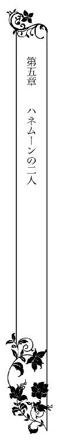
ハネムーンは七泊の予定で、今日は四日目だった。
今、詩帆は瑛司と共に、ホノルルにあるリゾートホテルのスイートルームに泊まっている。窓の外にはバルコニーがあり、うっとりするような美しい海が見える。
詩帆は国内の旅行もほとんどしたことがなく、ハワイなど夢の夢だったが、瑛司にとっては特に目新しい場所ではなかったようだ。それでも、ハネムーンはどこにしようかと訊かれた詩帆がハワイと答えたために、行き先はここになったのだ。
そう。彼にとっては、別に来たい場所でもなかったのよね......。
それでも彼は詩帆に辛抱強く付き合ってくれていると思う。
観光は、日本語を話せる現地のガイドがリムジンで案内してくれる。詩帆はオプショナルツアーに参加するのだと思っていたが、ホテルの前に現れた白いリムジンを見て驚いた。車内はソファやテーブルがあって、こういったものに初めて乗った詩帆は単純に嬉しかった。
しかし、午後過ぎた辺りから、彼が携帯でやたらと電話するようになって......。
彼は責任ある社長だということは判っていた。だが、まさか旅行中にも仕事のメールが来て、彼が折り返し電話をかけるなんて、詩帆も想像していなかったのだ。
彼はリムジンの中にもパソコンを持ち込んでいて、何やら仕事をしている。その間、詩帆はボンヤリ景色を眺めたり、写真を撮ったりするしかなかった。
綺麗な景色を見たら、そのことを彼と話したいのに話せない。というより、詩帆は無視されているような気分になっていた。こんなことなら、ハネムーンになんて来なくてもよかったのに。
でも、彼はわたしのためにわざわざハワイのハネムーンを選んでくれたのよ。
そう思うと、逆に申し訳ない気持ちにもなってくる。きっと彼も好きで仕事をしているわけではないのだろう。ハワイに来てまで、仕事をしたい人などいないはずだ。
けれども、それが四日目となると、さすがにこんなはずではなかったのにと思うようになってきた。
ハワイアンダンスを見ながらのディナーも、メールに邪魔される。夜景を見ようと、タンタラスの丘に行っても、彼はなんだか上の空だ。サンセットクルーズも同様で、詩帆はもっとロマンティックな体験をしたかった。
これはわたしのワガママなのかしら。
瑛司の日常はこういうもので、詩帆は彼のごく一部しか知らずに結婚してしまったのだろうか。
確かに、よく知り合う間もなく婚約して、それからも碌に話す時間もなかったのだ。彼と結婚したことを後悔するわけではないが、それでもこれほどの仕事人間だとは知らなかったし、詩帆はそのことに対してどうしていいか判らなかった。
彼は夜中になると、情熱的な夫に変身して、詩帆を抱いた。そこから朝までは、彼は間違いなく詩帆だけのものだった。つまり、ベッドにいる時間は詩帆が彼を独占できた。
朝食を摂る頃には、彼はなんとなくよそよそしくなってくる。彼の頭の中には仕事のことがあって、詩帆にまで気が回らないのかもしれない。けれども、それがまるで『釣った魚に餌はやらない』ように見えてしまう。
妻にまで気を使うのは大変だし、詩帆もそんなに多大な要求をしているわけではない。ただ自分達は新婚で、ハネムーンの最中なのだ。それなら、少しくらい優しくしてくれてもいいはずだと思うのだ。
ハワイに着いて四日目の朝、ルームサービスの朝食もそこそこにパソコンを立ち上げた彼に、詩帆は躊躇いつつ話しかけた。
「今日は天気もよくないし、ショッピングに行きたいわ」
彼は顔を上げて、にっこり笑った。
「それなら、ガイドにそう言って、連れていってもらうといい」
「......あなたは？」
「女性の買い物は時間がかかるからな。君も僕のことは気にせずに、好きなものを選びたいだろう？」
つまり、彼はここで仕事をしていたいと言っているのだ。詩帆ひとりでショッピングに行けばいい、と。
信じられない！ ハネムーンなのに！
けれども、やはりワガママは言えない。
ショッピングに行きたいとは言ったものの、本当に何か買いたいわけではなく、ただ彼といろんな店を見て回りたいだけだったが、彼はそんなことより仕事がしたいのだろう。
だからって『仕事とわたしのどちらが大事なの？』とは訊けないわ。そんなことを言い出したら、きっと彼に嫌われてしまうもの。
彼にとって、仕事は本当に大事なものなのだ。それくらい、彼の妻である自分は判っていなくてはならない。
でも、やっぱり淋しい......。
ハネムーンなのに、一人きりで買い物に行くなんて。
「お土産は最終日に買えばいいから、自分の買い物だけすればいいよ。変な遠慮はせずにカードを使うんだよ」
カードというのは彼の家族カードで、入籍後に作られ、渡されていた。彼のお金に依存するようで、なんだか申し訳ないが、詩帆は貯金らしい貯金も持っていないから、結局は彼に頼ることになってしまう。
「......ありがとう」
彼はにっこり笑った。彼のその笑顔を見て、詩帆は少しほっとする。傍にいたとしても、上の空でいられるより、ずっといい。仕事が気になるなら、思う存分、仕事をしてもらえば、二人でいられるときにはもっと優しくしてもらえるかもしれない。
そうよ。淋しいけれど観光は一人で行ったほうがいいんだわ。
そもそもハワイに行きたいと言ったのは詩帆なのだ。彼は何度も来ていて、きっと観光していても面白くないのだろう。
ガイドがホテルへ迎えにきてくれる時間になったので、詩帆は彼に笑顔で手を振り、部屋を出ていった。ここは外国だし、一人で出かけるのは少し怖いが、幸いハワイは日本語が通じるところが多いのだ。それに、一応、片言の英語は話せる。
詩帆は冒険するような気分になってきた。一人で出かけるのも悪くないかもしれない。
ホテルの前に白いリムジンが待っている。詩帆はガイドのマイクに明るく挨拶をした。瑛司は詩帆がエレベーターで一階に下りる間にマイクに連絡してくれていて、アラモアナショッピングセンターへ連れていくように言ったらしい。
目的地に着くと、マイクの携帯番号を教えてもらった。帰りたくなったら、マイクに連絡すれば、迎えにきてくれるのだ。
さあ、これからは一人だわ！
詩帆はガイドマップを手に、歩き回った。可愛くてセクシーなリゾートワンピースも見つけて、それに似合うサンダルもついでに買う。普段の詩帆なら贅沢だと思ったことだろう。だが、旅先ではなんだか解放的な気分になっていることもあって、感覚が麻痺しているようだった。
それに、このワンピを着ているところを、瑛司さんに見てもらいたいわ。
リゾートワンピースはこのハワイにぴったりだと思うのだ。これを着たら、彼の気持ちも仕事から自分に向くかもしれない。いっそのこと、思い切ってビキニでも買ってみようか。ワイキキの浜辺に行ったときは、おとなしい水着を着ていたが、彼の気を引くためには、もう少し努力が必要なのかもしれない。
いろいろ試着して、迷った末で大決心して、明るい色の花模様のビキニも買った。
彼にビックリされないかしら。
いや、驚くのは当然としても、それはいい驚きであってほしい。詩帆は切にそう願った。
プルメリアをモチーフにしたアクセサリーにも惹かれたが、できればこういったものは瑛司に買ってもらいたかった。ハネムーンなのに、アクセサリーを自分で買うのは味気ない。
それから、あちこち歩き回り、周辺の店まで足を伸ばしてみた。おかげで、おいしいパンケーキも食べられた。満足して、ショッピングセンターに戻ろうとしたところで、日本人観光客らしい老夫婦が道端で屈んでいるのを見て、急いで駆け寄った。
「どうかしましたか？」
夫のほうはうつむいていて、一目で具合が悪いのが判った。妻のほうはおろおろしている。
「気分が悪くなったみたいなの。一体どうしたらいいのか......」
周りに座るような場所はない。救急車を呼んだほうがいいのかもしれないが、詩帆は番号も知らないし、自分の英語力で状況を伝えられるとは思えない。
「ツアーで来られたんですか？」
それならツアー会社に連絡して、救急車の手配をしてもらおうと思ったのだが、個人で来たらしかった。
どうしよう......。
詩帆はマイクのことを思い出して、彼に電話をして、状況と場所を説明した。彼が代わりに救急車を呼んでくれるという。
「大丈夫ですよ。すぐ救急車が来ますから」
詩帆も屈んで、夫の背中をさすった。狼狽えている妻のほうにも優しい言葉で安心できるように声をかけているうちに、救急車が来た。
妻は何度もお礼を詩帆に言ったが、不安そうにしている。当たり前だ。言葉も通じない外国で病院に行くのは怖い。詩帆は思わず救急車のスタッフに、どこの病院に行くのかをつたない英語で尋ねた。教えられた病院名を頭の中で繰り返し、救急車が去っていった後、ショッピングセンターのタクシー乗り場に急ぐ。
あの老夫婦の力になりたいから、病院まで自分も行くつもりだった。
ああ、わたしがもっと英語が上手だったらよかったのに。
そういえば、マイクがいる。タクシーで行くより、マイクに連絡して、一緒に行ってもらえばいいのか。そう思って立ち止まったとき、後ろから声をかけられた。
「詩帆！ 走っていたが、どうしたんだ？」
「瑛司さん！」
詩帆は嬉しくて、彼に抱きつきたかった。彼が仕事をやめてここに来てくれたことも嬉しかったが、彼さえいれば、すべての問題が解決できるような気がしたのだ。
「タクシーで追いかけてきたんだ。やっぱり君一人じゃ心配だから」
彼はわたしを一人で行かせたことを後悔しているんだわ。
英語が通じずに右往左往しているところを想像したのだろう。だが、今の状況は確かにそれに似たものだ。詩帆は老夫婦が救急車で連れていかれたことを話した。
「わたしもその病院に行こうと思って......」
「どうして君が行かなくちゃならないんだ？」
彼にそう尋ねられて、詩帆は戸惑った。
「だって......想像してみてよ具合が悪くなったご夫婦が自分のお祖父さんやお祖母さんだったとしたら......。外国で病気になったら、不安でたまらないわよ。診察代や治療代だって、いくらかかるかも判らないし。だから、少しでもお手伝いしてあげたいの」
詩帆の言葉に、今度は彼のほうが戸惑っているようだった。
「その人達は赤の他人だ。救急車を呼んであげたなら、それで充分じゃないか」
「ダメよ。困っている人は助けてあげなくちゃ。奥さんのほうは泣きそうだったわ。旦那様のことを心配して、今はたぶん泣いているわ」
そんな想像をしたせいで、詩帆まで涙ぐんでしまう。できれば彼にも一緒に行ってもらいたかった。外国で病院に行くなんて、詩帆も不安なのだ。
彼はしばし詩帆の涙を見つめ、頬をそっと撫でた。
「......判った。行こう」
「ああ、ありがとう！」
結局、マイクを呼ぶ時間を節約するために、タクシーに乗った。詩帆は彼と並んで座りながら、リムジンで移動するよりこのほうがずっといいと思った。
「あなたが一緒にいてくれたら、怖いものはないわ。わたし、ここであなたを見たとき、そう思ったの。あなたは全部解決してくれるって」
「そんなに頼られたら、そうするしかないだろうね」
彼はそう言いながら、詩帆のショッピングバッグを自分の膝の上に載せる。そして、中を覗き込んだ。
「思ったほど買ってないんだね」
「え、そう？ 贅沢かと思ったんだけど、誘惑に勝てなかったの」
「もっと買ってよかったのに。欲しい物はなかったのかい？」
「あったけど......。あなたに買ってもらいたいわ」
詩帆がアクセサリーの話をすると、彼は頷いた。
「いいよ。後で買ってあげよう」
「嬉しい！ ありがとう」
だが、何より嬉しいのは、久しぶりに彼がベッド以外で詩帆に関心を示してくれたことだ。特にハワイに来てからは、詩帆に飽きたのではないかと疑うくらいだった。だが、今はもう違う。
詩帆は彼こそが自分の夫だと誇らしい気分になってくる。
やがて病院に着く。瑛司は受付で、救急外来について流暢な英語で尋ねた。詩帆が片言の英語しか話せないのだから、一人でここに来たとしても、救急外来の場所さえ判らなかっただろう。
彼が英語を話すところは何度か目撃していたが、今ほど頼もしく思えたことはなかった。
救急外来へ行くと、あの老婦人がぽつんと待合室に座っていた。詩帆が優しく声をかけると、彼女はほっとしたような表情になる。
「わざわざ来てくださったんですね。なんて親切な方なんでしょう」
「そんなことないです。わたしだって、こんな立場になったらと思うと......。だから、何かお手伝いができたらって......」
詩帆は瑛司を紹介した。老婦人はますます恐縮する。
「ハネムーンなんでしょう？ わたし達にどうぞ構わずに」
そう言いつつも不安なのは、表情に表れている。詩帆は彼女の手を握った。
「夫は英語が得意なんですよ。ね、それだけでもとても安心できるでしょう？ 同じ日本人なんだから、遠慮せずに甘えていいんです」
瑛司に頼りきりの自分がこんな偉そうなことを言うのは間違っているかもしれないが、彼女の心を解すために言う。瑛司も詩帆に加勢してくれた。
「僕達、ずっとここにいますから。何か力になれることがあれば、なんでもしますよ」
彼の力強い言葉を聞いて、詩帆は嬉しくなると同時に、とても誇らしかった。
わたしの夫は、こんなに素晴らしい人なんだって。
彼を好きになって本当によかった。
詩帆は今ほど強くそう思ったことはなかった。
結局、病院に日本語ができるスタッフがいて、老夫婦もそれほど不安に陥らずに済んだようだった。
検査の結果、ストレスによる自律神経失調症だった。ハワイでゆっくり過ごそうと別荘を借りて、しばらく滞在していたが、慣れない外国では逆にストレスを溜めてしまっていたらしく、症状が出たのだという。
彼らは別荘までリムジンで送り届けた詩帆と瑛司に繰り返し礼を言った。特に老婦人は別れ際に、詩帆の手を両手で握って、涙を流さんばかりだった。
「あなた方が待合室でずっと一緒にいてくださったから、本当に助かったわ。そうでなければ、わたしも血圧が高いから、どうなっていたか......」
詩帆も彼女の両手を自分の両手で包み込み、微笑んだ。
「お身体をお大事になさってくださいね。日本に帰るときはどうかお気をつけて」
彼らは滞在を切り上げて、できるだけ早く日本に帰ると言っているが、帰りの飛行機は八時間かかるから心配だった。
「お薬をもらったから大丈夫よ。日本に帰ったら、お礼をさせてね」
「お礼なんて......いいんです。お互い様ですよ。でも、日本に帰っても、ぜひお会いしたいです。わたし、両親も祖父母ももういないから......」
「まあ......そうなの。じゃあ、約束よ。必ず会いましょうね」
老婦人は詩帆を気に入ってくれたらしく、優しくそんなふうに言ってくれた。瑛司のほうは彼女の夫と何か話していて、手を握られている。詩帆は旅先で優しそうな夫妻と知り合えたことが嬉しかった。
夫妻と別れた後、二人はホテルに戻ることにした。これから買い物や観光をするには少し疲れていたからだ。
リムジン移動中、瑛司は向かいのソファに座る詩帆の顔をしげしげと見ながら口を開いた。
「あのご主人、野島グループの会長だって知ってたかい？」
「えっ......そんな偉い人なの？」
野島グループと言われてもピンとこないが、彼の言い方ではかなりの大企業なのだろうか。それにしても、スーツでも着ていれば別だろうが、アロハシャツを着ていた老人はごく普通のお年寄りにしか見えなかった。
「リタイアして、ハワイに移住するつもりで、試しにしばらく滞在していたんだ。現地でメイドも雇わずに、二人でやってみようと。だが、日本のほうがいいという結論に達したみたいだ」
「ハワイは天国みたいに綺麗なところだけど、慣れた日本のほうがいいものね」
英語のレベルは詩帆と同じくらいのようだったし、メイドを雇ったとしても、その人が日本語を喋れなかったらストレスが溜まることだろう。
「しかし、君のおかげで驚くような仕事のパイプができたよ」
詩帆は呆れて目を丸くした。そして、その後、彼を睨みつけた。
「わたし......偉い人だから助けたんじゃないわ」
「判っているさ。君はそんな人じゃない。誰でも困っている人がいれば助けるんだ」
彼はなんだか楽しそうに微笑んでいる。急にそんな態度を取られて、詩帆は戸惑った。彼はハワイに来てからというもの、仕事ばかりに気を取られていたみたいなのに、今は詩帆の顔を見て、話をしている。
なんだか別の人になったみたい。
プロポーズされる前の彼に戻ったようだわ。
詩帆は首をかしげた。
「何も特別なことじゃないと思うわ......」
「ハワイに来てから、君はあちこちの観光地で、気軽に他の観光客に話しかけていたね。自分から声をかけて写真を撮ってあげたり、転んで泣いている子供をあやしたり......」
「当たり前のことだと思うけど」
「そうかな。僕ならしないことだ。しかも、君は日本人ではない観光客にも話しかけていた。つたない英語で」
詩帆は顔を赤らめた。
「そうよ。英語は下手よ。片言だし、発音は悪いし」
「君はとても面白い人だ」
馬鹿にされているのだろうか。だが、彼はにこにこ笑っている。とても楽しそうで、そんな嫌味なことを言っているつもりはないようだった。それなら、褒められているのかもしれない。
「でも、あなたがそんなにわたしのことを観察しているとは思わなかったわ。メールしたり、電話したりで忙しいみたいだったし」
「見ていたさ。ずっと......ね」
彼に意味深なことを言われて、見つめられる。詩帆はなんだか照れてしまった。
「そう......。よかった」
「どうしてよかったと思うんだ？」
「だって、あなたはハネムーンでも仕事のことしか頭にないみたいだったから。......あ、あなたが忙しいのは判るから批判しているんじゃないのよ。だけど......もう少し......」
「もう少し自分を見てもらいたかった？」
詩帆はさっと視線を逸らした。けれども、嘘をついても仕方ない。それに、二人は夫婦なのだ。彼に視線を戻して、そっと頷く。
すると、彼は手を伸ばして、テーブルに置いていた詩帆の手を握った。何気ない行動だが、ドキッとしてしまう。
「僕は英語が得意でよかったと思っている」
「そ、そうね。わたしも助かったわ」
「君にとって頼れる男であったこともよかったと思っている」
それに対しては、詩帆は大いに頷いた。
「本当にあなたがいてくれて、よかったわ」
「君は素直なんだな。これからはパソコンや携帯の画面でなく、君を見ているよ」
「本当に？ お仕事、終わったの？」
正直言って、彼がなんの仕事をしていたのかは不明だ。ただ、とても忙しそうにしていた。ハネムーンにまで持ってくるような仕事なのだから、さぞかし重要なことだったのだろう。
「ああ。あとは日本に帰るまで、僕は君のものだ」
彼はわたしのもの......！
もちろん、わたしも彼のものだ。
詩帆は頷き、微笑んだ。彼も微笑みを返して、熱っぽい眼差しで見つめてくる。
ここは車の中だが、ホテルの部屋に戻ったら......。
早く彼の腕に抱き締められたい。詩帆の頭の中にはそのことしかなかった。
部屋に戻り、扉を閉めると、先に入った瑛司がくるりと振り返り、詩帆を抱き締めてきた。
一刻の猶予もないといった抱き締め方で、詩帆はドキッとして、バッグを取り落す。そして、情熱的なキスを受けながら、彼の背中に手を伸ばした。
詩帆はうっとりと夢みたいな気分で、彼のキスを堪能した。
彼は世界中で一番キスが上手いんじゃないかしら......。
もちろん詩帆がキスしたのは瑛司しかいないから、比較などできないが、世の中の誰もがこんなふうに詩帆を夢見心地させることはできないと思うのだ。
だから、わたしにとっては世界一よ。
唇を合わせただけでも......いや、それどころか顔が近づいただけでも、詩帆は魔法にかかったような陶然としてしまう。
もちろん彼の手が長い髪に差し入れられたり、背中や腰を撫でられたりしたら、抵抗なんてできなくなる。もっとも抵抗する気もない。詩帆は彼にすべてを捧げていて、それを今も後悔してはいなかった。
ハワイに着いてからの彼は仕事にばかりかまけていて、詩帆は少しがっかりしていたけれど、今は様子が違う。まだ日も落ちてないのに、自分だけに集中してくれているのが嬉しかった。
そうよ。わたしは彼の仕事に嫉妬していたんだわ。
ずっと、わたしのほうを向いてほしかった。ハネムーンなのだから、二人でずっとくっついていたかった。
明日また仕事人間に戻るかもしれないが、それでも今日は......。
唇がそっと離れる。詩帆は目を開けた。彼は温かみのある眼差しで、詩帆の顔をじっと見つめていた。
「......どうしたの？」
「いや。僕は......どんな宝物を手にしていたのか、今まで気づいてなかったのかもしれない」
彼はそう言いながら、詩帆の頬を撫でた。
「宝物って......？」
「ああ。いつか君に話すときもあるかもしれないが、今は......」
彼はまた唇を重ねてきた。詩帆は宝物について尋ねることも忘れてしまい、彼に身を委ねた。情熱的なキスを施され、脚に力が入らなくなってくる。
詩帆は抱き上げられて、ベッドに座らせられた。
「さあ......服を脱いで」
「えっ......あの......わたしが？」
詩帆は狼狽えた。今までこういった場合に自分で服を脱いだことはない。いつでも、彼が脱がせてくれたからだ。
けれども、よく考えたら、子供みたいに彼に脱がせてもらうほうがおかしいかもしれない。とはいえ、彼の目の前で脱ぐのは、なんだか恥ずかしかった。
「あっちを向いててくれたら......」
「馬鹿な。君の身体は隅々まで何度も見ているよ。それに、一緒に風呂にも入った」
「そうだけど......」
ジャグジーバスに入ったり、シャワーブースで抱き合うようにして身体を洗ったこともある。だが、あのときはすでにベッドで服を脱がされた後のことだ。そのときには、裸でいることに慣れていたのだ。
彼は躊躇う詩帆に向かって、にっこりと笑った。
「じゃあ、目を閉じているよ。それでいいだろう？」
「それなら......いいわ」
瑛司が目を閉じたので、詩帆は彼にくるりと背を向けて、まず靴を脱ぎ捨てた。そして、ノースリーブのブラウスとキュロットを脱ぐと、ストッキングも穿いてないので、もう下着姿になる。その下着も取り去り、なんとなく胸を隠しながら振り返った。
瑛司はしっかり目を開いて、こちらを見ていた。
「嘘つき！ 目を閉じるって言ったのに」
真っ赤になって抗議したものの、彼はニヤニヤと笑っている。
「一度は目を閉じただろう？ また開けただけのことさ」
確かに引っかかる自分が馬鹿なのかもしれないが、詩帆は単純だから信じていたのだ。脱ぐところをじっと見られていたと思うと、恥ずかしさよりも、なんだか軽く興奮しているようで、そんな自分の反応に戸惑う。
「なんて可愛いんだろう」
彼は裸の詩帆を抱き締めた。彼はとても優しい目をしている。詩帆は彼のシャツの襟を引っ張った。
「あなたも脱がなきゃ」
「ああ。そうだね」
彼は手早く服を脱ぎ捨てると、詩帆を抱き寄せ、ベッドへそのまま押し倒した。
「あ......」
彼の唇が首筋を這う。
詩帆の身体はたちまち蕩けていく。彼の愛撫には弱いのだ。肩にもキスをされ、詩帆は甘い吐息を洩らした。
「君は本当にどこも敏感だな」
彼はそれを確かめるかのように、詩帆の身体をくるりと引っくり返して、うなじから背筋に沿って唇を這わせた。
「や......ん......っ」
背筋がゾクゾクしてくる。思えば背中にキスをされたのは初めてだったような気がする。彼が愛撫するのは、いつも身体の前面のほうばかりだ。
「やっぱり敏感なんだね」
低い声で囁かれ、それにもまた身体が反応する。
彼の深みのある声が好きだ。特に、こんなふうに優しい雰囲気のときは。もちろん彼の好きなところはたくさんある。嫌いなところを探すのが難しいくらいだ。
彼のキスはついには腰の辺りにまで移動していた。うつ伏せになっていた詩帆はドキッとして、仰向けに戻ろうとするが、上から押さえられる。
「瑛司さん......っ」
「まだだよ。僕の言うとおりにするんだ」
彼は詩帆を四つん這いにさせた。正確に言うと、上半身は肘で支えているため、腰ばかりが高く上がっている状態だ。彼の前で似たような格好になってしまったときがあったが、二度目だからといって恥ずかしくないわけではない。けれども、今は彼の言うとおりにする。何故なら、すっかり蕩けてしまっている身体がそれを要求していたからだ。
もう何をされてもいいの......。
今はそんな気分になっていた。どんなに乱れてもいいから、身体の昂ぶりを鎮めてほしかった。
それに、詩帆は何より瑛司が欲しかった。彼と身体を重ねたくて仕方ない。彼とひとつになることで得られる幸福感が欲しい。
彼は詩帆の両脚を広げて、後ろからそっと秘部に舌を這わせた。
「あん......ぁ......っ」
すでに濡れそぼっているその部分から、更なる蜜が溢れてくる。彼は詩帆の腰を抱くように手を前に回し、最も敏感な芯にも触れた。途端に、身体がビクンと大きく震える。
彼の指は優しくそこを撫で、同時に秘裂に舌を這わせた。次第に、詩帆の全身は熱く痺れてきて、このままでは我慢できなくなってくる。
もうダメ......！
「......瑛司さんっ......お願い......」
喘ぐ間に、なんとか彼にねだった。
わたしを抱いて......と。
瑛司はそれに応えるように愛撫をやめた。そして、改めて詩帆の腰に両手を添える。
えっ......？
硬いものが秘裂に当たっている。詩帆は驚いたが、何か言う前に、それが詩帆の身体を奥まで貫いた。
後ろから抱かれたのは初めてだった。
いろんな体位があることについて、瑛司は教えてくれた。後ろから抱かれることも、たくさんの体位のひとつなのだろう。けれども、これは初めての体験で、詩帆は驚いた。
だって、まさか後ろから......なんて。
いつもと違う。何より彼の顔が見えない。抱き合うこともできなかった。
なんだかとてももどかしい。彼にしがみつき、キスしたり、彼の背中を撫でたりしたいのに、これでは無理だ。
瑛司はそろそろと腰を動かし始めた。
「はぁ......あん......あぁん......」
後ろからだと、いつもとは感覚が違うことに気がついた。より奥のほうに彼のものが突き当たっている。それがあまりに気持ちよくて、全身が甘い疼きに晒されていく。
詩帆は肘で上半身を支えていたが、力が抜けたようになってしまって、ベッドにほとんど突っ伏していた。それなのに、腰だけは快感を求めるように揺れ動いている。
身体中を嵐が吹き荒れているみたいだ。詩帆はどうすることもできずに、ただ翻弄されていた。快感が高まり、爆発してしまいそうになったとき、彼は突然、己のものを引き抜いた。
はっとして顔を上げる。詩帆は彼にまた引っくり返されてしまった。
彼の上気した顔を見て、ドキッとする。彼もまた詩帆と同じように感じているはずだ。そして、詩帆の身体を引っくり返したということは、彼もまた詩帆の顔を見たいと思ってくれたのかもしれない。
彼は無言のまま再び貫いた。
詩帆は彼にしがみつく。温かい彼の身体が詩帆に重なっている。その体温や感触に、詩帆はうっとりする。
誰よりも愛しい人......。
詩帆は彼と抱き合い、そんなふうに思った。
彼とこうしているだけでも幸せを感じるのだ。どんな楽しいことより、どんな面白いことよりも、彼の傍にいるほうがいい。
彼が動き出すと、途絶えていた快感がまたふくらんでいく。何度も彼のもので内壁が擦られて、全身が熱く痺れてきた。
詩帆は彼の首に腕を絡める。
どうにも我慢できない。両脚を彼の腰に擦りつけ、更なる快感を貪った。
彼がぐっと腰を強く押しつける。その瞬間、詩帆は強く目を閉じ、絶頂を迎えた。
「もう......あぁぁっ......！」
同時に、彼も身体を強張らせ、同じように上りつめたのが判った。
甘い余韻が訪れる。詩帆はまだ夢心地だった。呼吸も鼓動もまだ治まっていないうちに、再び抱き締められて、優しくキスをされる。
身体はまだ繋がったままだ。
なんだかいつもと違う......。
いつもなら少し余韻を楽しんだ後、身体を離して、それから一緒にバスルームに行くのだ。
瑛司は唇を離すと、詩帆をじっと見つめてきた。
ひどく真剣な眼差しで、詩帆はドキッとする。今までこういうときに彼がこんな目で見てきたことがあっただろうか。
眼差しで愛を告白されているような気がする。
新婚とはいえ、夫にこんなふうに見つめられる妻がどれだけいるだろうか。
詩帆は自分が彼にとって特別な人間になったみたいに思えてきた。彼が自分のすべてを見透かし、そしてそれを愛してくれているように思う。
詩帆は微笑んだ。すると、彼が蕩けるような表情に変わってきて、頬を包んで、そっとキスをしてきた。
瑛司さん......愛してる。
詩帆もキスを返しながら、彼にそれを伝える。舌が絡み合うのと同時に、二人は互いを抱き締めあった。
吐息が甘く変化していく。
彼が腰を動かし、詩帆はその感触にはっと目を開けた。いつの間にか彼のものがまた硬くなっている。だが、詩帆の身体も再び目覚めていたから、二人の気持ちはきっと同じなのだろう。
瑛司は詩帆の髪を撫で、微笑みかけてくる。
詩帆は幸せそのものだった。
翌朝早く、瑛司は目を覚ました。
腕の中には詩帆がいて、彼女は無防備な寝顔を晒していた。元々、彼女はあまり化粧気がないが、今は少女みたいな顔で寝入っている。
ふっと微笑み、彼女の髪に触れた。
詩帆......。愛してる。
瑛司は今になって自分の気持ちを知った。
最初に彼女を見たときの印象を思い出す。健気で純粋な可愛い娘だと思った。だが、堀田の実の娘だと知り、彼の仕掛けた結婚のことで彼女を偏見の目で見るようになってしまった。だが、彼女を徐々に知るようになり、その偏見が揺らいでいき、惹かれるようになっていた。
たった二回目のデートで無垢の彼女を抱き、プロポーズをした。けれども、まだ偏見が残っていた瑛司は、これ以上、彼女に惹かれたくなかった。強制的に結婚に追い込んだ堀田に操られたくない気持ちが大きかったからだ。もちろん、その娘にも。
だから、仕事を理由に、結婚式まで彼女とデートしなかった。淋しそうな顔をしていたことは知っていたが、瑛司はそれが正しいことだと信じていた。
ハネムーンでも......。
彼女はどんな相手にも優しくて親切だった。ただ隣に立っていただけの観光客にも。自分にぶつかってきた子供にも。散歩中の犬にさえ微笑みを振りまいていた。
瑛司も人から優しいと言われることがあったが、本当は違うことを知っている。自分の得になると判っている相手には、優しいふりをすることはできる。だが、心から優しいわけではないのだ。
でも、彼女は違っていたんだ......！
たとえば、レストランで料理を運ぶウェイトレスにも、にっこりと笑いかける。心から『ありがとう』と声をかける。
自分には決してできないことだ。
そして、彼女のその魅力に気がつくたびに、胸の奥が熱くなってくるのを感じた。同時に、この素晴らしい資質を持った女性は、自分の妻なのだと誇らしく思った。
だが、彼女に心を奪われる自分が嫌だった。気がついたら、彼女を目で追ってしまう。仕組まれた結婚なのに、彼女を愛してしまいそうな自分が怖かったのだ。
だから、仕事に逃げた。
昨日、彼女をショッピングに行かせて、心の平安が訪れるのかと思えば、決してそうではなかった。日本語が通じる店も多いし、彼女が片言の英語で大概の相手と意思の疎通ができるのは判っている。しかし、彼女の困っている姿などが思い浮かんできて、仕事など手につかなかった。
タクシーでシッピングセンターへ向かった瑛司は、詩帆が見知らぬ老夫婦のことを心から気遣い、助けようしていることを知った。
『ダメよ。困っている人は助けてあげなくちゃ！』
詩帆はそう言いながら涙ぐんでいた。そのとき、瑛司の心は彼女に陥落した。
彼女に惹かれまいとするなんて無理だった。仕組まれた結婚に対して抵抗する気持ちと、彼女を愛する気持ちは別のものなのだ。
そうだ。僕は詩帆を愛してる......。
瑛司は両親に愛されずに育ってきた。父は仕事に精を出し、結果を出すことだけにこだわった。その代わり、プライベートでは浮気も含めて、自分の好きにように行動した。母のほうはそんな父に対抗して、自分の好きなことしかしなかった。二人は体面上、仲のいい夫婦のように振る舞ったが、家庭は冷え切っていた。
瑛司はそんな両親に何かを求める気持ちは子供の頃に失くしていた。妹の梨佳に対しては守りたい気持ちもあったが、基本的には愛なんてものは自分の中になかったと思う。それは、女性に対してもそうだった。
結婚しようかと思ったことさえなかった。堀田が強制しなければ、詩帆をデートに誘うこともなかった。まして、結婚などあり得なかっただろう。
堀田の脅迫には今も腹が立っている。それでも、詩帆と出会えたことに対しては、感謝してもいい。
父に対する反発心から、瑛司は仕事で成功することばかり考えてきた。他人を蹴落とそうとは思わないが、それこそ打算で優しさを発揮し、他人に取り入ったり、部下に共感するふりをしたこともあった。
心の中は冷え切っていたとしても。
だが......。
詩帆は違う。僕にはない本当の優しい心を持っている。
堀田は瑛司に、彼女が計算づくで家政婦として働いているとか、脅迫結婚のことを知っているかのように言っていたが、どうも真実は違う。彼女は心から堀田家のために働いていたし、何も知らずに瑛司のプロポーズを受けたのだ。
つまり、彼女は僕を心から愛してくれている......。
頬を染め、憧れの眼差しで僕を見てくれる。眩しいほどの笑顔を向けてくれる。
それほどまでに愛されていることに目をつぶり、彼女を遠ざけようとしていたなんて、あまりにも愚かすぎる。
とはいえ、遅ればせながら気づいてよかった。始まりはよくなかったが、これからは本当の結婚になる。彼女を警戒する意味から避妊しなくてはならないと思っていたけれど、もうそんなことをする必要はない。
僕は彼女との子供が欲しい。
彼女となら、きっと幸せな家庭が作れるだろう。
今まで僕の知らなかった愛情を、彼女は溢れるほどに持っているから。
瑛司は堀田のことをよく思っていない。しかし、父は瑛司が詩帆と結婚したことで、脅迫はもう解決したものと思っているし、ホッタ食品との関係も悪くないと思うようになってきているらしい。堀田自身も、強力なコネを得て、満足している。ビジネス界でもっとのし上がりたいという野心が第一で、これ以上、脅迫する意志はないようだ。
だとしたら、この結婚は結果的には成功ということだろう。
瑛司は堀田に対してはどうも割り切れない気持ちが残っていたものの、あれでも詩帆の父親なのだ。彼女はそのことを口にしないが、きっと堀田に口止めされているに違いない。
自分達の関係がもっと深まれば、いずれ彼女のほうから話してくれるだろう。
彼女は母親と育ての父親を亡くしてから、今まで苦労の連続だった。彼女も本当の意味での家庭を欲しがっている。
瑛司は彼女と何人もの子供達が庭の芝生で遊んでいるところを思い浮かべた。大きな犬がいるといい。みんなでボール遊びをしよう。彼女となら、笑顔が絶えない家庭になるだろう。
ふと、彼女の睫毛が震え、目が開いた。
瑛司を見つめて、少しはにかみながら、嬉しそうに微笑む。
胸がキュンと締めつけられるような気がして......。
これが愛なんだと思った。
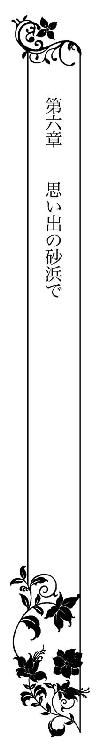
ハネムーンから戻り、瑛司のマンションで新婚生活が始まった。
詩帆は毎日幸せだった。瑛司はとても優しくしてくれて、夜も早く帰ってきてくれる。彼の熱い眼差しを思い出すだけで、詩帆の身体は甘く蕩けてくるようになっていた。
ハネムーンから帰ってきた直後は、親戚や友人、お世話になっている方々にお礼の言葉やハワイでの写真を添えてお土産を送ることで忙しかった。瑛司の実家と堀田家にはもちろん直接出向いて渡したが。
そんな日々が過ぎた今、そういった作業を終え、詩帆はこれからが本当の結婚生活だと思えるようになってきた。
家事は得意だ。広い部屋ではあるものの、物が少ないので、午前中には掃除が終わる。洗濯も買い物もそれほど時間がかかるわけではない。このままでは時間を持て余してしまいそうだった。
今日は昼食を食べ終えた後、ダイニングテーブルで瑛司がくれたタブレットで料理のレシピを検索して、あれこれメモを取った。瑛司は優しくて、何かしたいことがあればしていいと言ってくれる。ただ、どうもフルタイムの仕事は歓迎されてない気がする。
彼が望んでいるのは赤ちゃんで......。
結婚直後には、彼はそれほど子供を欲しがっていないようだったが、ハネムーンの途中から急に赤ん坊の話をし始めて、それから一度も避妊をしていない。
そう。仕事ばかりしていたハネムーン前半とは違って、後半はとにかく二人でベッタリくっついて過ごしたのだ。
詩帆はあのときのことを思い出して、うっとりする。
彼はリムジンでのガイドをキャンセルして、車をレンタルすると、二人きりでオアフ島を満喫した。
あのビキニやリゾートワンピも活躍したわ。
詩帆は思い出して、一人で笑った。彼は詩帆のビキニ姿を他の誰にも見せたくないと言ってくれたのだ。
あのときの彼の目つきったら......。
まるで食い入るように見ていた。ビキニの下の裸体を、彼は何度も見たことがあるというのに。
でも、とても嬉しかったわ！
愛されているという気がしてきて、胸がいっぱいになった。
ハワイアン・ジュエリーも買ってくれた。プルメリアのペンダントにブレスレット。どちらもダイヤモンドがついている。詩帆は何かというと、そのどちらかをいつも身につけていて、瑛司に呆れられていた。
『もっといいものを買ってあげるのに』と。
ハネムーンの最高に幸せな思い出の品だから、詩帆にとって大切なのだ。どんなジュエリーをもらったとしても、他には替えられない。とはいえ、いつも身につけてばかりいると、壊れてしまうかもしれないから、もっと大事にしたい。
詩帆はそう思いながら、今も自分の腕に光る金色のブレスレットにキスをした。
そのとき、電話が鳴った。
結婚してから初めてだった。瑛司に用事がある人は彼の携帯に直接かけている。固定電話にかかってきたことはない。
詩帆はドキドキしながら受話器を取った。
「神野です」
入籍してずいぶん経つが、神野だと名乗るのはまだ慣れていない。
『......あなた、奥さんなの？』
女性の声だ。しかも、つっけんどんな言い方に、詩帆は戸惑った。どこの誰だろう。瑛司の親戚だろうか。
「はい、そうですけど」
息を呑む音が聞こえてきた。
『じゃあ、結婚したのは本当だったのね？』
「ええ......」
詩帆は嫌な予感がした。
彼女はもしかして瑛司の恋人だった人なのでは？
大樹に言われたことを思い出す。瑛司には他に結婚する相手がいたのだと。破談になって、その代わりとして詩帆を選んだのだと。
まさか......違うわよね？
「あの、どなたでしょうか？」
『わたしを知らないの？ それとも知らないふりをしているの？』
「わ、判りません。あなたは......」
『わたしはこの結婚には反対よ！ それだけは言っておくわ！』
相手は一方的にそう宣言すると、電話を切ってしまった。詩帆は受話器を耳に当てたまま、呆然としていた。
彼女は何者......？ 瑛司さんの婚約者だった人？
破談になっても、結婚式場を予約したままだったということは、瑛司は彼女とよりを戻すつもりだったのだろうか。それが上手くいかなくて、代わりに詩帆を......。
いや、普通なら、ただ結婚式場を解約すればいいだけだ。それができない理由があるだろうか。たとえば、どうしても結婚しなければならない理由があったとか。
そんな馬鹿なこと、あるはずがないわ。
大樹は意地悪を言っただけなのだ。
そう思いながらも、詩帆は電話の相手が気になっていた。婚約云々の話が嘘だったとしても、瑛司みたいな素敵な男性には何人も恋人がいただろう。さっきの彼女はとてもきつい言い方で、まるで瑛司は自分のものだと言いたげだった。
もし瑛司さんも彼女に心を残していたとしたら......。
いいえ、そんなはずないわ。
だって、信じられないくらい彼は優しいもの。愛しているという言葉は聞いたことはないが、それでも彼の眼差しには愛が溢れていると思うのだ。
そうよ......。彼が他の人を愛しているはずないわ。
だが、心のどこかで、詩帆には不安があった。自分は美人でもなんでもない。両親もいなければ、家柄がいいわけでもない。それなのに、彼は二回目のデートでプロポーズした。
こんなわたしのどこがよかったの？
考えれば考えるほど、平凡な自分が愛されているのはおかしいと思う。
詩帆は受話器を戻し、リビングのソファに腰を下ろした。
ここは広いリビングで、日が落ちれば、素晴らしい夜景が見える部屋だ。自分がこんなすごい部屋に住んでいるのはなんとなくそぐわない。
実は、彼とわたしは合わないのでは......？
愛されているつもりだったが、たった一本の電話で心が揺らいでしまう。誰かが二人の結婚を反対している。そう思うだけで、自信などどこかへ消えていく。
わたしは本当に愛されているの......？
詩帆はただ瑛司に会いたかった。
翌日は休日だったので、詩帆は瑛司からドライブに行こうと誘われた。
詩帆の誕生日に行ったあの海辺へと、瑛司は車を走らせている。詩帆は昨日の電話のことを、瑛司にはまだ言ってなかった。言うべきかどうかも判らない。
だって、誰からかかってきたのかも判らないのに。
だが、きっと瑛司には心当たりがあるはずだ。一方的なストーカーならともかく、電話口で結婚に反対だと怒鳴る女性の名前くらい思い当たるだろう。
彼の過去のことは何も知らない。冗談みたいに子供の頃の話をすることはあっても、女性関係のことは彼も口を閉ざしている。けれども、それは過去の女性達や詩帆に対する礼儀であるのだろうと思う。
実際、詩帆もそういった恋愛話を聞きたいとも思わない。
詩帆が付き合ったのは瑛司だけだから、余計に過去の女性達に嫉妬してしまう。今のところ、名前も顔も知らないから、その女性達には実体がないのと同じことだ。しかし、電話の彼女のことを知ってしまったら、やはり嫉妬に苦しむと思うのだ。
馬鹿みたい......。彼と結婚しているのはわたしなのに。
思わず溜息をつきそうになったが、そんなことをしたら、せっかくのデートが台無しになってしまう。
結婚してから初めてのデートだ。しかも、思い出の地だ。瑛司にとってどうだか判らないが、詩帆にとっては初めて彼に愛を感じた場所だった。気分を切り替えて、楽しみたい。
気を取り直して、運転している瑛司に話しかけて、なんとかおかしな雰囲気にならないように努力した。
海辺に着くと、前に来たときのように二人で砂浜を歩いた。あのときと違い、今は十二月だから、風も強いし、コートを着ていても少し寒かった。
「ごめん。こんなに風が強いとは思わなかった。寒いだろう？」
彼は詩帆の肩に手を回してきた。
「大丈夫。こんなふうにくっついていれば、寒くなんかないわ」
詩帆はそう言いながら、彼のコートのポケットに左手を差し入れた。彼はクスッと笑う。
「ずるいな」
「だって手が冷たいもの」
詩帆は右手を自分のコートのポケットに入れる。これで寒くない。詩帆は彼に身を寄せた。
「でも、寒いから、前に来たときより人が少ないわ」
それでも、犬の散歩をする人やカップルはいる。詩帆はハワイでもこんなふうに早朝の砂浜を二人で散歩したことを思い出した。
「カップルはみんな寄り添っているね。それが目当てなのかな」
「そうかもしれないわね」
詩帆も彼と寄り添って歩けることが嬉しかった。もちろん家ではいつもくっついている二人だが、外出するときはやはりある程度、人目を気にする。だが、ここでは寒いため、くっついていてもおかしくない。
「寒くても、ここに連れてきてもらって嬉しいわ」
「海が好きだから？」
「ここが二度目のデートの場所だからよ。あのときの気持ちが甦ってきて......なんだかわくわくしてくるの」
そして、瑛司のことがたまらなく愛しくなってくる。いつまでも二人で歩いていきたいと思った、あのときの気持ちになってきた。
「よかった。昨日、君は何かに神経質になっていたようだから、リラックスしてほしかったんだ」
「瑛司さん......。気がついていたの？」
「ああ、もちろん。君のことは少しの変化があっただけでも判るよ」
つまり、それだけ彼の意識は詩帆に向けられているということだ。
詩帆は胸が高鳴る。そして、同時に、その言葉に勇気づけられた。彼はきっと過去の女性より、自分のことを愛してくれているに違いない。
「あの......昨日、電話があったの。女の人の声で」
「女性から？ 誰だろう。あの電話番号はほとんど誰も知らないと思うんだが」
詩帆の胸がズキンと痛む。
それなら、彼女は相当親しい人だったのかしら。
「その人は名乗らなかったわ。ただ、わたしのことを奥さんかと訊いてきて......。それから、わたし達の結婚が反対だって怒鳴ってきたの」
「なんだって？」
瑛司は立ち止まり、詩帆の正面に立った。そして、肩に両手をかけて、顔を覗き込む。
「君はその女性が、僕の昔の恋人だと思ったんだね？」
「だって......。そうじゃないの？ 本当に結婚したのかって確かめてきたし、相当ショックだったみたいだったわ」
彼は眉をひそめた。
「いいかい？ 僕はみだりに自宅の電話番号を教えない。それは間違い電話だったんじゃないかな？」
思いがけないことを言われて、詩帆はぽかんとなった。彼は言い逃れするつもりなのだろうか。それとも、本気でそう思っているのか。
「わたし、ちゃんと苗字を名乗ったわ」
「向こうが聞き違えたのかもしれない。僕があの部屋で暮らすようになったのは、そんなに前のことじゃない。引っ越してから、君以外の女性と付き合ったことがないんだ。その前は違う番号だった」
詩帆は肩の力を抜いた。それなら、彼の言うとおり間違い電話だったのかもしれない。ただ、電話の内容はあまりにも詩帆と瑛司の状況と合致していた。相手の女性は明らかに新婚の妻に電話をしてきたようだったからだ。
でも......。
彼が嘘をついているようには思えない。間違い電話でなければ、彼にストーカーのように一方的に恋をしていた女性がいたのかもしれない。そんな人なら、電話番号もなんらかの手で入手しそうな気がする。
だけど......。
詩帆の頭の隅に、大樹が嫌がらせのように言ったことが甦る。
「あの......わたしと婚約する前に、あなたに婚約者がいたことがあるって嘘よね？」
そう尋ねると、彼は険しい表情になった。
「そんなデタラメを誰が言ったんだ？」
「じゃあ......デタラメなのね？ ああ、やっぱり嘘だったんだわ。わたしに嘘を言って、結婚式の前に、嫌な気持ちにさせたかったのね」
詩帆はほっとした。しかし、大樹が自分を嫌っていることは知っていたが、嘘までついて傷つけようとしたことはショックだった。尊敬している幹夫の息子だから、詩帆はなるべく彼に好かれようと努力したが、無駄だったのだ。
「教えてくれ。一体、誰が......」
「大樹さんよ。結婚式場の予約が二ヵ月前なのに取れたのがおかしいって。あなたには婚約者がいて破談になったけど、まだ式場はキャンセルしてなくて、代わりの花嫁としてわたしを選んだとか......」
「そんな馬鹿な話は聞いたことがない。なんなんだ、代わりの花嫁というのは。それに、結婚式場はちょうどキャンセルが出たところだったんだ。破談したのはよそのカップルだ」
彼は不快そうに顔を歪めている。それはそうだろう。ひどい濡れ衣を着せられていたのだから。
「わたしも変だと思ったし、信じていたわけじゃないわ。ただ、大樹さんがそんなことを言ったから、少し気にかかっていたの」
「あの男は......クズだ。信用しちゃいけない。君が傷つくことになる」
クズとまで言われるなんて、瑛司は大樹の何を知っているのだろう。だが、実際、大樹はひどい嘘をついて、詩帆を動揺させようとしたのだ。
「ごめんなさい。変なことを言い出して......」
「いや、言ってもらえてよかった。そうでなければ、否定することもできないから」
彼はそう言って、詩帆の頬を撫でた。
ああ、なんて優しい人なの。疑いをかけられたようで、彼だって嫌な気分でしょうに。
「それと、電話のことも。別にあなたが浮気しているとか、そんなふうに思っていたわけじゃないの。ただ......」
「昔の恋人が僕の結婚を呪っていると思ったんだな？」
彼は冗談のような口調でそう言うと、ニヤリと笑った。つられて詩帆も笑ってしまう。
「呪われていたら嫌だわ。でも、すごく感情的な声で一方的にまくし立てられて切られたから、怖かったの。知らないうちに、誰かに恨まれているなんて......」
瑛司は人目も気にせず、詩帆を軽く抱擁した。いや、人目を意識しているから、強く抱き締めてはいないのだろう。
「大丈夫だよ。そんな変な女性とは付き合ってなかったし、恋人がいたのも昔のことだ。もし万が一、昔の恋人が現れたとしても、誰にも君を傷つけさせない」
「本当に......？」
「ああ。約束するよ」
彼は優しくそう囁いた。
詩帆は彼の言葉に頷いた。胸の奥が温かくなっている。彼の言葉が詩帆の不安を取り除いてくれたのだ。
「嬉しい......。瑛司さんが傍にいてくれたら、わたし、何も怖くないわ」
彼の手に力が込められたが、すぐに身体が離れた。詩帆はがっかりしたが、やはりこんなところできつく抱き合ったり、キスをすることはできない。
「僕も君が傍にいてくれれば、何も怖くないよ」
「瑛司さんに怖いものなんてあるの？」
詩帆が驚いて尋ねると、彼はにっこり笑った。
「あるよ。お化けとか」
「嘘ばっかり！」
詩帆が叩く真似をすると、彼はコートを翻し、ひらりと身体をかわす。そして、明るく笑った。
その笑い声を聞いて、詩帆の胸は弾んだ。
彼に恋人がいたのはずいぶん前のことなら、今更出てきて文句を言うことはないだろう。彼が恋人を捨てて、詩帆を選んだわけでもないからだ。
そして、何があっても、彼はわたしを守ってくれる......。
大樹の言葉も嘘だと判り、詩帆はすっきりした。
これで悩みは何もない。そういう意味では、あの間違い電話がかかってきてよかったのだ。これで、すべで解決したのだから。
これから、詩帆は幸せな結婚生活を送ることができる。
瑛司は詩帆の手を握った。
「さあ、そろそろお腹も空いたし、レストランに行こうか」
目が合うと、彼は微笑む。
その微笑みがとても眩しく見えて、詩帆は目を細めた。
月曜日になり、瑛司は朝食を摂った後、詩帆にキスして会社へ出かけた。
詩帆はいつものとおり朝食の片づけをすると、掃除を始めた。その合間に洗濯物を干す。掃除が終わると、買い物に行こうと、冷蔵庫の中のものをチェックした。
そのとき、インターホンが鳴った。
「はい」
ボタンを押すと、帽子をかぶり眼鏡をかけている若い女性の顔が現れて、ビクッとする。何故なら彼女はこちらをぎろりと睨みつけていたからだ。
まさか、この人があの電話をかけてきたの......？
「あの、どちら様でしょうか」
「......わたしの顔を知らないの？」
彼女は眼鏡を外した。
その顔には見覚えがある。テレビで見たことがあるのだ。
女優の神野梨佳。つまり、瑛司の妹だ。
「梨佳さん......！」
「そうよ。早く通して」
「はい！」
詩帆は慌ててオートロックの解除ボタンを押した。
梨佳とは初めて顔を合わせることになる。だが、どうして彼女はあんなに怒っていたのだろう。そして、あの声は紛れもなく電話の主でもあった。
どういうこと？
彼女はどうしてわたし達の結婚を反対しているの？
詩帆が狼狽えている間に、梨佳はエレベーターを上がってきていた。すぐにドアチャイムが乱暴に鳴らされて、慌てて玄関に向かう。
ドアを開けると、彼女はさっと中に入ってきた。そして、無言のまま靴を脱ぎ、勝手にリビングへ入っていく。詩帆はおろおろしながら彼女の後を追っていった。
梨佳はソファに腰を下ろすと、長い脚を組み、帽子と眼鏡を取ると、立ち尽くす詩帆をじろりと睨んだ。
「あの......初めまして。わたし......詩帆です」
今頃間抜けだと思ったが、詩帆は挨拶をした。
彼女は不機嫌そうに眉を上げる。
「わたしのほうは自己紹介なんて必要ないわよね？」
「はい。梨佳さんでしょう？ いつもテレビで拝見しているとおり綺麗な方ですね」
「そんなお世辞を言われても、わたしはあなた達を許さないわよ！ わたしがアメリカに行っている間に、まさか兄があなたと結婚することになったなんて......信じられない！」
詩帆はどうして彼女がこんなに怒っているのか、よく判らなかった。自分が不在の間に、兄が結婚式を挙げたことが気に食わなかったのだろうか。いや、どうも彼女の言い方だと、兄の結婚そのものを知らされていなかったように聞こえる。
でも、そんなこと、あり得るの？
妹に結婚することを伝えないなんて......。
詩帆はおずおずと尋ねた。
「意味がよく判らないんですが。梨佳さんが怒っているのは、わたしと瑛司さんが結婚したことですか？ それとも、結婚した時期のことですか？ 梨佳さんが結婚式に出席しないと聞いて、わたしは驚いたんですが......」
「わたしは兄が結婚するなんて知らなかったのよ！ もちろん知っていたら、絶対に結婚なんてさせなかったわ！ 自分のせいで、兄が脅迫されて結婚するなんて......」
脅迫されて結婚......？
詩帆はぐらりと自分の身体が傾いたのが判った。
梨佳の言ったことが信じられなかった。聞き違いだと思いたかった。しかし、確かにそう聞こえたのだ。
瑛司さんが脅迫されたの？
それで、わたしにプロポーズした？
意味が判らない。そんなはずはないが、梨佳はそう信じているのだ。
「脅迫って......どういうことですか？ そんなの......嘘ですよね？」
ショックのあまり唇が上手く動かせない。詩帆の声は弱々しかった。
梨佳は驚いたように詩帆を見つめている。
「あなた......顔が真っ青よ。大丈夫？」
「いいから教えてください。本当のことを」
声は細かったが、きっぱりと彼女に言った。梨佳は詩帆の顔を見ていたが、溜息をついて、脚を組み替えた。
「どうやら、あなたは何も知らないみたいね。でも、真実を知っていたほうがいいと思うの。わたし、ほんの一時期、堀田大樹と付き合っていたことがあるのよ」
「大樹さんと......」
そういえば、瑛司は言った。大樹のことをクズだと。あのとき、そこまで言わなくてもいいのにと思うほど、彼の声は辛辣な響きがあった。
「あるパーティーで知り合ってね。ホッタ食品の跡取りで、なかなかのイケメンだし。でも、すぐに中身のない男だと判って、別れたわ。だけど、わたし......酔っ払っていたとき、彼に写真を撮られちゃっていたの。上半身裸で彼と抱き合っているところよ」
彼女は女優だが、大女優というわけではない。モデルから転身して、今、売出し中といったところだ。今の時期にそんなスキャンダルが持ち上がるとまずいことになるだろう。彼女の将来に関わる問題だ。
「まさか、大樹さんはそれで脅迫を......？」
「どういうわけか、その写真を彼の父親が見たの。もしくは、最初から父親がグルだったのかしら。わたしは狙われて、誘惑されていたのかもしれないわ。......ともかく、それで父親がうちの両親を脅迫したのよ。写真を公開されたくなければ、神野ホールディングスの御曹司である兄と自分の娘を結婚させろって」
詩帆の脳裏に、瑛司とその両親が招かれた食事会のことが甦ってきた。翔子の言ったことは本当だったのだ。政略結婚は確かに計画されていた。だが、幹夫が梨佳の写真で脅迫したうえでの政略結婚だったという。
まさか......おじ様がそんな真似を？ いいえ、信じられないわ！
「でも、瑛司さんは佐紀さんと結婚なんてしなかったわ。結婚したのはわたしだから......」
「知っているのよ。あなたが実は堀田の娘だってこと」
詩帆は目を見開いた。
わたしが......おじ様の娘......？
梨佳は詩帆が驚いているのにも気づかず、話を続けていた。
「あなたのお母さんは堀田の秘書だったんでしょう？ ひどい男よね。妻がいながら、秘書に手を出すなんて......」
嘘。嘘よ！
目の前がぐるぐると回り出して、詩帆は床に膝をついた。
「ちょっと......大丈夫？ しっかりして！」
梨佳が飛び上がるように立ち上がり、詩帆の前に屈み込んだ。さっきまで怒っていたのに、今は心配そうに詩帆の顔を覗き込んでいる。
詩帆は眩暈が収まったものの、ショックが大きすぎて立ち上がる気力もなかった。
「本当なの？ わたしはおじ様の......堀田の娘なの？」
「あなたは......それも知らなかったの？ 何も知らずに結婚したの？」
梨佳は憐れむような表情で、詩帆を見つめた。
頭が痺れたようになっている。だが、自分が幹夫の娘だとしたら、すべて辻褄が合うことに気がついた。
幹夫は何度かあの田舎の港町へ足を運んでいた。それは詩帆に会うためだったのだ。そして、両親が亡くなった後、詩帆を引き取って、大学まで行かせてくれた。だが、実の娘だとしたら、当たり前のことだ。
そして、幹夫の家族......とりわけ嘉子に冷たくされていた理由も判る。詩帆だけがそれを知らされていなくて、みんなに受け入れてもらいたいと思い、家政婦の真似事をしていた。
六年間も必死に......。
詩帆は何も知らずに、幹夫を慕っていた。恩義を感じて、せっせと学費を返そうと、給料のほとんどを幹夫に渡していたのだ。
信じていたものが何もかも崩れ落ちていく。
そして、もっと恐ろしいことに気がついた。瑛司は詩帆が幹夫の娘だと知って、デートに誘い、プロポーズをしたという事実に。
彼は脅迫されて、仕方なく結婚したんだわ......。
最初は佐紀との結婚を期待されていたはずだ。だから、あの食事会が開かれた。けれども、瑛司は佐紀ではなく、詩帆を選んだということだ。
わたしは喜ぶべきかしら。二人のうちの一人に選ばれたのだから。
だが、もちろん笑うことはできなかった。彼が脅迫に屈して、プロポーズしたことには変わりはないからだ。
彼は食事会の翌日に会社に現れた。そして、幹夫と面会した後、急に詩帆をデートに誘ったのだ。あのとき、幹夫に詩帆が娘だと知らされたに違いない。そして、詩帆と結婚することを選んだ。
二度目のデートで早くも指輪を用意して、プロポーズしたのは、そういうことだったのか。すべて彼の意志ではなかったというわけだ。
すべて合点がいく。デートのことを幹夫に相談したとき、怒るどころか勧めてくれたことや、デートのための服や靴やバッグを買ってくれたことも。それから、婚約が決まったときにも喜んでくれ、結婚式の日にまるで『父親』のように振る舞っていたことも。
そうよ。わたし、今まで騙されていたんだわ。
幹夫は優しい人ではなかった。それどころか、冷酷な人だった。
詩帆のことを一度でも娘だと思ったことがあったなら、ちゃんと言ってくれたはずだ。両親を亡くしたことであれだけ落ち込んでいたのだから。だが、それどころか、引き取ったことで、恩に着せていたのだ。
ひどいわ......。
あまりにひどい。
急に涙が溢れ出してきた。詩帆は涙を拭くことも忘れて、ただ呆然としていた。信じていた人に裏切られ、信じていたことはみんな嘘だった。愛し合っていると思っていた夫は、脅迫されて結婚したのだ。
だから、彼は愛してるって言ってくれないのね。
詩帆の胸は痛んだ。
彼はプロポーズした後、詩帆と距離を置いているようだった。挙式してからハワイでも、彼は仕事にばかりかまけていた。ハネムーン後半からは違っていたが、どのみち最初が間違っているのだから、彼の優しさは愛情から出たものではあり得ない。
「さあ、こっちに来て」
梨佳は詩帆の手を取り、ソファへと誘導する。詩帆がソファに腰を下ろすと、彼女はバーカウンターへ行き、勝手にブランデーを注いで、詩帆にグラスを渡した。
「ありがとう......」
詩帆はグラスを受け取り、機械的に礼を言う。しかし、うつろな表情を元には戻せなかった。
ブランデーを飲むと、胸の中がカッと熱くなった。けれども、それは一時的なものだ。アルコールで心の痛みを消すことは不可能だった。
今、胸の中にはぽっかりと大きな穴が空いている。
「ごめんなさい。そんなにショックを受けると知っていたら、言わずにおいたのに」
梨佳は心配そうに、詩帆の隣に腰かけた。詩帆は彼女のほうをちらりと見た。
目元が瑛司に少し似ている。彼女は自分の義妹になるから、早く会いたいと思っていた。だが、まさかこんなことになるなんて、想像もしていなかった。
「梨佳さんがわたしと瑛司さんの結婚に反対なのは判ります......」
「わたしのために兄が犠牲になったと知らされて、ショックだったの。あなたはすべてを知っていて兄と結婚したと思っていたから、嫌な態度を取ったのよ。わざわざ文句を言うために国際電話をかけたり、急いで帰国して、今度は怒鳴り込んだりして......本当にごめんなさい」
彼女は申し訳なさそうに謝ってくれた。
こんな形で会うのでなければ、きっと仲良しになれたと思う。家族がいない詩帆は、彼の家族とも仲良くなりたいと思っていたからだ。
だが、すべてが幻想だった。彼ら家族は脅迫されたのだから、本当の意味で仲良くなることなんてできるはずがない。
幹夫と血は繋がっていると聞いても、今は嬉しくもなんともなかった。さんざん放置された挙句、利用されていたことが判ったからだ。
でも、ひょっとしたら......。
何かの間違いかもしれない。梨佳は家族から結婚のことを聞いて、アメリカから急に帰国したのだろう。けれども、彼女が聞き間違ったのかもしれない。
詩帆はそんなことはあり得ないと思いつつも、一縷の望みに託そうとした。
幹夫に会わなくてはならない。
会って、話を聞こう。真偽を確かめよう。
詩帆はうつろな気持ちで、そう決心した。
詩帆はホッタ食品の本社ビルの前でタクシーを降りた。
一年半の間、庶務課で働いた懐かしいはずのビルでもあったが、今は何も感じない。携帯が鳴る音を聞き、バッグから取り出して見る。
瑛司さんからだわ......。
きっと彼は梨佳から事情を聞いたのだろう。けれども、今は出たくない。詩帆は電源を切ると、ビルの中に入った。受付に座る顔見知りの女性社員は詩帆の顔を見て、にっこりと笑う。
「こんにちは。今日は誰かに会いにきたの？」
詩帆は弱々しい笑みを見せる。相手は詩帆の様子がおかしいことに気づいたのか、目をしばたたかせた。
「どうしたの？ 顔色が悪いけど」
「社長に......会いたいの。面会できるかどうか訊いてくれる？」
「いいわよ」
彼女は最上階の社長秘書室に電話をかけてくれた。しばらくして、詩帆に笑みを見せる。
「大丈夫だって」
「どうもありがとう」
詩帆はふらふらと直通のエレベーターに乗り、最上階へ向かう。扉が開くと、秘書が待っていた。もちろん彼女とも顔見知りなのだが、受付の社員とは違って、妙なことに作り笑いをしていた。
「よくいらっしゃいました。どうぞこちらへ」
庶務課の詩帆に対する態度とはまるで違う。あの頃は詩帆など取るに足りない小娘といった扱いをしていたのに。
やっぱり神野ホールディングスの御曹司と結婚したから......？
肩書きによって態度を変える人もいるんだわ。
詩帆は苦々しげにそう思った。
応接室に案内されて、立派なソファに腰を下ろしした。少ししてから、機嫌よさそうな顔をした幹夫が現れた。
「どうしたんだ？ 瑛司君が小遣いをくれないわけじゃないだろう？」
単なる軽口なのだろうが、詩帆は自分がお金目当てで結婚したと嫌味を言われたような気がした。
冗談ではない。詩帆にはそんな打算はひとつもなかったのに。
ただ、愛されていると勘違いした。それだけだ。
「梨佳さんがアメリカから帰国したんです。わたし......全部聞きました。脅迫のこと」
「ああ......なるほど。それで？」
幹夫は素っ気なく尋ねた。
この人はとても冷たい人だった。詩帆は今までそれに気づかなかった。いや、気づきたくなかったのかもしれない。優しい人に引き取られ、面倒を見てもらって幸せだと思っていたかったのだ。
他に行き場所なんてなかったから。幹夫を家族のように思っていたかったからだ。
「おじ様は......わたしのお父さんなんですか？」
か細い声で尋ねると、彼は一転してにこやかな表情になった。
「そうなんだよ。嘉子の手前、言えなかったが、私が本当の父親なんだ。君のお母さんが昔、私の秘書をしていたときに、嘉子が入院してしまって、彼女が慰めてくれたんだ」
その言い方では、母がまるで彼を誘惑したかのようだった。
そんなはずないわ。
何故なら、母はとても真面目だったからだ。まさか幹夫が無理やりそういう行為に及んだとは思わないが、真面目な母が既婚者と......しかも上司と関係を結んだとしたら、きっとずいぶん悩んだことだろう。
ああ、お父さんはわたしの実のお父さんじゃなかったんだわ。
幹夫が詩帆の父親なら、そういうことになる。
改めて詩帆はショックを受けた。父はとても可愛がってくれて、一瞬でも自分の実の父ではないなどと考えたことがなかった。
しかし、顔は似ていなかった。それに、父の親戚はとても冷淡だった。彼らは自分と詩帆との間になんの繋がりもないことを知っていたのかもしれない。
「どうして......。どうして言ってくださらなかったんです？ 黙っていろと言われたら、わたし、黙ってました。おじ様がお父さんなら......」
彼が父親なら、彼の家で暮らすことに、それほど恩義を感じたりしなかっただろう。逆に、嘉子や半分だけ血の繋がった兄姉の反感に、もう少し上手く対処できていただろう。詩帆は気に入られたくて努力していたが、もし何もかも知っていたなら、嘉子が気持ちを和らげる可能性が薄いことだけはとっくに理解していたはずだ。
「君は義理の父親を本当の父親だと思っていたのだろう？ 君の気持ちを傷つけるようなことはできないさ」
それは言い訳のように聞こえた。詩帆は自分には身寄りがないと思い込んでいた。親戚には冷たくされていたし、祖父母ももういなかったからだ。
しかし、詩帆にはまだ父親がいた。そして、父方の祖父母もいることになる。一度、彼らに会ったことはあるが、詩帆には目もくれなかった。
当たり前よね。わたしはただの住み込み家政婦にしか見えなかっただろうから。
「奥様や佐紀さん、大樹さんは、わたしのことご存じなんですか？」
「まあね。知り合いの娘をわざわざ引き取るわけにはいかないだろう？ 私の娘だから、私の家に住まわせ、大学まで面倒を見た。しかも、わが社の社員にまでしてやった。つまり親としての義務は果たしていたんだ」
それはそうだ。彼の理屈は判る。けれども、詩帆の心はまだ納得していなかった。
今まで『優しいおじ様』だと思い込んでいて、彼のためになることを進んでやっていたつもりだった。
でも......。
きっと、それはこの人の心には届いてなかったんだわ。
できるだけ家事をやっていたことも。彼の家族に冷たい仕打ちをされていたことも。給料のほとんどを渡していたことも。
みんな、なんの意味もなかったんだわ......。
「おじ様が梨佳さんの写真をネタに脅迫して、瑛司さんとわたしを結婚させようとしたというのは本当なの？」
「いや、瑛司君と佐紀とだ。だが、彼が佐紀など興味ないと言うので、仕方なく君を勧めた。君にとっては願ってもないことだったろう？ まさにシンデレラじゃないか。無給で家政婦をしていた君が、あんな大企業の御曹司と結婚できたのは、私のおかげなんだ」
幹夫の言葉は容赦なく詩帆の心を抉った。彼の娘はあくまで佐紀で、詩帆は二番目の候補だったのだ。
大樹の言ったことがようやく理解できた。
代わりの花嫁......。
まさにそうだった。結婚式場については、確かにキャンセルが出たのを押さえただけなのだろうが、実際に詩帆は佐紀の代わりみたいなものだった。瑛司の側からは違っていたかもしれないが、少なくとも堀田家から見れば、そうだったということだ。
「瑛司さんは知っていたんですか？ わたしがおじ様の娘だということを」
「もちろんだ。彼がここに来た時に教えておいた。だから、彼はすぐにデートに誘っただろう？ あれは私が、君がロマンティックなことが好きだから、そういうふうにしてやってくれと頼んでやったんだ」
詩帆は新たな衝撃を覚えた。
あのデートも......？ 瑛司さんが優しくしてくれたのも、頼まれたからなの？
いや、頼まれたどころか、彼は脅迫されていたのだ。それこそ『仕方なく』デートに誘い、キスをして、それから......。
「彼は演技が上手いんだろうな。あっという間に君にプロポーズをして、結婚することになった。君が私の娘だという噂話は、それとなく業界に回っている。つまり、ホッタ食品は神野ホールディングスの後ろ盾があることになる」
それが狙いだったのか。ホッタ食品も大きな会社なのだが、それ以上の大きな会社との結びつきがあるとなれば、世間の見る目が違う。仕事のレベルではどうなのか知らないが、少なくともそういった付き合いのある人達の間で、幹夫は大きな顔ができるというわけだろう。
詩帆は完全に幻滅していた。彼を見誤っていた。そもそも、彼が実の父だと知っていたなら、彼に対する気持ちも違っていただろう。
彼にとっては、詩帆を引き取ったのも打算的な行動だったのではないだろうか。
我が子に対する愛情も少しくらいあったのかしら......？
信じたい気持ちはある。でも......。
彼は脅迫までして、自分の地位を向上しようとした。それは事実のようだった。そして、瑛司は仕方なく詩帆と結婚した。
何もかもショックだが、一番傷ついたのは、瑛司にも騙されていたということだ。
瑛司は詩帆が幹夫の娘だということは口にしなかった。そして、何も知らないのをいいことに、甘い言葉やキスで醜い計画を隠したのだ。
詩帆はあることに思い至り、身体が震えてきた。
「まさか......瑛司さんはわたしがこの計画に加担していると......思っていたの？」
幹夫は肩をすくめた。
「当然だ。君も私達の仲間ということになる。だから、脅迫のことは他人に話すんじゃないぞ」
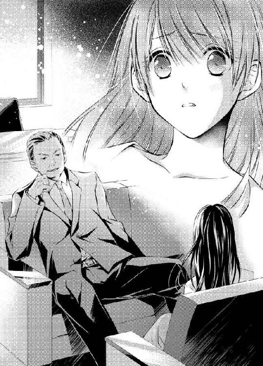
詩帆は涙ぐんだが、泣かなかった。傷ついていたけれど、それを見せたくなかったからだ。
こんな人を父親だとは思えない。娘に愛情などないのだ。何かの役に立つかもしれないから、家に置いておいただけだ。
利用するための駒だった。少しでも愛情があるなら、こんな仕打ちができるとは思わない。
詩帆はふらふらと立ち上がった。
「もう......言うことはありません」
「今度、瑛司君とうちに遊びにくるといい。それとも、ホームパーティーを開こうか？ あちらのご両親も招待して......」
詩帆は黙って、首を横に振った。
彼は良心の呵責がないのだろうか。脅迫した相手をパーティーに呼ぶなんて、絶対におかしい。いや、瑛司の両親がどう思っているかは判らない。義父も会社優先のようで、普通の人間とは少し違うからだ。企業のトップにいると、あんなふうになってしまうのだろうか。
だとしたら、瑛司さんも......？
判らない。でも、少なくともわたしは水に流せない。
何も知らず瑛司の演技に騙されて、恋に落ちていた。彼は嫌々ながら詩帆と結婚したのだろう。だから、婚約してから結婚式の日まで、デートもしなかった。ハネムーンに行っても、仕事ばかりしていたのだ。
わたし、きっと嫌われていたんだわ......。
だが、ハネムーンの後半から、彼は人が変わったように詩帆に優しくなった。あれには、なんの意味があったのだろう。
少しくらい、わたしを好きになってくれた......？
それとも、何か打算のようなことがあったのか。詩帆と仲良くしておかなくてはならないようなことが。
詩帆の心はバラバラになってしまいそうだった。
涙を堪えて、頭を下げる。
「お時間をとらせてしまい、申し訳ありませんでした」
「詩帆！ 君は......」
親子なのに、こんな他人行儀な挨拶はおかしいかもしれない。けれども、詩帆はやはり幹夫を父親として見ることはできなかった。
詩帆は応接室を出て、エレベーターのボタンを押した。幹夫が後を追ってくる。
「いいかい？ 理性的になれ。私がお膳立てをしなければ、瑛司君とは結婚できなかったんだぞ」
「判ってます......。感謝しています。いろいろなことをしてくださったことに関しては」
ただ、この政略結婚は別だ。
「君は私の娘なんだから......いいんだ。感謝など。ただ......」
幹夫は大声だ。きっとこれも秘書室に聞こえている。あの政略結婚の噂の出許はやはり秘書室からだろう。ということは、詩帆が彼の娘だということも噂になっているかもしれない。
エレベーターの扉が開いて、詩帆は乗り込んだ。
「さよなら、おじ様」
扉が閉まる。
詩帆はエレベーターの壁にもたれかかる。途中の階で停まり、このエレベーターが直通のものでなかったことに気がついた。慌てていたから間違えたのだ。
扉が開いて、乗ってきたのは翔子だった。
「詩帆じゃない！ 社長に会ってきたの？」
詩帆はぎこちない笑いを返す。
「ええ......そうなの」
翔子は地階のボタンを押すと、扉が閉まった。
「ねえ、詩帆が社長の隠し子なんだって噂になってるんだけど......」
もうとっくに噂になっていたのか。実際、それが世間に知られなければ、自分が瑛司と結婚した意味がないのだ。
「そうなの。わたし、知ったばかりで......」
「そんな......詩帆も知らなかったなんて......。ねえ、大丈夫？」
翔子が心配してくれている。詩帆は彼女に泣きついて、慰めてもらいたかった。けれども、ここは会社で、彼女は仕事中だ。そこまで甘えていてはいけない。
詩帆は涙をぐっと堪えて、微笑んだ。
「大丈夫。いろいろあったけど......」
「一人で帰れる？ 具合悪そうだし、あたし、送っていこうか？」
もちろん、そんなことまでしてもらうわけにはいかない。
「わたし、電車で行くところがあるから。心配してくれてありがとう。夜にでも連絡するから。今度、お茶でも飲みにいきましょう」
エレベーターが一階に着き、扉が開く。
「あたしも連絡するからね」
「またね、翔子」
詩帆は手を振り、一階で下りた。受付の女性社員にも微笑んで会釈をしたら、向こうも同じような挨拶を返してくれた。
わたしが社長の娘だって、彼女も知っているかもしれないのね。たぶん秘書だって......。
『隠し子』と言われて嬉しくないのは確かだが、幹夫の娘だからといって、詩帆が恥ずべきことは何もない。しかし、脅迫による結婚に自分が知らずに加担していたことがショックで、自分が何か汚れた存在になったような気がしていた。
もう......家には戻れない。瑛司さんの部屋には。
いや、いつかは戻らなくてはならない。彼と対峙して、自分の潔白を彼に信じてもらわなくてはいけない。
だけど、今は一人になりたかった。
ただ......誰にも会いたくない。誰も信じられない。
詩帆は黙って一人で夕日に照らされた海を眺めていた。
瑛司とドライブで訪れたあの浜辺だ。砂浜へと下りる石の階段に腰かけ、波しぶきを見ながら、詩帆はずっと泣いていたのだった。
海面がキラキラと光っている。富士山も見えて、とても美しい風景なのに、詩帆の心はまだ癒されていなかった。
家に帰らなくてはいけないことは判っている。けれども、まだ帰りたくない。かといって、堀田家にはもう帰れなかった。あそこには最初から最後まで、自分の居場所はなかったのだ。
お世話になった恩だとかなんとか言わずに、さっさと家を出ればよかった。あそこにいても、いいことなんて何もなかった。どんなに尽くしても、冷たい仕打ちを受けるばかりだったが、それでもあの家に居続けたのは、幹夫を父のように慕っていたからだった。
まさか本当にお父さんだったなんて......。
いいえ、わたしのお父さんは亡くなったお父さんだけよ。
詩帆は漁師だった父の姿を思い描いた。母と仲がよく、詩帆をとても可愛がってくれた。
わたしは家族が欲しかったの。失った家族の代わりが。
だが、詩帆が家族を失ったことが今の状況を生んでいるのだ。詩帆が堀田家に居候していなければ、瑛司は佐紀と結婚したかもしれない。しかし、その場合、詩帆は彼と出会ってはいないのだから、こんなに悲しい気持ちになることもなかっただろう。
瑛司さんとなら、温かい家庭をつくれると思ったのに......。
詩帆の目にはまた涙が溢れ出してきた。何度拭いても同じことで、きっと目は真っ赤になっていて、みっともない顔になっていることだろう。
ふと足音が近づいていることに気づいた。顔を上げると、派手な髪形をした三人の高校生が詩帆の傍に立っている。
「お姉さん、さっきから何泣いてんの？ オレら、慰めてやろうか？」
彼らはニヤニヤ笑いながら、詩帆に声をかけてくる。彼らは三人ともブレザーの制服を着ていたが、上着のボタンは開け放していて、ネクタイはつけずに、ワイシャツもだらしない着方をしていた。ボタンを少し外した襟元からは金のチェーンネックレスが見えている。
街で会ったりしたら怖かっただろう。だが、何故だか今はそんなに怖さを感じなかった。悲しみのほうが強くて、それどころではないのかもしれない。
「あなた達、寒くないの？」
詩帆がそう尋ねると、三人は一瞬妙な顔をしたが、またニヤニヤ笑い出す。
「オレら、寒さとか全然平気だから」
「そう。元気いいのね。羨ましいわ」
詩帆は手にしていたハンカチで目元を拭く。ハンカチはもうすっかり湿っていた。
「お姉さん、失恋でもした？」
「男にフラれたんだろ？ けっこう可愛いのにな」
もしかして、彼らは慰めてくれようとしているのだろうか。詩帆は少しおかしくなって、笑おうとしたが、また涙が出てきてしまった。
「......ごめんなさい。涙が止まらないの」
「あー......こっちも悪かったよ。あ、指輪してんじゃん。もしかして奥さん？」
「旦那さんが浮気したとか？」
詩帆は首を横に振った。
「彼は浮気なんかしないわ。真面目な人なの。でも......わたしのこと好きじゃないのよ。きっと嫌われているわ」
今まで静かに泣いていただけだが、喋るために口を開いたことで、急に嗚咽が出てしまい、それを抑えようとして、今度はしゃくり上げてしまった。
「ご......ごめん......なさいっ」
「あー、泣くなって」
彼らは詩帆を取り囲むように屈んだ。
「そうだよ。なんか買ってきてやろうか。ほら、チョコとか」
「バーカ。なんでチョコなんだよ」
「甘いもの食べると元気が出るっていうじゃん。元カノがそう言ってた」
「おまえ、元カノの話ばっかり。お姉さん、こいつもフラれたんだよ。一晩中、名前を呼びながら泣いててさあ。......なんか変な名前だったよな？ 猫みたいな名前」
「猫じゃねーよ。ミーコだよ。あ、本名じゃないからね。本名はね、ミカエル」
「本名のほうが変だろ！」
まるで漫才を聞いているようで、彼らが笑うのに釣られて、詩帆も思わずクスッと笑ってしまった。
「あ、笑った！」
「お姉さん、笑ってるほうがいいよ。百倍可愛いよ」
「......ありがとう。元気出てきたわ」
彼らの一人が詩帆の手に触れた。
「旦那さんに訊いてみればいいよ。本当に嫌われてるかどうかさ。真面目な人なら、お姉さんみたいな可愛い人を嫌ったりしないって」
彼らの見かけは怖いが、親切で優しい心を持っているのだ。詩帆はこんなところで一人で泣いているのが馬鹿らしく思えてきた。
だって、泣いたって、どうしようもないことだもの。
大事なのは、この高校生の言うとおり、相手と話してみることだ。自分の悲しみに浸っていて、そんなことまで忘れていた。携帯も電源を切ったままだから、きっと瑛司も心配しているだろう。
そのときだった。
後ろのほうから誰かが駆けてくる音がした。
「おまえ達！ 僕の妻に何をしているんだ！」
瑛司さん......。
詩帆は、コートを翻して階段を駆け下りてくる瑛司の姿を見て、声が出せなかった。
携帯の電源を切ったままなのに、どうして居場所が判ったのだろう。詩帆はまたじんわりと涙が目に滲んでくるのが判った。
彼はわたしを心配して、ここまで捜しにきてくれたんだわ！
詩帆は感動で胸がいっぱいになった。
高校生達は詩帆に尋ねた。
「旦那さん？ カッコいいね」
「お似合いじゃん」
「なんだ、心配してるんだ。お姉さん、フラれてなかったんだよ」
瑛司は詩帆を守ろうとやってきたが、高校生達が笑いながら詩帆に手を振るのを見て、呆然と立ち止まる。
「お姉さん、バイバイ。幸せになりなよ」
「ありがとう。すごく楽しかったわ」
詩帆も手を振り返す。
「一体、どうしたんだ？ あいつら......君に何かしたんじゃなかったのか？」
「何もされなかったわ。わたしが泣いていたのを慰めてくれたの」
「詩帆......」
彼は詩帆の隣に腰を下ろした。
「スーツやコートが汚れるわよ」
「君だって」
「わたしのは高価なものでもないから」
だからといって、本当は汚したくない。しかし、ここに座ったときは、もうどうでもいい気分だったのだ。
「梨佳から事情を聞いて、君に電話をしたんだ。でも、電源を切ってしまったんだろう？ とにかく心配だったからあちこち捜し回って、ホッタビルにも行った。堀田さんは君の行き先には関心もなかったようだが、確か君と親しい友人が会社にいたことを思い出して、訊いてみたんだ」
「翔子ね」
「電車で行くところがあると言ったそうだね。君は堀田家には戻らないと思った。だとしたら、故郷に戻るか、この海か......どちらかだと予想したんだ」
「故郷ではわたしを待っている人なんかいないわ」
懐かしい故郷なのは間違いない。しかし、こんな気分のときに行けば、空しいだけだった。
「そう。だから、僕もここじゃないかと考えた。いや、ここであってほしいと思った。君がここにいれば、君は僕との思い出を大切にしていることになる。だとしたら......僕を許してくれるかもしれないと思った」
詩帆は驚いて、隣に座る彼のほうを向いた。
「許す？ わたしがあなたの何を許すというの？ わたしこそ......ごめんなさい」
また涙が溢れてくる。どれだけ泣けば、涙は涸れるのだろう。不思議なほど、詩帆の涙は止まらなかった。
瑛司はポケットから清潔な白いハンカチを出して、詩帆の涙を拭いた。
「君が謝ることなんてないさ」
「だって、あなたは脅迫されて、結婚を強制されたんでしょう？ あなたは嫌々ながらそれに従った。わたしなんかと結婚しなくちゃならなかったなんて......」
「馬鹿なことを言うなよ。それは......最初は反発したよ。政略結婚も嫌なのに、脅されるなんてね。だけど、君のことをただの家政婦だと思っていたときから気に入っていたし、佐紀さんと君だったら、断然君がいいと思った」
「でも、わたしが脅迫に加担していると考えていたんでしょう？」
「それも最初のうちだけだ。君のことをいろいろ尋ねたよね？ それは君のことを知りたいと思ったからだし、生い立ちや考え方を知るようになって、君に惹かれるようになってきたんだ」
「わたしに......惹かれる？ お芝居じゃなくて？」
瑛司はクスッと笑って、詩帆の手を握った。
「キスはともかく、それ以上のことを芝居でできるほど器用じゃないよ。君を最初に抱いたとき......僕はあのとき本当に君を抱くつもりじゃなかったんだ。ただプロポーズするために部屋に連れていっただけなのに、我慢ができなかった。信じられないほど、もう夢中になっていた。あんなこと......芝居じゃできないよ、僕は」
あのときのことを思い出し、詩帆は頬を染めた。彼はとても優しかった。だから、詩帆は愛されていると思い込んだのだった。
結婚の経緯を聞いて、あれは愛ではなかったと思ったのだが、そうではなかったのだろうか。
詩帆はドキドキしてきた。
「君は脅迫なことなど何も知らない。それは信じるようになっていた。だが、脅迫に屈したことが悔しかったこともあって、君に惹かれたくなかった。だから、結婚前にもハネムーンでも、君との間に距離を置こうなんて馬鹿な試みもしてみた」
「あれは......そういうことだったのね。わたしは事情を知って、てっきり嫌われていたんだって思っていたの」
「とんでもない。僕はずっと葛藤していたよ。君を好きになってはいけないと」
瑛司は詩帆の指先にチュッと音を立ててキスをした。
「でも、あなたはハネムーンの途中から人が変わったみたいになってきて......」
「ああ。僕はあのとき変わったんだ。ハネムーンで君がどんなに他人に優しいのか、よく判った」
「あなただって、優しいじゃないの」
「いや、僕は優しくなんかないよ。優しいふりをしているだけで、どちらかというと冷たいんだ。僕の両親を見ていたら判るだろう？ 父は仕事命で家庭なんてどうでもよかった。それに外で浮気をしていた。母はそんな父に対抗して、自分も遊び回ってばかりいたんだ」
詩帆は彼が、家政婦の作るカレーライスが好きだと言っていたことを思い出した。確かに、そんな両親の許で育てば、あまり他人に優しくなれないというのも判らないでもない。
だけど、彼の本質は優しい人だと思うわ......。
「でも、あなたはあの老夫婦に付き添ってくれたし、お世話もしてくれたわ。ハネムーンの後半からは誰にでも親切にしていたし」
彼はふっと笑った。
「あれは君の真似をしていただけだ」
「真似？」
詩帆は目をしばたたかせた。
「いや、真似というより......君にふさわしい男になりたいと思ったんだ」
「わたしにふさわしい......？」
彼がそんなことを考えているなんて、想像もしていなかった。
瑛司は手を伸ばして、詩帆の髪にそっと触れてきた。
「そう。あのとき、僕は生まれ変わった。愛する君のために......」
詩帆ははっとして、彼の瞳をじっと見つめた。彼も目を逸らさずに、見つめ返している。
「あの......あの......本当に？」
囁くような小さな声で尋ねた。彼は詩帆が見つめる中で、蕩けるように微笑む。
「詩帆......。君を心から愛してる」
波の音に混じっていても、はっきりと聞き取れた。
胸に喜びが込み上げてくる。
信じられないけど、彼はそう言ってくれたのだ。
わたしを心から愛してるって......！
「ああ......瑛司さん！」
詩帆は彼に抱きついた。そうせずにはいられなかったのだ。どんな言葉よりも、その行動は詩帆の喜びを表していた。
感動のあまり、身体が震えてしまう。彼に抱きつく腕も、やはり震えている。
「......君は？」
彼の声が掠れている。詩帆の胸はキュンと締めつけられた気がした。
愛の告白をした後は、彼も不安なのだ。自分が片想いではないことを確認したい。そう思っていることが、詩帆に伝わってきた。
詩帆はその言葉を口にした。
「わたしも......愛してる」
彼の手が詩帆の頭を引き寄せる。
唇がそっと触れた。
もちろん、こんなところで本格的なキスは始められない。けれども、キスせずにはいられなかった。二人とも我慢できなかったのだ。
瑛司はそれ以上のキスをする代わりに、自分の額を詩帆の額にこつんと当てた。そして、顔を離すと、風で乱れた詩帆の長い髪を撫でてきた。
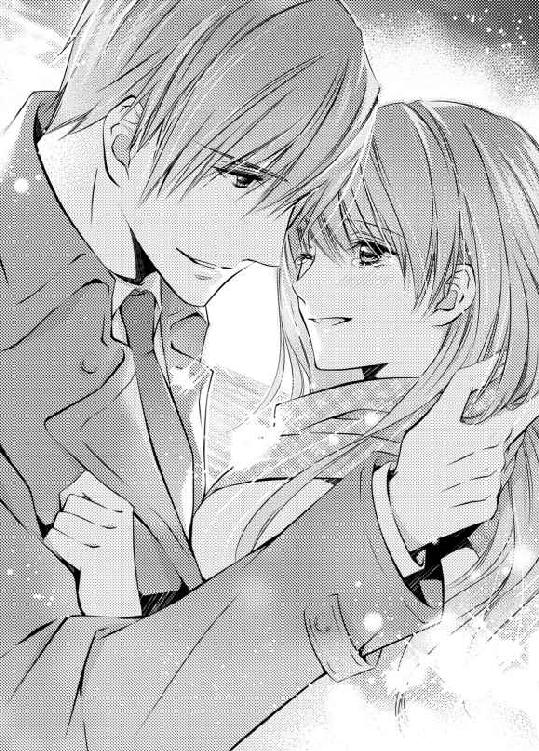
「わたし......ひどい顔をしてるでしょう？ 泣いてばっかりだったから」
「否定はしないよ。でも、泣かせたのは僕だ。いつかは結婚の真相を話さなくてはならないと思っていながら、なかなか話せなかった。君は堀田さんをとても慕っているようだったから。だが、まさか父親だと知らないなんて思わなかった」
つまり、彼はわざと黙っていたわけではなかったのね。
詩帆はそれを知り、ほっとした。
「全然気づかなかったわ。でも、梨佳さんの写真で脅迫したのが自分の父親だと思ったら、あなたに申し訳なくなってしまって......」
「馬鹿だな。君は何も悪くない。それに......結果的には脅迫してくれてよかったと思わないか？」
「えっ、どういうこと？」
瑛司の目はキラキラと光っている。
「脅迫されなかったら、君と知り合う機会もなかった。デートもしなかっただろうし、結婚だってしてなかった」
そういう考え方もあるのか。いや、違う。彼は心からそう思っているのだ。
詩帆の胸の奥が温かいものでいっぱいになってくる。
ついさっきまでは絶望しかなかったのに。今は光で満たされ、希望が輝いている。
「そうね。おじ様がしたのは悪いことだけど、あなたが後悔していないなら......」
「後悔なんて絶対にするものか」
詩帆は微笑んだ。
「ありがとう。わたし、幸せよ」
彼もまた優しく微笑んだ。
「よかった。君を幸せにしないと、あの高校生達が乗り込んでくるかもしれないからね」
「あの子達、全然怖い人じゃなかったわ。見かけだけなのよ」
「まったく......。君って人は。僕はあいつらに囲まれている君を見たとき、どれだけ寿命が縮んだことか」
だから、彼は焦って駆け下りてきたのだ。
詩帆は彼の肩に頭を載せた。
「今日のこの風景は絶対に忘れないわ......」
「ああ......そうだね。僕も忘れないよ」
海面が夕日に染まっている。今はさっきとは違う気持ちで見ているから、より綺麗に感じるようだった。
波の音が繰り返し響いている。
詩帆は彼に身を寄せて、穏やかな愛をただ感じていた。
日が落ちてから、二人は近くのレストランで食事をした。そして、マンションに戻ったのは、もう夜も更けた頃だった。
「ごめんなさい。わたしが衝動的に海なんかに行かなければよかった。あなたは仕事を放りださなくてはならなかったし、明日も会社に行くのに、すっかり疲れさせてしまって......」
「いいんだよ。僕は胸に溜めていたものを全部吐き出して、気分がいいんだ。君に愛しているって、ずっと言いたかったんだから」
できれば、もっと早く言ってほしかった。だが、愛していると言われていたとしても、梨佳の話を聞いたら、やはり落ち込んでいたことだろう。
レストランに行く前に、瑛司は梨佳に電話をした。詩帆も瑛司に代わって電話に出たが、彼女はさんざん電話口で謝ってきた。詩帆は梨佳のおかげで、すべてが明らかになり、瑛司との間に強い結びつきがあることが確認できたので、彼女にお礼を言った。いずれ、彼女とはまた改めて会って、家族としてこれから仲良くやっていきたいと思っている。
詩帆は翔子にも電話しておいた。詳しい説明は今度ゆっくり会ったときにするとして、まずは心配させたことを謝った。彼女は瑛司に押しかけられて、さぞ驚いたことだろう。だから、二人の仲は元どおりであることもアピールしておいた。
コートを脱ぎながら、詩帆は自分の髪を触った。
「海風にずっと当たっていたから、髪を洗わなくちゃ。先にお風呂に入っていいかしら」
潮の匂いがついていることが、どうにも気になっていたのだ。
「先に？ もちろん一緒に入るに決まってるじゃないか」
ハワイではよく一緒に風呂に入ったものだった。日本に帰ってからは、詩帆が夕食の後片づけをしている間に、彼が先に入り、その後から詩帆が入っていたのだ。
「ハネムーンみたい」
「そうだね」
顔を合わせると、自然と微笑みが浮かぶ。幸せな気分で胸がいっぱいになっていて、頭の中がふわふわとしていた。
浴槽に栓をして、湯を溜め始めると、服も脱いでいないのに、瑛司がバスルームにやってきて、後ろから詩帆を抱き締めてきた。
「まだよ......」
「もう待てないよ」
彼は詩帆を自分のほうに向かせると、唇を重ねた。
蕩けるような甘く優しいキス......。
そう。海辺で本当に交わしたかったのは、こんなキスだった。
しかし、舌を絡めているうちに互いに夢中になっていき、自分達が今どこで何をしているのかも判らなくなっていた。
湯が溜まったと知らせるブザーが鳴り、二人はビクッとする。そんなに長い時間、キスをしていたなんて思わなかったのだ。
「スーツを脱いでこないと。皺になるわ」
「そうだね」
彼が寝室に向かったところで、詩帆は脱衣所で服を脱いだ。そして、長い髪を早く洗ってしまいたくて、小さな椅子に腰かけ、シャワーを頭にかける。
「洗ってあげるよ」
彼がバスルームに入ってきて、扉を閉めた。
詩帆が持っていたシャワーのノズルを持つと、長い髪に丁寧に湯をかけていく。そして、シャンプーを手に取ると、まるで美容師みたいに器用な手つきで洗った。
最初はとても不器用な手つきだったのに......。
ハワイで彼は何度も詩帆の髪を洗ってくれていて、そのたびに上達していったのだった。
「今度はわたしが洗ってあげる」
瑛司を椅子に座らせて、詩帆が彼の髪を洗う。
「前からのほうがいいな」
「えっ、前って......？」
彼が頭に泡をつけたまま、くるりとこちらを向く。詩帆は仕方なく前のめりになって、彼の髪を洗おうとした。
「あ......ちょっと......あん」
彼は詩帆の乳房を両手で掴み、揉み始めた。乳首も指で撫でていく。
「やめて......。洗えなくなっちゃう」
けれども、彼は言うことを聞いてくれない。なんとか詩帆は彼の髪を洗うと、シャワーで泡を洗い流した。
「もう......もういいでしょう？」
身体を引き剥がすと、彼は濡れた髪をかき上げ、ニヤリと笑う。
「身体も洗わなくちゃいけないな。隅々まで」
彼に隅々まで洗われることを想像し、詩帆はドキッとした。
「わたし......」
「震えるほど期待してしまう？」
詩帆は思わず身体を震わせていた。彼の言葉だけで想像がふくらんでいたからだ。
二人は立ち上がり、互いの身体にボディーソープを塗りつけ、洗い始めた。
泡のぬめりが肌に刺激を与えていく。敏感な乳首を両方の指で弾くようにして撫でられると、詩帆は脚がガクガクと震えだしてきて、止められなくなる。思わず彼の身体にしがみついてしまう。
「あぁん......あん......」
「君がイイのはここだけじゃないだろう？ もっとイイところがあるのに」
彼は両脚の間に触れてきた。
泡のついた手で秘部を撫でられ、甘い疼きが身体の奥まで貫いていく。我慢ができなくて、詩帆は腰を揺らした。
「も、もう......」
「もう？ まだだよ。もっと我慢して」
「そんな......ぁ......無理っ」
その部分がぬるぬるとしてきたような気がするが、泡もついているので、感じているせいなのかどうかは判らなかった。
まだ中に入れられていない。花弁をそっと撫でられるだけで、詩帆は何度も身体を震わせた。
「君も......洗ってくれないかな」
詩帆は快感に耐えながら、彼の身体に掌を滑らせた。小柄な自分の身体に比べると、彼の背中だけでも洗うべきところがたくさんあって、手を伸ばしていくと、詩帆は自分から彼に身体を押しつけるような格好になった。
「......いいね、その洗い方」
「わざとやっているんじゃないわ......」
「わざとじゃないからいいんだよ」
彼は詩帆の背中にも手を回して泡を塗りつけていく。二人の間には彼の勃ち上がっているものがある。詩帆はそこも両手で優しく洗う。
彼は詩帆を抱き寄せ、唇を奪った。
たちまち自分達か何をやっているのか、よく判らなくなってくる。身体を洗っていたはずなのに、気づけば愛撫しかしていない。相手の身体を刺激し、昂らせるためにだけに手を動かしているような気がした。
いつしか詩帆は彼にしっかりとしがみついていた。彼は詩帆のお尻のほうから秘裂の中に指を差し込んでいた。
「はぁ......ん......あぁ......っ」
指が内壁を擦っていく。
詩帆はその刺激に耐えられず、痙攣するように身体を震わせた。
「も、もう......」
「まだだ」
「ダメ......ああ......もう」
興奮しすぎて、わけが判らなくなりそうだった。脚も震えている。全身が熱くなり、詩帆は涙ぐんだ。
けれども、まだ決定的なものが足りずに、ただ焦らされていた。
「ねえ......お願い」
「まだダメだね」
彼は優しい声で意地悪をする。詩帆は彼を睨みたかったが、その力はもうなかった。身体は燃えるように熱くて、もうどうしていいか判らなくなる。
あと一押しで快楽の園に逃げ込めるはずなのに、彼がその手立てを与えてくれないのだ。
「瑛司さん......っ」
「イクときは一緒だよ」
彼は詩帆の耳の傍で囁いた。そして、シャワーの湯を出すと、泡を洗い流していく。詩帆はただ彼にされるままになっていた。
「さあ、風呂に入ろうか」
彼に促されて、詩帆はふらふらしながら浴槽に入った。彼ももちろん同じように入ってくる。
この風呂は決して狭いわけではないが、二人で入るようには作られていない。つまり、浴槽の中で二人は身体をくっつけることになる。
肌が触れ合い、詩帆は彼にもたれた。
「あぁ......わたし......」
「もう我慢できない？」
詩帆は頷いた。実際、物足りなくて、身体をくねらせていた。燃え上がっている身体が彼を求めている。
彼だって......もう我慢できないはずよ。
詩帆はすがるような眼差しで彼を見つめた。
「お願い......」
掠れた声で囁きかけて、彼の首に腕を回した。そして、自分から彼に唇を押しつける。身体が彼を欲しがっている。
いいえ、わたしのすべてが彼を欲しがっているのよ。
身体だけではない。心もだ。
今までも二人の間に愛はあった。詩帆も愛されていると思っていたが、今日は互いの愛を言葉で確かめ合ったのだ。だから、今度は肉体で愛を確認したかった。
二人は舌を絡めて、息もできないほど激しくキスを交わした。
わたし......頭の中が沸騰してしまいそう。
唇が離れたとき、詩帆は呟くように言った。
「あなたが欲しいの......。欲しくて欲しくてたまらないの......」
「ああ......詩帆......僕もだよ」
瑛司は詩帆の腰を抱え上げると、秘部に彼の硬くなったものが押し当てられた。
「あ......ん」
彼のものが内壁を擦りながら、性急に中へと入ってきた。詩帆の奥まですっかり彼で満たされる。
「あぁん......っ」
最奥を突かれて、甘い淫らな声がバスルームに響く。
詩帆は慌てて自分の口を両手で塞いだ。外に聞こえていたら大変だ。だが、彼はニヤリと笑うと、容赦なく下から突き上げてくる。
詩帆はバランスを崩しそうになり、彼の身体にしがみつく。同時に、声を上げてはいけないと思い、彼の肩に唇を押しつけた。
「僕の腰に脚を絡ませられるかい？」
詩帆は小さく頷き、言われたとおりにする。
快感であたまがボンヤリしていて、自分ではもう何もできそうになかった。ただ彼に従うしかない。
でも......それでいいの。
だって、わたしは彼のものだから。
もう何も後悔しない。
瑛司は詩帆をしっかりと抱きながら、腰を動かしていく。
「やっ......なんだか......お湯が入ってきそうなの......」
「大丈夫だよ......」
そうだろうか。だが、そんなこともどうでもいいような気がしてくる。詩帆はただひたすらに、瑛司にしがみつき、彼が与えてくれる快感に集中していた。
「んっ......んっ...ん......」
湯の温度のせいではなく、身体の内部が熱くてたまらない。
ううん。頭の中だって熱いわ。
奥のほうまで彼が何度も突いてくる。詩帆は快感の渦に巻き込まれて、どうしようもなくなってきた。
だって、これはただの肉体の交わりではなくて......。
愛情が互いの胸に溢れているから。
永遠に彼を失ったと思ったのに、今まで以上の結びつきを感じている。
『君を心から愛してる......』
彼の低い声が今も耳に残っている。
わたしも愛しているの......！
今まで出会ったどんな人よりも、あなたを愛してる。
たった一人のわたしの家族......。
「えい...じ......さんっ......」
熱く痺れた奥に、彼がぐっと腰を押しつけてくる。
「あぁぁ......っ！」
詩帆はぐっと背筋を反らして、絶頂を迎えた。
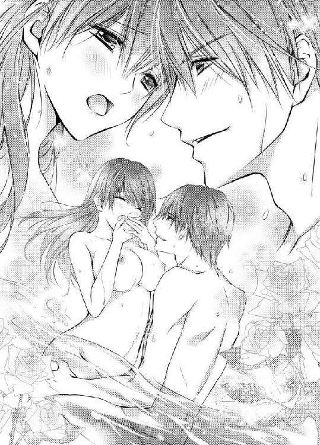
そして、彼もまた同じように身体を強張らせ、上りつめた。
ああ......幸せ。
激しい鼓動の中、二人は息を弾ませ、再び唇を合わせる。詩帆はもう彼に夢中だった。いつまでも、こうしていたい。
もちろん、その考えは現実的ではない。いつまでも浴槽の中で湯に浸かっていることはできないからだ。
でも......そうしたい気持ちはあるわ。
いつまでもキスが終わらなければいい、と。
永遠に続く夢を見ていたい。いや、永遠に続く現実にしたい。
詩帆はそんなふうに思った。
甘い余韻の中、やっと唇が離れる。
詩帆は瑛司の瞳の中を覗き込んだ。彼も詩帆の瞳を見つめていたが、やがてゆっくりと笑顔になった。
「君の目の中に星が見えるみたいだ」
「ほ、星って......？」
「キラキラと光っている。情熱に満たされたってところかな」
詩帆はさっと頬を赤らめた。
「だって......」
「気持ちよかった？」
「も、もちろんよ......。あなただって......」
「ああ。もちろん気持ちよかった。だけど、僕が満ち足りた気分なのは、それのせいじゃない」
瑛司は詩帆の顎に手を添えて、目を見つめる。
「君が僕を愛してくれている。それがはっきり判って......心が浮き立つんだ。僕は君の愛さえあれば、何も怖くない。なんでもできるような気がしてくる。力が湧いてくるんだ」
「わたしも......わたしもそうよ」
あなたの愛さえあれば、何も怖くない。
だから、こんな場所で彼に抱かれることだって平気だ。本当のことを言えば、情熱が少し鎮まった今では、こんなところで身体を重ねたのかと思うと、恥ずかしくなってくる。まさに常識外れの行為だからだ。
でも......。
二人の間に常識なんて必要かしら。
彼がわたしを愛してくれている。もちろん、わたしは彼を愛してる。
それだけで幸せになれるから......いいのよ。
詩帆が微笑みを浮かべると、彼も蕩けるような笑みを返してくる。
彼もまた同じ気持ちなのだと、詩帆は思った。
詩帆はバスタオルで身体を拭き、長い髪をドライヤーで乾かした。そして、ハネムーン用に買った可愛いネグリジェを着て、リビングへ向かう。瑛司は一足先にリビングにいて、バーカウンターで飲み物を作っていた。
彼は湿った髪のまま後ろのほうに撫でつけている。パジャマを持っていないので、ボクサーパンツを穿いて、その上にバスローブを着ていた。
詩帆はソファに腰かけ、差し出されたフルート型のシャンパングラスを受け取る。
「何？ これ」
「ミモザだよ。君はアルコールに強くないから」
「あなたのは？」
「これはシャンパン。君と乾杯しようと思って」
二人で並んで、グラスを触れ合わせる。
彼は何も言わなかったが、これは愛を確かめ合ったお祝いなのだろう。詩帆はグラスに口をつけた。
「おいしい。オレンジジュースみたい」
「半分はオレンジジュースだけど、もう半分はシャンパンだ。僕がいないときは、飲みやすいからって、たくさん飲んじゃダメだよ」
ハネムーンで酔い、少し足元がふらついたときがあった。だが、あのときは、瑛司が食事の途中で仕事の電話をするために席を立ち、なかなか戻ってこなかったから、トロピカルカクテルをつい何杯も飲んでしまったのだった。
「大丈夫よ。一度失敗すれば充分だもの」
それに、あんなことはもうないだろう。
あのとき、詩帆は彼があまりに仕事ばかりするので、自分に魅力がないのだろうかと真剣に悩んでいたのだ。だが、今はそんな悩みもない。彼は詩帆を蕩けるような甘い微笑みを浮かべて見つめている。
「君の顔、本当に見飽きないな」
「そんな......。わたしは美人でもなんでもないのに」
整った容姿に、御曹司の肩書き。そして、裕福だということを考えると、女性はいくらだって寄ってきたことだろう。それこそ選び放題だ。彼の過去の恋人達は、詩帆の何倍も美しかったに違いない。
本当のことを言えば、どうして彼が自分を好きでいてくれるかどうか自信がなかった。
わたしなんか平凡だもの......。
しかし、瑛司は真顔で言った。
「いや、綺麗だよ。やっぱり君を選んだ僕は見る目があるな」
「そんなことばかり言って......」
詩帆は照れ隠しにグラスを口に運んだ。
彼は嘘をつかない。いや、ほとんどつかない。少なくとも、彼は本気でそう思っているようだった。
わたしのこと......綺麗だって。
瑛司はふんわりとした優しい笑顔を向けてくる。詩帆は頭の中が再びふわふわしてくるのを感じた。
ああ......幸せ！
彼は囁くような低い声で言う。
「本気だよ。初めて君を見たときのことを思い出すよ。君はケータリングのスタッフみたいな服装にエプロンをつけて、ポニーテールだった。そんな姿なのに、何故だか僕の目を引いたんだ」
「佐紀さんはとても綺麗なドレスを着ていたのに？ 派手なアクセサリーもつけていたわ」
瑛司は顔をしかめて、首を振った。
「僕は父から、堀田さんの娘の誕生パーティーに招かれたと聞かされていたんだ。もちろん実は違っていたわけだが、前もって堀田家のことは調べてあった。特に娘のことは。彼女はブティックのオーナー店長と名乗っていたが、店長らしきことは何もしていなかった。店は親が出してくれたものだし、切り盛りは副店長がすべてしていた。おまけに、彼女には既婚者の恋人がいたんだ」
「ま、まあ......そうだったの。知らなかった。わたし、佐紀さんはすごく仕事ができる人だって思っていたわ。本人もそんなふうに言っていたし」
しかも恋人がいたなんて！
それなのに、詩帆が瑛司とデートしていることに文句をつけてきたのだ。呆れるしかない。既婚者の恋人がいながら、自分も瑛司と結婚しようと考えていたなんてぞっとする。一体、結婚をなんだと思っているのだろう。
詩帆には理解不能だった。
「息子のほうについては、梨佳のこともあってクズだと思っていたが、仕事ぶりもそうだったようだ。ホッタ食品と取り引きがある会社にコネで就職したものの、仕事は部下に押しつけて、責任も取らないような男だ。堀田さんがどんなに会社を大きくしたとしても、息子に継がせたら終わりだろうな」
愚かにも、詩帆は幹夫の会社ではなく、別の会社で働く大樹のことを偉いと思っていたのだ。幹夫も優しい人だと思っていたし、詩帆のほうは人を見る目はあまりないようだった。
でも、瑛司さんだけは別......。
彼だけは一目で惹かれたわ。
住む世界が違うと思っていたが、こうして愛し合えるようになったのは、やはり幹夫のおかげかもしれない。
もちろん脅迫はいけないことだけど。
「あの食事会のとき、あなたが庇ってくれて嬉しかったわ」
「堀田家の人達が、君を召使いか何かのように叱るのが気に食わなかった。君に惹かれながらも、可哀想だと思っていた。ところが、堀田さんが僕に、君が自分の娘だと告白してきたんだ」
「わたしを押しつけられてしまったのね......」
瑛司はニヤリと笑った。
「実はラッキーと思ったのさ。どっちか選ばなくちゃなら、断然、君のほうがいいと飛びついた。すぐデートに誘っただろう？」
詩帆は頬を染めた。
「わたし、すごく嬉しかったわ。二度目のデートで海に連れていかれたとき、自分が恋に落ちたって思ったの。だから、わたしにとって、あそこは本当に思い出の場所だったのよ」
「僕もだよ......。自覚はなかったけど、君を愛しく思うようになったのは、あの場所だった」
二人の視線が合う。
優しい眼差しに見つめられて、詩帆の胸に深い喜びが込み上げてきた。
「瑛司さん......」
「君に出会えて......君を無理やり押しつけられるなんて、僕は幸せ者だよ」
もちろんそれは嫌味ではなく、冗談っぽく言っただけだ。詩帆は笑おうとしたが、何故だか涙が出てきた。
「ごめん。言い方が悪かったかな」
「違うの。わたし達の結婚は運命なんだって思ってしまって......。泣いたりして、馬鹿みたいね」
「いや......いいんだ。運命。そうかもしれない」
瑛司はそう言って、グラスをテーブルに置いた。そして、詩帆のグラスを取り上げて置く。
「僕はどんな悲しいことやどんな苦しいことがあったとしても、永遠に君を愛すると誓うよ」
詩帆は目を見開いた。
それは結婚の誓いの言葉だ。
彼は強制された結婚ではなく、今、自分の意志で誓いを立てたのだ。詩帆の目からまた涙が溢れ出てきた。
「わたしも......わたしも誓うわ。たとえどんなことが起ころうとも、わたしは永遠にあなたを愛するわ。それに......わたしは永遠にあなたのものよ」
「詩帆......！」
瑛司は詩帆を抱き締めた。詩帆もしっかりと彼の背中に手を回した。
二人の身も心も溶け合う。
もうこれ以上の幸せはないように思う。
「君の故郷に行きたい。君のご両親のお墓参りをしたいよ。君を幸せにするとご両親の前で誓うから」
「嬉しい......」
「そして、何人もの子供をつくろう。たくさんの子供達が犬と遊ぶんだ。僕達が笑いながら、それを眺めていて......」
詩帆は彼の目を見ながら頷いた。
きっと温かい家庭になるわ。
「愛しているわ、瑛司さん」
彼の真剣だった瞳がふっと優しくなる。
「僕もだ......。愛してる」
それ以上の言葉はいらない。
二人の顔が近づき、唇が触れ合う。
それはどんな誓いよりも甘くて......。
詩帆は熱いときめきに胸を震わせた。
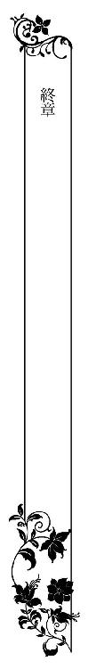
遠くで子供のはしゃぐ声と大型犬が吼える声が聞こえてくる。
そして、男性の優しい声が......。
あれは誰......？
目を閉じた詩帆は男性の姿を思い浮かべた。
それは身体にフィットしたスーツがとてもよく似合う男性。そして、カジュアルな格好もとても素敵に見えて、笑うと、とても優しそうな顔になる。
詩帆や子供を見つめるときには、蕩けるような甘い笑顔になって......。
そのとき、わたしは愛しさで胸がいっぱいになるの。
『詩帆......』
彼の声が聞こえてくる。
あれはわたしの旦那様よ。
子供はわたしの子で......。
芝生の上で元気な子供と大きな犬が転げ回って遊んでいる。目を閉じているのに、まるで見えるようだった。
わたしも傍に行きたい。この幸せが本物なのかどうか確かめたい。
目を開けたら、また夢なのかもしれない。すべては消え去り、一人きりの薄暗い部屋にいるのかもしれなかった。
『詩帆......』
また名前を呼ばれた。
詩帆は両手を差し出した。
わたしを一人にしないで。わたしを迎えにきて。
詩帆の手に温かい手が重ねられた。
はっと目が覚める。
目の前には思い描いたとおりの男性の顔があった。
「瑛司さん......？」
「詩帆、うたた寝していたら風邪をひくよ」
「わたし......」
ここはリビングのソファの上だ。あのタワーマンションから一軒家に引っ越している。広めの庭があり、芝生が敷き詰めてある。つまり理想の家だ。
それでも、まだ夢の続きを見ているような気がして、瑛司の頬に触れてみる。確かに本物だった。
「どうしたんだ？ まだ夢を見ているのかい？」
詩帆はかぶりを振った。
「夢じゃなかった。夢じゃなかったわ......」
不意に詩帆が涙ぐんだので、彼は驚いているようだった。
「どんな夢を見たんだ？」
「いいえ、夢のせいじゃないの。わたし......堀田家にいる頃によくこんな状況の夢を見ていたのよ。旦那様がいて、子供と犬がいて......。でも、目が覚めたら、わたしは独りぼっちなの」
彼ははっとしたように目を見開き、それから優しく微笑む。
「僕は傍にいるよ。いつまでも」
「ええ......」
「君には三歳の男の子がいて......」
彼は詩帆のお腹に手を当てた。
「お腹にはあと五ヵ月もすれば生まれてくる子供もいる」
そうだった。
彼と結婚してから、もう四年が過ぎていた。二人が愛を確認し合った後、すぐに妊娠して、子供が生まれた。
「レン君は......？」
「蓮はラッキーと一緒に庭で遊んでいる。ほら、声が聞こえるだろう？」
確かに蓮ははしゃいでいて、ゴールデンレトリバーのラッキーにフライングディスクを投げているようだった。
詩帆はほっとした。
「これが全部夢だったらどうしようと思ったの」
「馬鹿だな、君は......。ほら、起きてごらん」
彼は優しく詩帆を抱き起こした。リビングの様子は見慣れたもので、すべて詩帆が家具と配置を決め、いろんなものを飾っている。瑛司のあの寒々しいマンションの部屋とは違う。温かみのある家庭そのものを象徴していた。
瑛司は詩帆が蓮を身ごもると、すぐに家を探してくれた。豪邸でもなんでもないが、広い庭つきの一戸建てだから、かなりの金額がかかったと思う。しかし、芝生の庭がある家は、瑛司自身が望んだことでもあったのだ。
虐待を受けていたというラッキーを譲り受けたのは蓮が一歳のときだ。最初は怯えるばかりだったラッキーも、今では蓮のいい遊び相手で、蓮を愛し、いつでも守ろうとしてくれている。
開け放した窓から、蓮とラッキーが遊んでいるところが見えた。
詩帆はまた涙が出てきてしまって、手で拭いた。
「何が悲しいんだ？」
「違うの......。幸せすぎて......。だって、わたしの夢がすべて叶ったんだもの」
「君の夢だった？」
「芝生の庭で子供と犬が遊ぶの。わたしの傍には理想な旦那様がいてくれて、いつでもわたしを守ってくれるのよ」
彼はクスッと笑った。
「僕の夢も似たようものだった」
「本当......？」
「やっぱり芝生の庭に子供と大型犬が遊んでいるんだ。そして、僕の傍らには綺麗な奥さんがいて......」
二人は家を探していたときに、子供と犬が遊べる庭が欲しいという話をしていたが、彼も詩帆と同じ夢を持っていたとは知らなかった。
「わたしは綺麗じゃないわ」
「綺麗さ。少なくとも、僕の目にはそう見える」
彼は真剣に言ってくれている。鏡を見れば大したことがないのは判っている。それでも綺麗だと言ってくれるのが嬉しかった。
だって、嘘をついているわけじゃないもの。
目を見れば判る。彼の目にはきっとそのように見えているに違いない。
結婚して四年も経てば、互いの考えていることも判るようになる。最初は誤解もし合ったが、今は互いを理解していると思う。
「お腹の子が生まれたら、またお墓参りに行かなくちゃな」
「そうね......」
蓮が生まれてしばらく経ってから、彼は詩帆の故郷まで連れていってくれた。亡くなった両親に、自分はもう大丈夫だからと告げた。優しい夫と可愛い子供に恵まれたから、何も心配いらないのだと。
堀田家の面々とは、たまに顔を合わせる。詩帆が幹夫の庶子であることは知られているので、彼らは神野家の親戚という立場で、様々なパーティーに招待されるからだ。彼らは今も冷たい。幹夫は優しく接してくれるが、彼の本性を知ってからは、やはり前のようには慕うことはできなかった。
でも、いいの。
詩帆にはもう本物の家族がいるからだ。
瑛司は詩帆の傍に寄り添うように腰を下ろした。二人の目には青々とした庭が見える。蓮とラッキーは元気に走り回っていた。
「幸せよ......。あなたに出会えてよかった。あなたと結婚して、本当によかった......」
瑛司は詩帆の肩に手を回した。
その温もりがとても愛しい。
「僕もだ。君に出会えて......君と結婚できたことに感謝したい」
彼は詩帆の顔を覗き込み、微笑みを浮かべる。
胸の奥がキュンとして......。
愛が溢れる。
「詩帆......愛してるよ」
涙が溢れそうになりながらも微笑みを浮かべる。
「わたしも......愛してる。瑛司さん......」
顔が近づき、唇が重なる。
なんて幸せなのかしら......。
バタバタと音がして、蓮とラッキーが窓から飛び込んできた。
「ああ、またパパとママがキスしてる！」
蓮は不満そうに詩帆の膝に乗ってきて、二人の邪魔をした。ラッキーは瑛司の膝に前脚を載せて、のしかかってくる。
「こら、重いよ。ラッキー」
「僕もラッキーも仲間に入れてほしいもん。ねえ、ラッキー？」
ラッキーは瑛司の顔を舐め回している。詩帆は蓮の髪を撫でて、額にチュッとキスをした。
「蓮もラッキーも可愛いわ」
「本当？」
「本当よ」
「じゃあ、ジュースちょうだい！」
どうやら庭で走り回っていて、喉が渇いたらしい。詩帆は微笑み、瑛司と顔を見合わせた。彼もにっこり笑い、蓮に話しかける。
「ジュース飲んだら、ドライブに行こうか？」
「海に行くの？ ラッキーも一緒？」
「ああ。ラッキーも一緒だ」
「やったー！」
蓮はきっと車の中で寝入ってしまうだろう。そして、車が海辺に着いたら、またはしゃぎ回るのだ。
そして、キラキラ光る海面と波しぶきを見ながら、詩帆はきっと『あの日』のことを思い出す......。
瑛司と目が合うと、彼も同じことを考えているのが判る。
初めて愛を感じたとき......。
愛を告白したとき......。
潮風に長い髪がなびいて、唇が触れた。
気がつくと、瑛司は蓮の目を盗んで短いキスをしていた。
「愛してるよ」
彼は小さな声で囁いた。
あとがき
こんにちは。水島忍です。ロイヤルキス文庫では何度か書いていますが、チュールキス文庫では初めてです。「溺愛社長とウェディング」、いかがでしたでしょうか。
不幸なシンデレラ（本人はそこまで不幸だとは思っていないですが）のヒロイン、詩帆はけなげで優しい娘ですが、本人が知らぬ間に政略結婚の道具にされてしまいます。自分とは違う世界の住人だと思っていた瑛司に突然デートに誘われ、二回目のデートで早くもプロポーズ。初めての恋に舞い上がり、事情を何も知らぬままロマンティックな夢の中で結婚します。
一方、瑛司は仕方なく詩帆をデートに誘い、プロポーズをすることに。彼女をひどく軽蔑していたはずなのに、どんどん彼女に惹かれていって......。けれども、こんな形で結婚したくはなかったし、そんな相手を好きになってはいけないと思うあまりに、不自然に彼女と距離を置こうとしたりします。
瑛司はクールな人間で、自分は優しくないと言ってますが、やはり根っこの部分は優しいんじゃないかと思います。たぶん自分の好きな人間や守るべき相手にはめっちゃ優しいんだろうなーと。なんだかんだいって、妹のことも守らなくてはと思っていますし。
そして、詩帆の本当の姿に気づき、彼女を愛していると認めた瞬間に、彼は超優しい人に変身します。溺愛モードにチェンジです（笑）。
「君にふさわしい男になりたい」って言ったヒーローは、初めて書いた気がします。それくらい彼女に惚れきってます。そして、すごく尊敬してますね。自分にないものを、彼女はすべて持っているから。そんな彼女を全身全霊で守りたいとも思っています。うーん、格好いい！
結局、詩帆は欲しかったものをすべて手に入れるのですが、それも天から勝手に降ってきたものではなく、彼女が無欲でコツコツとやってきたことが実を結んだのだと思います。物語のシンデレラもそういうお話だったのかな。王子が見初めた理由は、実は彼女の美貌だけではなかったのかもしれません。
さて、今回のイラストは弓槻みあ先生です。もう、詩帆が清楚で可愛くてたまりません！ 顔が可愛いのにおっぱいが大きいのも、ちょっと萌え～（笑）。そして、スーツ姿の瑛司がめっちゃ格好いいです！ ドヤ顔も素敵ですが、優しげな顔もイイ。まさかの堀田さん登場に驚きましたが（ここにイラスト指定が来るとは！）、弓槻先生、素敵なイラストをどうもありがとうございました！
それでは、読者の皆様、このへんで。楽しんでいだたけると嬉しいです。
水島忍
詩帆は悩んでいた。
深刻な悩みというわけではない。どちらかというと、嬉しい悩みだ。世間の人が聞いたら、それが悩みなのかと、きっと呆れられるだろう。
とはいえ、詩帆は真剣だった。
自分はあまりにも恵まれすぎているのではないだろうか。そして、あまりにも幸せすぎるのではないか、と。
詩帆の今までの人生は、両親を亡くしたあのときから変わってしまった。もちろん親を亡くした子供は詩帆以外にもたくさんいる。だから、自分が特別に不幸だったとは思わない。
それでも、心には何か淋しさみたいなものがずっとあった。
だからこそ、今の幸せが信じられない。
神野瑛司という素晴らしい夫に愛されているという事実にも、どこか本当のことなのだろうかと思ってしまう気持ちがあったのだ。
馬鹿馬鹿しいと言われるかもしれないけれど......。
幸せには慣れてないからだ。今、詩帆はゆったりとしたソファに身を沈め、タワーマンションの上階からの夜景を見つめていた。
彼はもうすぐ帰ってくるだろう。そして、あの蕩けるような笑顔を見せ、『ただいま』と言いながらキスをしてくれる。
そして、詩帆のふくらみつつあるお腹を撫でるのだ。
詩帆はマタニティドレスの上からお腹を撫でた。本当のことをいえば、まだそれほど大きなお腹ではないから、マタニティドレスを着なくてもいいのだ。けれども、これを着ると、誇らしい気分になってくる。
だって、わたしのお腹の中に、瑛司さんとわたしの赤ちゃんがいるんだから。
そう。そんなとき、とても幸せだと感じるのと同時に、不安も覚えてしまう。
この幸せが手からすり抜けてしまうのではないかと。
根拠のない不安だと判っているのに。
瑛司と詩帆は二人で家を探した。そして、理想の家を見つけて、手に入れたばかりだ。今、改装をしていて、それが済んだら引っ越しをすることになっている。
つまり、赤ん坊が生まれるときには、二人は理想の家で暮らしているのだ。
大きな家だけれど、大きすぎない家。そして、広い庭があり、その庭には芝生を敷き詰める予定だ。
子供の性別はまだ判らないが、その子供と犬が遊ぶところを、詩帆も瑛司も想像して、その家を選んだ。
ああ。やっぱり幸せすぎるわ......。
不意に、ドアチャイムが鳴らされて、ビクッとする。
瑛司さんだわ......！
詩帆は微笑みを浮かべた。彼はもちろんカードキーを持っているが、詩帆にドアを開けてもらいたがる。以前から、彼は結婚したら、家で帰りを待つ妻にドアを開けてもらいたいと思っていたらしいのだ。
彼の母親が子供だった頃の彼に無関心で、家政婦に育てられたようなものだと言っていたから、家庭に理想を抱いているのだろうが、ある意味、彼はロマンティストなのかもしれない。
でも、そこが可愛いのよ......。
可愛いなんて言ったら、彼は機嫌を悪くするから言わないが、詩帆はひそかに彼のそこが微笑ましいと思っていた。
そして、わたしも彼のためにドアを開けてあげたいと思っている......。
詩帆はドアを開けた。
「お帰りなさい」
彼は想像通りの笑顔を向けてきた。
「ただいま」
ドアを閉めると、詩帆を抱き締めて、軽くキスをする。そして、お腹を撫でた。
「ただいま、ちびすけ。元気だったかい？」
詩帆はクスッと笑った。
「もちろんよ」
「部屋が薄暗いようだが、どうかしたのか？」
「え......ああ、夜景を眺めていたの」
リビングは間接照明だけをつけている。そのほうがロマンティックに夜景を眺められるからだ。
「部屋を暗くするのは、僕と二人でいるときだけにしてほしいのに」
詩帆は彼の表情が曇ったのを見て、眉をひそめた。
「どうかしたの？ 何か......いけなかった？」
「君が薄暗い部屋の中に一人でぽつんといるのを想像したら、前に夕暮れの海辺で君が座っていたのを思い出したんだ」
いろんなことにショックを受けて、一人で行方をくらまし、泣いていたときのことだ。
「わたし、夜景を見ながら泣いていたわけじゃないわ」
「判っているよ」
瑛司は溜息をついた。
「だけど、今が幸せすぎるから、ふと君が急にどこか遠くに行ってしまうんじゃないかと思ってしまうんだ。もしくは、こんなに幸せなのは夢なんじゃないかと......」
詩帆はぽかんと口を開いた。
やだ。彼はわたしと同じことを考えていたんだわ！
詩帆が不安なのも、この幸せを絶対に手放したくないと考えているからだった。
でも、彼も同じことを考えていて......。
なんだか安心した。二人して、幸せが消えてしまうかもしれないと恐れているなんて馬鹿みたいだ。それより、二人が今、幸せであることに感謝して、楽しみたい。
詩帆は彼に微笑みかけた。
「ねえ、わたし、実はね......」
詩帆は彼と同じ気持ちであることを話そうと、口を開いた。
幸福な今を大切にしようって。
ねえ、瑛司さん。
詩帆は優しげな微笑みを返してくる彼にしがみつきながら、耳元でそっと囁いた。
愛に溢れた魔法の言葉を。
おしまい♥
溺愛社長とウエディング
電子第１版発行 ２０１６年６月30日
著 者 水島 忍
発行所 株式会社ジュリアンパブリッシング
東京都千代田区九段北１‐５‐９‐３Ｆ
０３‐３２６１‐２７３５
※本電子書籍は左記の作品に基づき製作されました。
発行 株式会社ジュリアンパブリッシング
チュールキス文庫『溺愛社長とウエディング』
(初版発行 ２０１６年４月30日)
(c)Shinobu Mizushima 2016
※本書の一部、あるいは全部を無断で複製複写（コピー）、転載、上演、放送することは法律で認められた場合を除き、著作権の侵害となるため、禁止します。